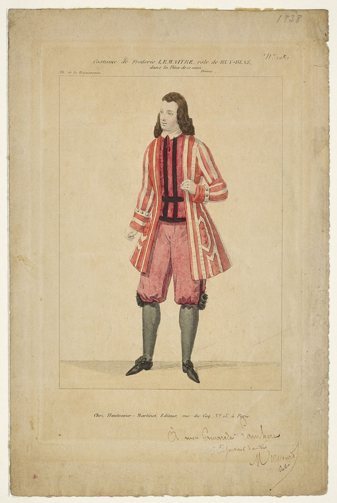
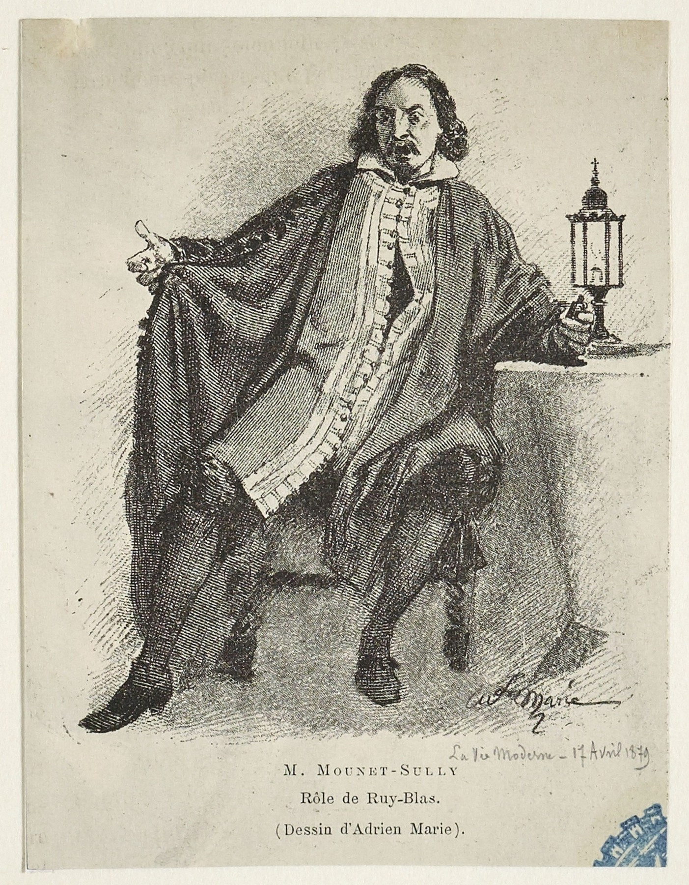
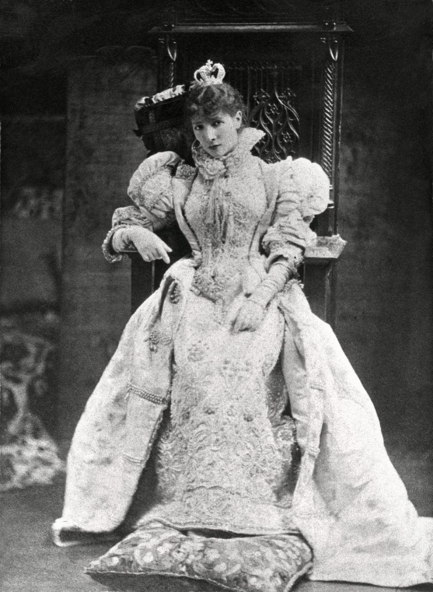
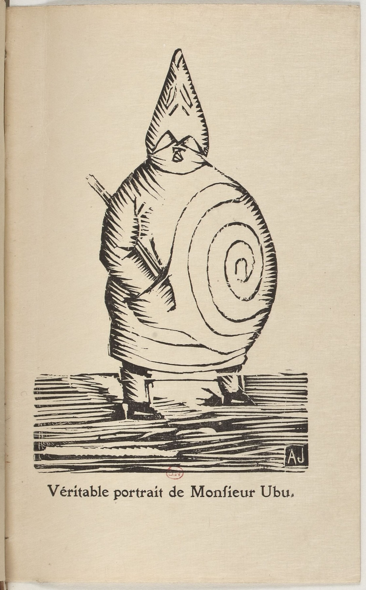

Sans JavaScript, tous les onglets restent visibles à la suite.
Présentation de la séquence
Un valet devient duc et ministre, défend mieux son pays que les grands, gagne l'amour de la reine. Mais son maître lui rappelle : « vous êtes mon valet ». Dans Ruy Blas, Hugo met au centre de la scène un homme qui vaut plus que la place qu'on lui donne.
Problématique
Peut-on changer de place sans changer de condition ?
L'œuvre et le niveau
- Victor Hugo, Ruy Blas, 1838. Drame romantique en cinq actes, en alexandrins. Créé au théâtre de la Renaissance le 8 novembre 1838, avec Frédérick Lemaître dans le rôle-titre. L'action se passe à Madrid, vers 1695, sous Charles II.
- Objet d'étude : le théâtre du XVIIe siècle au XXIe siècle. Deux pièces de genre et de siècle différents : L'Avare (1668, comédie) puis Ruy Blas (1838, drame romantique).
- Lecture cursive : Jarry, Ubu roi (1896), autre période littéraire, la farce d'avant-garde, avec carnet guidé.
- Programme : français, seconde générale et technologique, arrêté du 17 janvier 2019, BO spécial n° 1 du 22 janvier 2019, modifié en 2020. texte du programme modifié (Eduscol, PDF).
- Durée : dix séances de 55 minutes, minutées sur 52 pour garder trois minutes de déplacement et d'installation. Lecture intégrale à la maison, selon le calendrier. Les temps de lecture sont répartis sur plusieurs jours.
- Accès : lexiques, résumé en dix phrases, vers numérotés, version dys et gros caractères. Pour les élèves allophones : B2 conseillé ; l'accès guidé est possible dès B1. On adapte l'accès, jamais l'ambition.
Le programme, mot pour mot, et nos choix
1. Lire deux pièces
« deux pièces de genre et de siècle différents »
Première pièce de l'année : Molière, L'Avare (1668), comédie du XVIIe siècle, étudiée dans une autre séquence. Deuxième pièce : Hugo, Ruy Blas (1838), drame romantique du XIXe siècle. La comparaison en séance 9 porte sur le changement d'habit, sans refaire les scènes de L'Avare.
2. Lire une pièce en cursive
« la lecture cursive d'au moins une pièce d'une autre période »
Alfred Jarry, Ubu roi (1896), à la fin du XIXe siècle, autre période littéraire que le romantisme de 1838 : l'avant-garde et la farce pour marionnettes. Un carnet guidé accompagne la lecture intégrale ; retour en séance 9.
3. Lire et jouer
« L'étude du théâtre suppose que soient prises en compte les questions de représentation et de mise en scène. »
Alexandrins à voix haute (3), tirade à cinq voix (4), deux captations comparées (7), scènes jouées avec note d'intention (10).
4. Voir
« Il tire profit de l'offre de captations de mises en scène mise à la disposition des classes. »
La tirade de l'acte III, scène 2 : Comédie-Française, « Théâtre à la table », saison 2023-2024 ; Compagnie Antre de Rêves, 2018. Liens, début et fin ci-dessous et en séance 7.
5. Pratiquer les exercices du théâtre
« la lecture expressive, en s'attachant plus particulièrement à l'expression des intentions, au rythme et à l'enchaînement des répliques ; l'explication de texte (la méthode est laissée au choix du professeur) ; le commentaire de texte ; la dissertation sur une des œuvres étudiées ; l'écrit d'appropriation (rédaction d'une note d'intention de mise en scène ; compte rendu d'une sortie au théâtre ; écriture d'invention ou d'intervention ; comparaison entre deux mises en scène d'une scène ou d'un acte, résumé d'un acte ; transposition narrative d'un acte, ou du dénouement ; comparaison entre deux pièces dont l'une est à la source de l'autre sur des sujets comme la construction de l'action, le système des personnages, la tonalité dominante, l'intention de sens, etc.) ; le jeu théâtral ou l'improvisation, pour améliorer les capacités d'expression et l'assurance des élèves en public. »
Lecture expressive (2, 3, 4), explication guidée (6), commentaire guidé (10), tirade d'invention et note d'intention (4 à 10), comparaison de deux mises en scène (7), jeu théâtral (10). Le rapprochement avec L'Avare (9) n'est pas l'exercice « comparaison entre deux pièces dont l'une est à la source de l'autre » : Molière n'est pas la source de Hugo ; il prépare la réflexion sur les deux genres. La dissertation est annoncée et préparée par la réponse à la problématique, non évaluée ici comme exercice complet.
Citations du programme de français de seconde générale et technologique, objet d'étude « Le théâtre du XVIIe siècle au XXIe siècle ». La liste des exercices est reproduite en entier, sans réécriture, d'après le programme modifié publié sur Eduscol.
Objectifs
- Lire une œuvre théâtrale entière et situer chaque scène dans l'action.
- Distinguer réplique, tirade, monologue et aparté ; expliquer la double énonciation et le schéma actantiel en mots simples.
- Lire l'alexandrin : douze syllabes, césure, e muet, vers partagé, enjambement.
- Comprendre le mélange du grotesque et du sublime, et la liberté des règles du drame romantique.
- Comparer deux mises en scène et justifier un choix de voix, de corps ou d'espace.
- Écrire une tirade, la relire avec une grille, puis la dire avec une note d'intention.
- Étudier la langue à chaque séance, avec Projet Voltaire si l'établissement est abonné.
La spirale de Gorse
Six tours en séances 1 à 5 et 8. La question est écrite au tableau, discutée trois minutes et notée dans le cahier ; chaque réponse provisoire fait avancer vers la problématique.
- 1Qu'est-ce qui fait la place d'une personne dans la société ?Le nom, le titre, l'habit, la naissance ; mais aussi le mérite, qui ne se voit pas toujours.
- 2Qui tire les ficelles ?Salluste, le maître, dispose de Ruy Blas comme d'un outil ; le public le sait grâce à l'aparté.
- 3Peut-on aimer au-dessus de sa condition ?Le laquais aime la reine ; son habit le déshonore à ses propres yeux, mais son cœur n'a pas de rang.
- 4Le mérite peut-il remplacer la naissance ?Le laquais devenu ministre parle mieux que les grands et défend le peuple ; la reine reconnaît sa grandeur.
- 5Pourquoi mêler le rire et les larmes ?Le drame romantique mêle le grotesque et le sublime, comme la vie : César tombe par la cheminée, Ruy Blas parle comme un roi.
- 6Qui gagne à la fin ?Salluste meurt ; Ruy Blas aussi, mais la reine l'aime et lui pardonne sous son vrai nom. Il perd la vie, il gagne d'être reconnu.
À la pointe. Ruy Blas change de place : le laquais devient duc et ministre. Mais son maître le ramène à sa condition, et il en meurt. Hugo oppose ce que les hommes valent à la place que la société leur donne. Le héros ne devient pas roi ; il meurt reconnu pour ce qu'il est.
Les dix séances
| Séance | Titre | Supports (vers de l'édition Fièvre) | Étude de la langue |
|---|---|---|---|
| 1 | Entrer dans la pièce : un valet, une reine, un piège | livrée de Lemaître, personnages, trois vers | Les types de phrases et la ponctuation expressive |
| 2 | L'exposition : la vengeance de Don Salluste | I, 1, v. 1 à 62 ; I, 2, v. 204 à 232 | L'impératif présent |
| 3 | Le valet amoureux : lire l'alexandrin à voix haute | I, 3, v. 344 à 366 et 421 à 430 | Tu ou vous : les pronoms de l'adresse |
| 4 | « Bon appétit ! messieurs ! » : la tirade | III, 2, v. 1058 à 1165 | Ponctuer une énumération : virgule, point-virgule, deux-points |
| 5 | Le drame romantique : le grotesque et le sublime | III, 3, v. 1183 à 1233 ; IV, 2, v. 1570 à 1593 ; préfaces | Les registres de langue : soutenu, courant, familier |
| 6 | Évaluation de mi-parcours : explication guidée de la reine seule | II, 2, v. 753 à 806 | partie langue /10 |
| 7 | Deux mises en scène de la tirade | III, 2, deux captations ; portraits de 1879 | Exprimer un avis : je pense que, je ne pense pas que |
| 8 | Le dénouement : « Je m'appelle Ruy Blas » | V, 3, v. 2158 à 2215 ; V, 4, v. 2215 à 2254 | Le subjonctif dans une proposition indépendante |
| 9 | Deux valets, deux siècles : Ruy Blas, L'Avare et Ubu roi | L'Avare, III, 1 ; Ubu roi, III, 7 | Participe présent et gérondif, dans les didascalies |
| 10 | Évaluation finale : scènes jouées et commentaire guidé | III, 5, v. 1410 à 1437 ; tirades des élèves | partie langue /10 |
Calendrier de lecture et d'écriture
| Pour la séance | Ruy Blas à avoir lu | Ubu roi et production finale |
|---|---|---|
| 2 | acte I | |
| 3 | acte II | |
| 4 | acte III | Ubu, actes I et II ; carnet, questions 1 et 2 |
| 5 | acte IV | premier jet de tirade (idées, puis dix lignes) |
| 6 (mi-parcours) | révisions : actes I à IV | |
| 7 | acte V | brouillon complet de la tirade |
| 8 | acte V, relu | choisir les deux tirades du groupe |
| 9 | œuvre entière | Ubu entier et carnet ; tirade au propre, grille et brouillon à rendre |
| 10 (finale) | œuvre entière | scène jouée et note d'intention |
Après chaque acte : une phrase de résumé, deux vers copiés avec leur numéro et deux lignes de réaction. Le résumé en dix phrases aide à entrer dans la pièce, mais ne remplace pas sa lecture. L'édition de la classe peut numéroter autrement : on donne l'acte, la scène et les premiers mots du passage.
Les deux mises en scène de la tirade
| Mise en scène 1 | Mise en scène 2 | |
|---|---|---|
| Qui, quand, où | Comédie-Française, « Théâtre à la table », direction artistique Nicolas Lormeau, réalisation Clément Gaubert, saison 2023-2024 : une lecture jouée autour d'une table, filmée et montée en direct. Ruy Blas : Jean Chevalier. | Compagnie Antre de Rêves, mise en scène Roch-Antoine Albaladéjo, spectacle filmé au théâtre municipal de Sens, publié en 2018 : une représentation en costumes, sur scène. |
| Lien | chaîne officielle de la Comédie-Française | chaîne officielle de la compagnie |
| Début et fin de la tirade | 1:10:23 (« Bon appétit ! messieurs ! ») à 1:16:36 (« dans leur marmite infâme ! »), environ 6 minutes, sans costumes ni décor : tout passe par la voix et les regards. | 0:56:24 (« Bon appétit ! messieurs ! ») à 1:00:12 (avant la démission de Camporeal), environ 4 minutes : plusieurs passages sont coupés, par exemple l'acteur passe du vers 1120 au vers 1131. Les coupes sont à repérer texte en main. |
Les captations sont visionnées en séance 7, texte en main. Pas de compte nécessaire pour suivre les liens publics ; si la connexion échoue, deux lectures contrastées en classe remplacent le visionnage. Une lecture à la table est ici un parti pris scénique : le texte passe par les voix, les regards et le montage, sans costumes.
Les évaluations annoncées
| Quand | Quoi | Note |
|---|---|---|
| 1 | diagnostic écrit | non noté |
| 1 à 5, 7 à 9 | contrôles de langue | /5 chacun, moyenne |
| 6 | explication guidée de II, 2, puis correction en 7 | /20 et langue /10 |
| 9 | tirade écrite, une demi-page | /20, dont 4 points pour la grille remplie par l'élève |
| 10 | scène jouée avec note d'intention | /10 |
| 10 | commentaire guidé de III, 5 | /20 et langue /10 |
| après les copies | Savoir prendre une correction | /5 |
Ce qui ne se répète pas sur le site
La page Le théâtre : lire, dire, jouer cite déjà « Ver de terre amoureux d'une étoile » en exemple d'antithèse. Ici, la lettre est replacée dans tout le monologue de la reine (II, 2), traversé par des oppositions ; jamais un vers isolé. Le Jeu amoureux au théâtre cite la préface de Cromwell en synthèse ; ici, deux phrases seulement servent de repères. Aucun texte de Hugo sur la justice ni discours sur la misère n'est repris.
Avec L'Avare, le lien est voulu : seconde pièce de genre et de siècle différents, comparaison du changement d'habit en séance 9. La progression de langue porte sur d'autres notions.
Contrat de classe
- On lit le théâtre pour le dire et le voir. On ne se moque jamais d'une lecture ; on la reprend.
- On analyse la satire de Hugo et de Jarry dans leur contexte, sans parallèle partisan avec l'actualité.
- Meurtre et poison sont lus, jamais mimés. Aucun récit personnel n'est demandé.
- Le droit à l'essai vaut pour l'oral comme pour l'écrit : une interprétation change avec les preuves du texte.
Téléchargements
Fiche professeur
PDF · Word · LibreOffice
Fiches élèves, une activité par page
PDF · Word · LibreOffice
Fiches élèves en gros caractères
PDF · Word · LibreOffice
Version dys
PDF · Word · LibreOffice
Évaluations : sujets élèves
PDF · Word · LibreOffice
Corrigés et grilles (professeur)
PDF · Word · LibreOffice
Savoir prendre une correction et autocorrection
PDF · Word · LibreOffice
Les textes et documents de la séquence
PDF · Word · LibreOffice
Crédits et sources
Image d'en-tête : « Salón del Trono. Palacio Real de Madrid.jpg », Jose Luis Filpo Cabana, 2013, CC BY 3.0, via Wikimedia Commons (recadrage). Documents A et B : Maison de Victor Hugo, Paris Musées, CC0. Document C : Sarah Bernhardt en reine, 1879, domaine public. Document D : Alfred Jarry, « Véritable portrait de Monsieur Ubu », 1896, BnF (Gallica), domaine public. Crédits détaillés sous chaque image.
Victor Hugo, Ruy Blas, 1838 (domaine public). Numérotation des vers : édition établie par Paul Fièvre d'après l'édition de 1838 (Leipzig, Brockhaus et Avenarius), theatre-classique.fr ; texte vérifié vers par vers sur l'édition de 1839 (Bruxelles, Société belge de librairie), Wikisource. Les tirets de pause de ces éditions ne sont pas reproduits ; la numérotation peut différer d'un ou deux vers dans d'autres éditions. La transcription est corrigée sur Wikisource (coquilles et apostrophes) ; les tirets de pause ne sont pas reproduits. Les textes de Hugo, Molière et Jarry sont dans le domaine public ; l'édition numérique de Paul Fièvre est signalée sous licence CC BY-NC-SA. Les adaptations de Jarry sont annoncées au-dessus du texte.
© 2026 Madame Carole Paoli Pompougnac · CC BY-NC-SA 4.0
Fiches élèves en PDF Word LibreOffice
Séance 1. Entrer dans la pièce : un valet, une reine, un piège
Durée : 52 minutes. Compétences : LectureOralÉcritureLangue
Objectifs : formuler des hypothèses sur la pièce à partir de la liste des personnages, de trois vers et d'une gravure de 1838 ; faire un diagnostic de l'écrit, non noté ; entrer dans la spirale de Gorse ; reconnaître les types de phrases et la ponctuation expressive.
Matériel : fiche élève 1 ; document A (Frédérick Lemaître en livrée, 1838) projeté ; la liste des personnages ; « La pièce en dix phrases » (onglet Textes), distribuée en fin de séance ; le calendrier de lecture (Accueil).
Déroulé minute par minute
| Minutes | Ce qui se passe | Ce que dit ou fait le professeur |
|---|---|---|
| 0 à 4 | Rituel d'entrée. Accueil à la porte, installation, date et titre dans le cahier. Au tableau, le vers du jour : « Ruy Blas, fermez la porte, ouvrez cette fenêtre. » (vers 1) | Je lis le vers d'un ton sec : « Qui parle ? À qui ? Qu'est-ce que ce vers nous apprend sur eux ? » |
| 4 à 13 | Activité 1. Un costume et une liste : le document A et la liste des personnages. Hypothèses en binôme. | « Cet homme est habillé par quelqu'un d'autre. Que dit son habit de sa place dans la société ? » |
| 13 à 16 | Spirale de Gorse, tour 1 : « Qu'est-ce qui fait la place d'une personne dans la société ? » Réponses au tableau, réponse commune notée. | « Nous partons d'une question large ; elle va se resserrer jusqu'à celle de la séquence. » |
| 16 à 22 | Activité 2. Trois vers mystère (vers 1, 1430, 2243) : qui les dit ? dans quel ordre ? Lecture à voix haute. | « Le même homme dit les trois. Faites des paris. » |
| 22 à 34 | Activité 3. Diagnostic écrit (10 lignes), non noté : un domestique doit se faire passer pour un grand seigneur. | « Je ne note pas aujourd'hui : je regarde votre écriture pour construire la suite. » |
| 34 à 45 | Étude de la langue. Les types de phrases et la ponctuation expressive : leçon et exercices corrigés, puis contrôle noté /5 (5 minutes), corrigé et grille d'autocorrection. | « Ruy Blas, c'est une pièce pleine de points d'exclamation. Apprenons à les lire et à les écrire. » |
| 45 à 47 | Projet Voltaire (2 minutes) : la majuscule après un point d'exclamation ou d'interrogation qui termine la phrase. Sans connexion : l'exercice papier de la fiche. | « Une règle, trois minutes, puis vous corrigez votre propre phrase du jour. » |
| 47 à 49 | Trace écrite ; distribution de « La pièce en dix phrases » et du calendrier de lecture. | Lecture de la trace par un élève. |
| 49 à 52 | Rituel de sortie. Billet de sortie : « D'après moi, le valet de cette pièce va ..., parce que ... » ; devoir noté dans l'agenda. | Je ramasse les billets à la porte ; je vérifie que le devoir est noté. J'ouvrirai la séance suivante par la lecture d'un billet. |
Activité 1. Un costume, une liste LectureOral
Pour l'enseignant. Projeter le document A sans la légende. Puis lire la liste des personnages en montrant les titres : marquis, comte, duchesse, et, en premier, un nom sans titre. Ne pas révéler l'intrigue.
Pour les élèves.

Liste des personnages (extrait) : Ruy Blas ; Don Salluste de Bazan ; Don César de Bazan ; Don Guritan ; le comte de Camporeal ; le marquis de Santa-Cruz ; la reine, Doña Maria de Neubourg ; la duchesse d'Albuquerque ; Casilda ; un laquais ; des alcades, des alguazils, des seigneurs, des duègnes.
- Décris le costume du document A : couleurs, formes, ce qui manque (épée ? chapeau ?).
- Ce costume est une « livrée ». À ton avis, quel métier fait ce personnage ?
- Dans la liste, qui a un titre de noblesse ? Qui n'en a pas ?
- Pourquoi, d'après toi, la pièce porte-t-elle le nom du seul personnage sans titre ?
Corrigé (prof)
1. Veste longue rouge à rayures jaunes, culotte rouge, bas blancs, chaussures à boucles ; pas d'épée ni de chapeau : un homme qui sert, pas un homme qui commande. 2. Un domestique, un laquais. 3. Don Salluste, Don César, le comte, le marquis, la duchesse, la reine ont un titre ; Ruy Blas n'en a pas (il est « Ruy Blas » tout court). 4. Hypothèses acceptées : c'est le héros, la pièce raconte son histoire ; le titre met au centre un homme du peuple, ce qui est nouveau en 1838.
Activité 2. Trois vers mystère LectureOral
Pour l'enseignant. Écrire les trois vers au tableau dans le désordre. Les faire lire par trois élèves ; la classe propose un ordre et une histoire. On garde les paris jusqu'à la séance 8.
Pour les élèves.
- « Mais, ne l'oubliez pas, vous êtes mon valet. » (vers 1430)
- « Je m'appelle Ruy Blas. » (vers 2243)
- « Ruy Blas, fermez la porte, ouvrez cette fenêtre. » (vers 1)
Remets ces vers dans l'ordre de la pièce et invente en deux phrases l'histoire qui va de l'un à l'autre.
Corrigé (prof)
Ordre : vers 1 (le maître donne un ordre au laquais), vers 1430 (le maître rappelle au laquais devenu ministre qu'il reste un valet), vers 2243 (à la fin, le héros dit son vrai nom). Toute histoire cohérente est acceptée ; on retient qu'un valet change de place, mais que son maître le ramène à sa condition.
Activité 3. Diagnostic écrit (non noté) Écriture
Pour les élèves.
Sujet. Un domestique reçoit l'ordre de son maître : pendant une journée, il doit se faire passer pour un grand seigneur. Raconte, en dix lignes, sa première heure au palais. Fais parler ton personnage au moins une fois, avec un point d'exclamation.
Corrigé (prof)
Non noté. Relever pour le suivi : organisation du récit, ponctuation du dialogue, accords sujet-verbe, emploi des temps, vocabulaire du statut social (maître, valet, seigneur, rang). Le diagnostic est rendu en séance 10.
Étude de la langue · Les types de phrases et la ponctuation expressive Langue
Pour les élèves.
La leçon
Il y a quatre types de phrases :
- déclarative, qui donne une information, finit par un point : « Ils dorment encore tous ici. »
- interrogative, qui pose une question, finit par un point d'interrogation : « Comment ? Je ne sais pas » (vers 43).
- injonctive, qui donne un ordre, souvent à l'impératif : « fermez la porte » (vers 1).
- exclamative, qui exprime une émotion forte, finit par un point d'exclamation : « Je me vengerai, va ! » (vers 43).
Au théâtre, la ponctuation est une indication de jeu : le point d'exclamation demande de l'énergie ; les points de suspension, une hésitation ou une phrase coupée. Après un point d'exclamation ou d'interrogation qui termine la phrase, on met une majuscule.
Je m'entraîne
Donne le type de chaque phrase.
- « On m'exile ! »
- « D'où vient le coup, Monseigneur ? »
- « Faites-lui, sans parler, signe qu'il peut monter. »
- « Je pars. »
Contrôle de langue noté (5 minutes, /5)
- Donne le type de la phrase : « Ah ! tout perdre en un jour ! »
- Donne le type de la phrase : « Peut-il me servir ? »
- Transforme en phrase injonctive : « Vous laissez les clefs. »
- Ponctue et mets les majuscules : « tu pars avec moi va ruy blas »
- Écris une phrase exclamative de Ruy Blas qui découvre le palais.
Grille d'autocorrection
| Je sais... | Oui | Pas encore |
|---|---|---|
| reconnaître les quatre types de phrases | □ | □ |
| lire le point d'exclamation comme une indication de jeu | □ | □ |
| mettre une majuscule après « ! » ou « ? » en fin de phrase | □ | □ |
Si je coche « pas encore », je fabrique une carte mémoire de la règle pour la séance suivante.
Corrigé (prof)
Corrigé des exercices.
1. exclamative · 2. interrogative · 3. injonctive · 4. déclarative.
Contrôle : corrigé et barème (/5).
1. exclamative · 2. interrogative · 3. « Laissez les clefs. » · 4. « Tu pars avec moi. Va. Ruy Blas ! » (ou « Tu pars avec moi ; va, Ruy Blas ! ») : 0,5 pour la ponctuation, 0,5 pour les majuscules · 5. phrase juste, finie par « ! ». Un point par item.
Trace écrite
À copier dans le cahier.
Ce que je retiens. Ruy Blas est un drame de Victor Hugo (1838), en cinq actes et en vers. Son héros est un laquais, un domestique qui porte la livrée de son maître, Don Salluste. La place d'une personne dans la société se voit à son nom, à son titre et à son habit. Notre question : peut-on changer de place sans changer de condition ?
Pour la prochaine fois
Travail à la maison.
Lis l'acte I (environ 600 vers, une heure de lecture ; « La pièce en dix phrases » t'aide). Note dans ton carnet trois vers qui t'ont frappé, avec leur numéro. Apprends la leçon de langue.
Tempête émotionnelle
Le diagnostic peut inquiéter : il n'est pas noté. Le mot « laquais » peut faire rire ou blesser un élève dont un parent travaille comme employé de maison : on parle d'une condition sociale de 1695, jamais d'un métier d'aujourd'hui à mépriser.
Sorties de secours (plan B)
- Plan B, huit minutes : document A (3 min), les trois vers mystère (3 min), billet (2 min).
- Classe agitée : le diagnostic passe avant l'activité 1, en silence, minuteur affiché.
- Plus de temps : chaque binôme dessine la livrée d'un valet et l'habit d'un duc, et écrit sous chacun trois mots.
Séance 1 · Version dys
Document A et liste des personnages, lus par le professeur.
- Le personnage du document A porte : un habit de domestique / un habit de roi.
- Ruy Blas a un titre de noblesse : oui / non.
- Le titre de la pièce est le nom : d'un valet / d'un roi.
Complète : « Je pense que le valet va ... »
Langue. Mets le bon signe : « On m'exile ... » ; « D'où vient le coup ... »
© 2026 Madame Carole Paoli Pompougnac · CC BY-NC-SA 4.0
Fiches élèves en PDF Word LibreOffice
Séance 2. L'exposition : la vengeance de Don Salluste
Durée : 52 minutes. Compétences : LectureOralLangue
Objectifs : comprendre une scène d'exposition (qui, où, quand, quel conflit) ; repérer l'aparté et la double énonciation, déjà vus avec L'Avare ; construire le schéma actantiel du projet de Salluste ; employer l'impératif présent.
Matériel : textes 1 et 2 (onglet Textes) ; fiche élève 2 ; le schéma actantiel vierge.
Déroulé minute par minute
| Minutes | Ce qui se passe | Ce que dit ou fait le professeur |
|---|---|---|
| 0 à 4 | Rituel d'entrée. Accueil à la porte, installation, date et titre dans le cahier. Au tableau, le vers du jour : « Oh ! Je me vengerai, Gudiel ! Tu m'entends. » (vers 31) | « Qui veut se venger, et de qui ? Qu'est-ce qui le prouve dans le vers ? » |
| 4 à 16 | Activité 1. Lecture expressive du texte 1 par le professeur, puis questions : qui, où, quand, pourquoi ? | « Une exposition répond à cinq questions. Au bout de 46 vers, nous savons presque tout. » |
| 16 à 23 | Activité 2. L'aparté du vers 62 et la double énonciation : qui entend quoi ? | « Vous vous rappelez Harpagon qui parle au public. Ici, Salluste nous fait complices. » |
| 23 à 33 | Activité 3. Le texte 2 et le schéma actantiel du plan de Salluste. | « Un schéma pour voir qui aide, qui empêche, et pour qui on agit. » |
| 33 à 36 | Spirale de Gorse, tour 2 : « Qui tire les ficelles ? » | « Ruy Blas obéit sans savoir. Qui décide de sa place ? » |
| 36 à 46 | Étude de la langue. L'impératif présent : leçon et exercices corrigés, puis contrôle noté /5 (5 minutes), corrigé et grille d'autocorrection. | « Salluste ne parle qu'à l'impératif. C'est la langue du maître. » |
| 46 à 48 | Projet Voltaire (2 minutes) : « va », « vas-y » : le -s de l'impératif. Sans connexion : l'exercice papier de la fiche. | « Une règle, trois minutes, puis vous corrigez votre propre phrase du jour. » |
| 48 à 49 | Trace écrite. | Lecture de la trace. |
| 49 à 52 | Rituel de sortie. Billet de sortie : « Salluste veut se venger de ... ; il compte utiliser ... » ; devoir noté dans l'agenda. | Je ramasse les billets à la porte ; je vérifie que le devoir est noté. J'ouvrirai la séance suivante par la lecture d'un billet. |
Activité 1. Une scène d'exposition (texte 1) LectureOral
Pour l'enseignant. Lire le texte 1 avec énergie, en marquant les exclamations. Puis faire relire les vers 13 à 22 par un élève, qui accélère sur l'énumération.
Pour les élèves.
Texte 1. « Je me vengerai » : acte I, scène 1, vers 1 à 62
Madrid, vers 1695, au palais du roi, au lever du jour. Don Salluste de Bazan, l'un des hommes les plus puissants d'Espagne, vient d'être chassé de la cour par la reine. Il parle à Gudiel, son homme de confiance, puis donne des ordres à Ruy Blas, son laquais.
- Don Salluste
- 1Ruy Blas, fermez la porte, ouvrez cette fenêtre.
- (Ruy Blas obéit, puis, sur un signe de Don Salluste. Il sort par la porte fond. Don Salluste va à la fenêtre.)
- Ils dorment encore tous ici, le jour va naître.
- (Il se tourne brusquement vers Gudiel.)
- Ah ! C'est un coup de foudre !... Oui, mon règne est passé,
- Gudiel ! renvoyé, disgracié, chassé !
- 5Ah ! tout perdre en un jour ! L'aventure est secrète
- Encor, n'en parle pas. Oui, pour une amourette,
- Chose, à mon âge, sotte et folle, j'en conviens !
- Avec une suivante, une fille de rien !
- Séduite, beau malheur ! Parce que la donzelle
- 10Est à la Reine, et vient de Neubourg avec elle,
- Que cette créature a pleuré contre moi,
- Et traîné son enfant dans les chambres du roi ;
- Ordre de l'épouser. Je refuse. On m'exile !
- On m'exile ! Et vingt ans d'un labeur difficile,
- 15Vingt ans d'ambition, de travaux nuit et jour ;
- Le président haï des alcades de cour,
- Dont nul ne prononçait le nom sans épouvante ;
- Le chef de la maison de Bazan, qui s'en vante ;
- Mon crédit, mon pouvoir, tout ce que je rêvais,
- 20Tout ce que je faisais et tout ce que j'avais,
- Charge, emplois, honneurs, tout en un instant s'écroule
- Au milieu des éclats de rire de la foule !
- Gudiel
- Nul ne le sait encor, Monseigneur.
- Don Salluste
- Mais demain !
- Demain, on le saura ! Nous serons en chemin !
- 25Je ne veux pas tomber, non, je veux disparaître !
- (Il déboutonne violemment son pourpoint.)
- Tu m'agrafes toujours comme on agrafe un prêtre,
- Tu serres mon pourpoint, et j'étouffe, mon cher !
- (Il s'assied.)
- Oh ! Mais je vais construire, et sans en avoir l'air,
- Une sape profonde, obscure et souterraine !
- 30Chassé !
- (Il se lève.)
- Gudiel
- D'où vient le coup, Monseigneur ?
- Don Salluste
- De la Reine.
- Oh ! Je me vengerai, Gudiel ! Tu m'entends.
- Toi dont je suis l'élève, et qui depuis vingt ans
- M'as aidé, m'as servi dans les choses passées,
- Tu sais bien jusqu'où vont dans l'ombre mes pensées,
- 35Comme un bon architecte au coup d'œil exercé
- Connaît la profondeur du puits qu'il a creusé.
- Je pars. Je vais aller à Finlas, en Castille,
- Dans mes états, et là, songer ! Pour une fille !
- Toi, règle le départ, car nous sommes pressés.
- 40Moi, je vais dire un mot au drôle que tu sais.
- À tout hasard. Peut-il me servir ? Je l'ignore.
- Ici jusqu'à ce soir je suis le maître encore.
- Je me vengerai, va ! Comment ? Je ne sais pas ;
- Mais je veux que ce soit effrayant ! De ce pas,
- 45Va faire nos apprêts, et hâte-toi. Silence !
- Tu pars avec moi. Va.
- (Gudiel salue et sort.)
- Don Salluste, appelant
- Ruy Blas !
- Ruy Blas, se présentant à la porte du fond
- Votre excellence ?
- Don Salluste
- Comme je ne dois plus coucher dans le palais,
- Il faut laisser les clefs et clore les volets.
- Ruy Blas, s'inclinant
- Monseigneur, il suffit.
- Don Salluste
- Écoutez, je vous prie.
- 50La reine va passer, là, dans la galerie,
- En allant de la messe à sa chambre d'honneur,
- Dans deux heures. Ruy Blas, soyez là.
- Ruy Blas
- Monseigneur,
- J'y serai.
- Don Salluste, à la fenêtre
- Voyez-vous cet homme dans la place
- Qui montre aux gens de garde un papier, et qui passe ?
- 55Faites-lui, sans parler, signe qu'il peut monter.
- Par l'escalier étroit.
- (Ruy Blas obéit. Don Salluste continue en lui montrant la petite porte à droite.)
- Avant de nous quitter,
- Dans cette chambre où sont les hommes de police,
- Voyez donc si les trois alguazils de service
- Sont éveillés.
- (Il va à la porte, l'entr'ouvre et revient.)
- Ruy Blas
- Seigneur, ils dorment.
- Don Salluste
- Parlez bas.
- 60J'aurai besoin de vous, ne vous éloignez pas.
- Faites le guet afin que les fâcheux nous laissent.
- (Entre don César de Bazan. Chapeau défoncé. Grande cape déguenillée qui ne laisse voir de sa toilette que des bas mal tirés et des souliers crevés. Épée de spadassin. Au moment où il entre, lui et Ruy Blas se regardent et font en même temps, chacun de leur côté, un geste de surprise.)
- Don Salluste, les observant, à part
- Ils se sont regardés ! Est-ce qu'ils se connaissent ?
- (Ruy Blas sort.)
Acte I, scène 1, vers 1 à 62. Victor Hugo, Ruy Blas, 1838 (domaine public). Numérotation des vers : édition établie par Paul Fièvre d'après l'édition de 1838 (Leipzig, Brockhaus et Avenarius), theatre-classique.fr ; texte vérifié vers par vers sur l'édition de 1839 (Bruxelles, Société belge de librairie), Wikisource. Les tirets de pause de ces éditions ne sont pas reproduits ; la numérotation peut différer d'un ou deux vers dans d'autres éditions.
- disgracié
- qui a perdu la faveur du roi ou de la reine
- une amourette
- une petite aventure amoureuse (ici, Salluste a séduit une suivante de la reine et refuse de l'épouser)
- les alcades
- les juges et les policiers de la ville
- une sape
- une galerie creusée sous un mur pour le faire tomber
- le drôle
- le coquin, le vaurien (mot méprisant)
- Où et quand se passe la scène ? Relève deux indices (vers 2 et 50).
- Pourquoi Salluste est-il chassé ? Par qui ? (vers 6 à 13, 30)
- Vers 14 à 22 : relève l'énumération. Que montre-t-elle de ce que Salluste a perdu ?
- Vers 28 à 36 : relève deux images (comparaisons ou métaphores) de la construction. Que prépare Salluste ?
- Quels ordres donne-t-il à Ruy Blas (vers 47 à 61) ? Que montrent ces ordres de leur relation ?
Corrigé (prof)
- Au palais du roi, à Madrid, au lever du jour : « le jour va naître » (vers 2), la porte, la fenêtre, la galerie où passera la reine.
- Il a séduit une suivante de la reine et refuse de l'épouser ; la reine l'exile (« De la Reine », vers 30).
- « Mon crédit, mon pouvoir, tout ce que je rêvais, / Tout ce que je faisais et tout ce que j'avais, / Charge, emplois, honneurs » : une accumulation de tout ce qui faisait sa puissance, qui « s'écroule » d'un coup.
- « construire [...] une sape profonde, obscure et souterraine » (vers 28-29), « comme un bon architecte » qui connaît « la profondeur du puits qu'il a creusé » (vers 35-36) : une vengeance préparée dans l'ombre, lente et calculée.
- Fermer, ouvrir, être là, faire signe, vérifier, faire le guet : Ruy Blas obéit à tout, il n'a pas la parole ; Salluste dispose de lui comme d'un outil.
Activité 2. L'aparté et la double énonciation LectureOral
Pour l'enseignant. Rappel : la double énonciation a été étudiée en séance 5 de la séquence sur L'Avare. On ne refait pas la leçon : on l'applique. Faire jouer le vers 62 par deux élèves (Salluste, et Ruy Blas et César qui se regardent sans parler).
Pour les élèves.
Rappel. Au théâtre, un personnage parle à un autre personnage, mais toujours aussi au public : c'est la double énonciation. Dans l'aparté, un personnage parle pour lui-même, et seul le public l'entend.
- Relis le vers 62 et sa didascalie. Qui entend cette phrase ? Qui ne l'entend pas ?
- Qu'apprend le public que les personnages ignorent ?
- Joue le vers deux fois : en chuchotant pour le public, puis en le pensant tout haut. Quelle version est la plus inquiétante ?
Corrigé (prof)
- Le public seul ; Ruy Blas et César ne l'entendent pas.
- Que Salluste a vu que Ruy Blas et César se connaissent, et qu'il va s'en servir : le public sait qu'un piège se prépare, les victimes l'ignorent.
- Réponse libre ; le chuchotement au public rend le spectateur complice, ce qui est plus inquiétant.
Activité 3. Le plan de Salluste : le schéma actantiel (texte 2) LectureÉcriture
Pour l'enseignant. Lire le texte 2 à deux voix avec un élève volontaire (César). Présenter le schéma actantiel d'A. J. Greimas en mots simples : un sujet veut un objet ; quelqu'un ou quelque chose l'y pousse (destinateur), pour quelqu'un (destinataire) ; des adjuvants aident, des opposants empêchent.
Pour les élèves.
Texte 2. « D'une femme » : acte I, scène 2, vers 204 à 232
Don Salluste a fait venir son cousin, Don César de Bazan, un grand seigneur ruiné qui vit dans la rue sous le nom de Zafari. Il lui promet de payer ses dettes, à une condition.
- Don Salluste, gravement
- 204Je parle à Don César et non à Zafari.
- (Baissant la voix de plus en plus.)
- 205Écoute. J'ai besoin, pour un résultat sombre,
- De quelqu'un qui travaille à mon côté dans l'ombre
- Et qui m'aide à bâtir un grand événement.
- Je ne suis pas méchant, mais il est tel moment
- Où le plus délicat, quittant toute vergogne,
- 210Doit retrousser sa manche et faire la besogne.
- Tu seras riche, mais il faut m'aider sans bruit
- À dresser, comme font les oiseleurs la nuit,
- Un bon filet caché sous un miroir qui brille,
- Un piége d'alouette ou bien de jeune fille.
- 215Il faut, par quelque plan terrible et merveilleux,
- Tu n'es pas, que je pense, un homme scrupuleux,
- Me venger !
- Don César
- Vous venger ?
- Don Salluste
- Oui.
- Don César
- De qui ?
- Don Salluste
- D'une femme.
- (Il se redresse et regarde fièrement Don Salluste.)
- Don César
- Ne m'en dites pas plus. Halte-là ! sur mon âme,
- Mon cousin, en ceci voilà mon sentiment :
- 220Celui qui, bassement et tortueusement,
- Se venge ; ayant le droit de porter une lame,
- Noble, par une intrigue, homme, sur une femme,
- Et qui, né gentilhomme, agit en alguazil,
- Celui-là, fût-il grand de Castille, fût-il
- 225Suivi de cent clairons sonnant des tintamarres,
- Fût-il tout harnaché d'ordres et de chamarres,
- Et marquis, et vicomte, et fils des anciens preux,
- N'est pour moi qu'un maraud sinistre et ténébreux
- Que je voudrais, pour prix de sa lâcheté vile,
- 230Voir pendre à quatre clous au gibet de la ville !
- Don Salluste
- César !...
- Don César
- N'ajoutez pas un mot, c'est outrageant.
- (Il jette la bourse aux pieds de Don Salluste.)
- Gardez votre secret, et gardez votre argent.
Acte I, scène 2, vers 204 à 232. Victor Hugo, Ruy Blas, 1838 (domaine public). Numérotation des vers : édition établie par Paul Fièvre d'après l'édition de 1838 (Leipzig, Brockhaus et Avenarius), theatre-classique.fr ; texte vérifié vers par vers sur l'édition de 1839 (Bruxelles, Société belge de librairie), Wikisource. Les tirets de pause de ces éditions ne sont pas reproduits ; la numérotation peut différer d'un ou deux vers dans d'autres éditions.
- vergogne
- honte
- un oiseleur
- un chasseur d'oiseaux, qui les prend au filet
- tortueusement
- par des détours, de façon hypocrite
- un alguazil
- un policier
- un maraud
- un coquin, une canaille
- le gibet
- la potence, où l'on pend les condamnés
Le schéma actantiel (A. J. Greimas) : qui veut quoi, pourquoi, pour qui, avec qui, contre qui ?
| Case | Pour le plan de Salluste |
|---|---|
| Sujet (qui agit ?) | |
| Objet (que veut-il ?) | |
| Destinateur (qu'est-ce qui le pousse ?) | |
| Destinataire (pour qui ?) | |
| Adjuvants (qui l'aide ?) | |
| Opposants (qui l'empêche ?) |
- Pourquoi César refuse-t-il (vers 218 à 230) ? Relève deux mots qui jugent Salluste.
- Salluste a besoin d'un homme « qui travaille à mon côté dans l'ombre » (vers 206). Qui va jouer ce rôle à la place de César ?
Corrigé (prof)
Sujet : Salluste. Objet : se venger de la reine. Destinateur : l'humiliation, l'orgueil blessé. Destinataire : lui-même. Adjuvants : Gudiel, puis Ruy Blas, sans le savoir. Opposants : César, qui refuse ; plus tard Ruy Blas lui-même.
- Se venger d'une femme par une intrigue est indigne d'un noble : « bassement et tortueusement » (vers 220), « un maraud sinistre et ténébreux » (vers 228), « sa lâcheté vile » (vers 229).
- Ruy Blas, le laquais : celui qui ne peut pas refuser.
Étude de la langue · L'impératif présent Langue
Pour les élèves.
La leçon
L'impératif sert à donner un ordre, un conseil, une prière. Il n'a que trois personnes et pas de sujet exprimé : « Ferme », « Fermons », « Fermez la porte ».
- Verbes en -er : pas de -s à la 2e personne du singulier : « ferme », « parle », « va ».
- Mais on ajoute -s devant « en » et « y » pour l'oreille : « vas-y », « parles-en ».
- Avec un pronom complément, trait d'union et pronom après le verbe : « Faites-lui signe » (vers 55), « hâte-toi » (vers 45). À la forme négative, le pronom revient devant : « ne lui faites pas signe ».
- Verbes irréguliers : être (sois, soyons, soyez), avoir (aie, ayons, ayez), savoir (sache, sachons, sachez).
Je m'entraîne
Mets à l'impératif, 2e personne du singulier, puis du pluriel.
- fermer la porte
- aller à la fenêtre
- être là
- se hâter
Contrôle de langue noté (5 minutes, /5)
- Conjugue à l'impératif, 2e personne du singulier : « (parler) bas ».
- Conjugue à l'impératif, 2e personne du pluriel : « (être) là dans deux heures ».
- Ajoute ce qui manque : « Va... -y » (aller, avec « y »).
- Mets à la forme négative : « Faites-lui signe. »
- Écris deux ordres de Salluste à Ruy Blas, avec un pronom complément.
Grille d'autocorrection
| Je sais... | Oui | Pas encore |
|---|---|---|
| conjuguer l'impératif des verbes en -er | □ | □ |
| conjuguer être et avoir à l'impératif | □ | □ |
| placer le pronom et le trait d'union | □ | □ |
| écrire « vas-y » | □ | □ |
Si je coche « pas encore », je fabrique une carte mémoire de la règle pour la séance suivante.
Corrigé (prof)
Corrigé des exercices.
1. ferme / fermez · 2. va / allez · 3. sois là / soyez là · 4. hâte-toi / hâtez-vous.
Contrôle : corrigé et barème (/5).
1. parle · 2. soyez · 3. vas-y · 4. Ne lui faites pas signe. · 5. deux impératifs justes avec trait d'union, par exemple « Ouvre-la. Suis-moi. » (0,5 par ordre). Un point par item.
Trace écrite
À copier dans le cahier.
Ce que je retiens. La scène d'exposition présente le lieu (le palais de Madrid), le moment (vers 1695, à l'aube), les personnages et le conflit : Salluste, chassé par la reine, veut se venger. César refuse de l'aider ; Ruy Blas, qui obéit à tout, sera l'instrument du piège. Par l'aparté (vers 62), le public en sait plus que les victimes : c'est la double énonciation.
Pour la prochaine fois
Travail à la maison.
Finis l'acte I et lis l'acte II. Note dans ton carnet un vers où l'on voit que la reine est malheureuse. Apprends la leçon de langue.
Tempête émotionnelle
La « fille de rien » et l'« enfant » (vers 8 et 12) : on explique qu'une jeune femme séduite et abandonnée est la victime, pas Salluste ; aucun commentaire sur la vie privée des élèves.
Sorties de secours (plan B)
- Plan B, huit minutes : vers 1 à 13 lus (2 min), l'aparté du vers 62 (3 min), billet (3 min).
- Pas le temps pour le schéma : il devient le devoir, avec le corrigé de la case « sujet » donné.
- Plus de temps : deux élèves improvisent la scène entre Salluste et Gudiel en prose, puis la classe compare avec les vers.
Séance 2 · Version dys
Texte court : vers 1 à 4, 13, 30 et 31 du texte 1, lus par le professeur.
- Salluste est : chassé / félicité par la reine.
- Il veut : partir en paix / se venger.
- Au vers 62, Salluste parle : à César / pour lui-même (aparté).
Complète : « Salluste veut se venger de ... ; pour cela, il va utiliser ... »
Langue. Mets à l'impératif (vous) : « fermer la porte » ; « être là ».
© 2026 Madame Carole Paoli Pompougnac · CC BY-NC-SA 4.0
Fiches élèves en PDF Word LibreOffice
Séance 3. Le valet amoureux : lire l'alexandrin à voix haute
Durée : 52 minutes. Compétences : LectureOralLangue
Objectifs : lire l'alexandrin à voix haute (douze syllabes, e muet, césure, enjambement, vers partagé) ; comprendre l'opposition entre l'habit et le cœur de Ruy Blas ; distinguer tirade, réplique et monologue ; employer tu et vous selon la relation.
Matériel : texte 3 (onglet Textes) ; fiche élève 3 ; deux surligneurs.
Déroulé minute par minute
| Minutes | Ce qui se passe | Ce que dit ou fait le professeur |
|---|---|---|
| 0 à 4 | Rituel d'entrée. Accueil à la porte, installation, date et titre dans le cahier. Au tableau, le vers du jour : « Le dehors te fait peur ? si tu voyais dedans ! » (vers 356) | « Le dehors et le dedans de qui ? Lisez-le en ralentissant sur “dedans”. » |
| 4 à 14 | Activité 1. L'atelier de l'alexandrin : compter, couper, lier, sur les vers 344 à 352. | « Douze syllabes, comme douze pas. On ne lit pas en chantant : on respire à la césure. » |
| 14 à 27 | Activité 2. L'habit et le cœur : lecture et analyse du texte 3. | « Regardez combien de fois revient l'habit. Et ce qu'il y a dessous. » |
| 27 à 33 | Activité 3. Lecture expressive en binôme des vers 421 à 430, deux intentions. | « Une fois en colère, une fois désespéré. Le public choisit. » |
| 33 à 36 | Spirale de Gorse, tour 3 : « Peut-on aimer au-dessus de sa condition ? » | « Ruy Blas aime la reine sous la livrée. Son cœur a-t-il un rang ? » |
| 36 à 46 | Étude de la langue. Tu ou vous : les pronoms de l'adresse : leçon et exercices corrigés, puis contrôle noté /5 (5 minutes), corrigé et grille d'autocorrection. | « César et Ruy Blas se tutoient, Salluste vouvoie son valet. Les pronoms disent la relation. » |
| 46 à 48 | Projet Voltaire (2 minutes) : l'accord de l'adjectif avec « vous » de politesse : « vous êtes seul ». Sans connexion : l'exercice papier de la fiche. | « Une règle, trois minutes, puis vous corrigez votre propre phrase du jour. » |
| 48 à 49 | Trace écrite. | Lecture de la trace. |
| 49 à 52 | Rituel de sortie. Billet de sortie : « Sous la livrée, Ruy Blas est ..., parce que ... » ; devoir noté dans l'agenda. | Je ramasse les billets à la porte ; je vérifie que le devoir est noté. J'ouvrirai la séance suivante par la lecture d'un billet. |
Activité 1. L'atelier de l'alexandrin LectureOral
Pour l'enseignant. Taper les syllabes dans les mains sur le vers 344, puis 346. Montrer le e muet (prononcé devant consonne, élidé devant voyelle et en fin de vers), la césure après la 6e syllabe, l'enjambement. Pour le vers partagé 349, deux élèves se passent le vers sans pause.
Pour les élèves.
Les mots pour le dire. L'alexandrin est un vers de douze syllabes. La césure le coupe souvent en deux moitiés de six syllabes (les hémistiches). Le e muet se prononce devant une consonne (« Car l'ha-bit o-di-eux », non : « Car l'ha-bi-t o-dieux »), mais pas devant une voyelle ni en fin de vers. Il y a enjambement quand la phrase continue sur le vers suivant. Un vers partagé est dit par deux personnages.
- Compte les syllabes du vers 344 : « Hier, il m'a dit : Il faut être au palais demain. » Attention : « Hier » compte ici pour une syllabe, et le e de « être » s'élide devant « au ».
- Place la césure dans le vers 350 : « Vivre sous cet habit qui souille et déshonore ».
- Vers 346 à 348 : où la phrase s'arrête-t-elle ? Comment s'appelle ce phénomène ?
- Vers 349 : qui dit le début, qui dit la fin ? Combien de syllabes en tout ?
Corrigé (prof)
- Hier / il / m'a / dit / Il / faut / ê / tre au / pa / lais / de / main : douze syllabes (le e de « être » s'élide devant « au »).
- « Vivre sous cet habit // qui souille et déshonore » : 6 + 6 (« Vi-vre » : le e se prononce devant « sous »).
- Au vers 348 : la phrase court sur trois vers ; ce sont des enjambements, qui donnent l'élan du récit.
- César dit « Espère ! » (2 syllabes), Ruy Blas « Espérer ! Mais tu ne sais rien encore. » (10 syllabes) : douze syllabes, un seul vers partagé entre deux voix ; l'espoir de l'un est aussitôt repris et contredit par l'autre.
Activité 2. L'habit et le cœur (texte 3) Lecture
Pour l'enseignant. Surligner d'une couleur le champ lexical de l'habit, d'une autre celui de l'intérieur (cœur, poitrine, âme). Faire remarquer que Ruy Blas dit sa condition par son costume, comme sur le document A.
Pour les élèves.
Texte 3. « Sous cet habit » : acte I, scène 3, vers 344 à 366 et 421 à 430
Restés seuls, Ruy Blas et Don César se reconnaissent : ils ont été amis de misère. Ruy Blas explique qu'il est devenu le laquais de Don Salluste, puis il confie son secret.
- Ruy Blas
- 344Hier, il m'a dit : Il faut être au palais demain.
- 345Avant l'aurore. Entrez par la grille dorée.
- En arrivant il m'a fait mettre la livrée,
- Car l'habit odieux sous lequel tu me vois,
- Je le porte aujourd'hui pour la première fois.
- Don César, lui serrant la main
- Espère !
- Ruy Blas
- Espérer ! Mais tu ne sais rien encore.
- 350Vivre sous cet habit qui souille et déshonore,
- Avoir perdu la joie et l'orgueil, ce n'est rien.
- Être esclave, être vil ; qu'importe ? Écoute bien :
- Frère ! je ne sens pas cette livrée infâme,
- Car j'ai dans ma poitrine une hydre aux dents de flamme,
- 355Qui me serre le cœur dans ses replis ardents.
- Le dehors te fait peur ? si tu voyais dedans !
- Don César
- Que veux-tu dire ?
- Ruy Blas
- Invente, imagine, suppose.
- Fouille dans ton esprit. Cherches-y quelque chose
- D'étrange, d'insensé, d'horrible et d'inouï.
- 360Une fatalité dont on soit ébloui !
- Oui, compose un poison affreux, creuse un abîme
- Plus sourd que la folie et plus noir que le crime.
- Tu n'approcheras pas encore de mon secret.
- Tu ne devines pas ? Hé ! qui devinerait ?
- 365Zafari ! Dans le gouffre où mon destin m'entraîne,
- Plonge les yeux ! je suis amoureux de la Reine !
- [...]
- Ruy Blas, avec emportement
- Oh ! Mon âme au démon ! je la vendrais pour être
- Un des jeunes seigneurs que, de cette fenêtre,
- Je vois en ce moment, comme un vivant affront,
- Entrer, la plume au feutre et l'orgueil sur le front !
- 425Oui, je me damnerais pour dépouiller ma chaîne,
- Et pour pouvoir comme eux m'approcher de la reine
- Avec un vêtement qui ne soit pas honteux !
- Mais, ô rage ! être ainsi, près d'elle ! devant eux,
- En livrée ! un laquais ! être un laquais pour elle !
- 430Ayez pitié de moi, mon Dieu !
- (Se rapprochant de don césar.)
- Je me rappelle.
Acte I, scène 3, vers 344 à 430. Victor Hugo, Ruy Blas, 1838 (domaine public). Numérotation des vers : édition établie par Paul Fièvre d'après l'édition de 1838 (Leipzig, Brockhaus et Avenarius), theatre-classique.fr ; texte vérifié vers par vers sur l'édition de 1839 (Bruxelles, Société belge de librairie), Wikisource. Les tirets de pause de ces éditions ne sont pas reproduits ; la numérotation peut différer d'un ou deux vers dans d'autres éditions.
- la livrée
- l'uniforme des domestiques d'une grande maison
- une hydre
- un serpent monstrueux à plusieurs têtes
- inouï
- dont on n'a jamais entendu parler
- le feutre
- le chapeau
- dépouiller ma chaîne
- me libérer de mon esclavage
- Surligne en jaune les mots qui désignent l'habit (vers 346 à 353), en vert ceux qui désignent l'intérieur (vers 353 à 356).
- Quels adjectifs Ruy Blas donne-t-il à sa livrée ? Que ressent-il ?
- Vers 354 : explique l'image de « l'hydre aux dents de flamme ». Que désigne-t-elle ?
- Vers 357 à 366 : comment Ruy Blas retarde-t-il son aveu ? Pourquoi ?
- Vers 421 à 429 : que voudrait-il être ? Relève la phrase qui résume son malheur (vers 429).
Corrigé (prof)
- Habit : livrée, habit odieux, cet habit, cette livrée infâme. Intérieur : poitrine, cœur, replis ardents, dedans.
- « odieux », « qui souille et déshonore », « infâme » : la honte, l'humiliation.
- Un monstre qui le dévore de l'intérieur et le brûle : la passion amoureuse, plus forte que la honte de l'habit.
- Par une série d'impératifs (« Invente, imagine, suppose », vers 357) et de superlatifs (« Plus sourd que la folie et plus noir que le crime ») : il fait monter l'attente, parce que son secret est fou et dangereux ; l'aveu tombe à la fin, au vers 366 : « je suis amoureux de la Reine ! »
- Un jeune seigneur, « la plume au feutre et l'orgueil sur le front », pour approcher la reine « avec un vêtement qui ne soit pas honteux » ; « En livrée ! un laquais ! être un laquais pour elle ! » : son malheur est d'être vu par elle comme un domestique.
Activité 3. Lecture expressive : deux intentions Oral
Pour l'enseignant. Rappel des mots : une réplique est ce qu'un personnage dit d'un seul tenant ; une tirade est une longue réplique ; un monologue est dit par un personnage seul en scène. Les vers 421 à 430 forment une tirade. Ne jamais forcer un élève à lire seul : on peut lire à deux voix.
Pour les élèves.
Lis les vers 421 à 430 deux fois : en colère (contre les seigneurs), puis désespéré (pour soi). Ton binôme dit quelle version est la plus juste, et pourquoi.
Corrigé (prof)
Les deux lectures sont possibles ; la ponctuation (exclamations, « ô rage ! ») soutient la colère, la prière finale (« Ayez pitié de moi, mon Dieu ! ») le désespoir. Une bonne lecture respecte les douze syllabes et marque l'enjambement des vers 422-424.
Étude de la langue · Tu ou vous : les pronoms de l'adresse Langue
Pour les élèves.
La leçon
Le pronom choisi pour parler à quelqu'un dit la relation. Tu marque l'égalité, l'amitié, l'intimité : César et Ruy Blas se tutoient, ils s'appellent « frère ». Vous marque le respect ou la distance : Salluste vouvoie son valet, Ruy Blas vouvoie la reine.
- Avec le vous de politesse, le verbe est au pluriel, mais l'adjectif et le participe s'accordent avec la personne réelle : « Madame, vous êtes seule. » ; « Ruy Blas, vous êtes prêt ? »
- Les pronoms compléments et les possessifs suivent : tu, te, toi, ton / vous, votre, vos.
- Passer du vous au tu est un événement : en III, 3, la reine passe au tu par amour (« Oh ! Parle ! Ravis-moi ! »).
Je m'entraîne
Récris en vouvoyant une seule personne (une femme).
- « Tu es seule, tu es triste. »
- « Je te connais, ton cœur est noble. »
Contrôle de langue noté (5 minutes, /5)
- Pourquoi Ruy Blas tutoie-t-il César ?
- Accorde : « Madame, vous êtes (assis) ... »
- Accorde : « Monsieur le duc, vous êtes (attendu) ... »
- Récris en tutoyant : « Votre maître vous a donné votre livrée. »
- Écris une phrase où Ruy Blas vouvoie la reine, avec un adjectif accordé.
Grille d'autocorrection
| Je sais... | Oui | Pas encore |
|---|---|---|
| choisir tu ou vous selon la relation | □ | □ |
| accorder l'adjectif avec le vous de politesse | □ | □ |
| changer les pronoms et les possessifs | □ | □ |
Si je coche « pas encore », je fabrique une carte mémoire de la règle pour la séance suivante.
Corrigé (prof)
Corrigé des exercices.
1. « Vous êtes seule, vous êtes triste. » · 2. « Je vous connais, votre cœur est noble. »
Contrôle : corrigé et barème (/5).
1. Ils sont amis, compagnons de misère, égaux : « frère ». · 2. assise · 3. attendu · 4. « Ton maître t'a donné ta livrée. » · 5. phrase juste, par exemple « Madame, vous êtes bien seule. » (0,5 pour le pronom, 0,5 pour l'accord). Un point par item.
Trace écrite
À copier dans le cahier.
Ce que je retiens. L'alexandrin a douze syllabes ; on respire à la césure, on prononce le e muet devant consonne, on suit la phrase dans l'enjambement. Dans la scène 3 de l'acte I, Ruy Blas oppose son habit, la livrée « infâme », et son cœur, dévoré par une passion : il aime la reine. Sa condition est dehors, son amour est dedans.
Pour la prochaine fois
Travail à la maison.
Lis l'acte III (attention, c'est l'acte de la grande tirade). Entraîne-toi à lire les vers 1058 à 1066 à voix haute. Commence la lecture cursive d'Ubu roi (actes I et II) et la première page du carnet. Apprends la leçon de langue.
Tempête émotionnelle
Lire à voix haute peut bloquer : lecture à deux voix, ou rôle de « compteur de syllabes ». On ne se moque jamais d'une lecture : on la reprend.
Sorties de secours (plan B)
- Plan B, huit minutes : vers 353 à 356 lus et expliqués (5 min), billet (3 min).
- L'atelier prend trop de temps : l'activité 3 devient le devoir (enregistrement audio facultatif).
- Plus de temps : chaque élève écrit un alexandrin sur son propre habit du jour, et la classe compte les syllabes.
Séance 3 · Version dys
Texte court : vers 346 à 348, 353 à 356 et 429, lus par le professeur.
- Ruy Blas porte : une livrée de laquais / un habit de seigneur.
- Il dit de sa livrée qu'elle est : belle / infâme.
- Dans son cœur, il y a : une passion / de l'indifférence.
Complète : « Dehors, Ruy Blas est ... ; dedans, il est ... »
Langue. Tu ou vous ? Ruy Blas parle à son ami César : « ... es mon frère. »
© 2026 Madame Carole Paoli Pompougnac · CC BY-NC-SA 4.0
Fiches élèves en PDF Word LibreOffice
Séance 4. « Bon appétit ! messieurs ! » : la tirade
Durée : 52 minutes. Compétences : LectureOralÉcritureLangue
Objectifs : analyser une tirade célèbre : situation, adresse, mouvement, procédés (apostrophe, antiphrase, énumération, gradation, image, prosopopée) ; comprendre la satire du pouvoir dans son contexte (l'Espagne de 1695) ; lire une tirade à plusieurs voix ; ponctuer une énumération ; entrer dans la production finale.
Matériel : texte 5 (onglet Textes) ; fiche élève 4 ; une carte de l'Europe vers 1700 (manuel d'histoire ou atlas du CDI), facultative.
Déroulé minute par minute
| Minutes | Ce qui se passe | Ce que dit ou fait le professeur |
|---|---|---|
| 0 à 4 | Rituel d'entrée. Accueil à la porte, installation, date et titre dans le cahier. Au tableau, le vers du jour : « Bon appétit ! messieurs ! Ô ministres intègres ! » (vers 1058) | « Est-ce un souhait poli ? Qui parle, à qui, et que veut-il vraiment dire ? » |
| 4 à 9 | La situation : rappel de l'acte II et du début de l'acte III ; les conseillers se partagent l'argent (vers 981 à 1057, résumé). | « Six mois ont passé. Le laquais est ministre. Il entre au moment où les ministres se servent. » |
| 9 à 15 | Activité 1. Lecture à plusieurs voix : la tirade en cinq morceaux, un lecteur par morceau. | « Chacun porte un morceau. On ne lit pas la tête baissée : on regarde les ministres. » |
| 15 à 31 | Activité 2. Le mouvement et les procédés de la tirade. | « Une tirade est construite comme un plaidoyer : accuser, prouver, appeler. » |
| 31 à 34 | Spirale de Gorse, tour 4 : « Le mérite peut-il remplacer la naissance ? » | « Qui parle le mieux de l'Espagne : les grands ou le laquais ? » |
| 34 à 44 | Étude de la langue. Ponctuer une énumération : virgule, point-virgule, deux-points : leçon et exercices corrigés, puis contrôle noté /5 (5 minutes), corrigé et grille d'autocorrection. | « Une tirade avance par énumérations. La ponctuation les rend claires. » |
| 44 à 47 | Activité 3. La production finale est lancée : écrire une tirade à la manière de Ruy Blas (consigne). | « Vous écrirez votre propre tirade. Aujourd'hui, la consigne ; la semaine prochaine, le brouillon. » |
| 47 à 49 | Trace écrite. | Lecture de la trace. |
| 49 à 52 | Rituel de sortie. Billet de sortie : « Dans la tirade, Ruy Blas reproche aux ministres de ... » ; devoir noté dans l'agenda. | Je ramasse les billets à la porte ; je vérifie que le devoir est noté. J'ouvrirai la séance suivante par la lecture d'un billet. |
Activité 1. La tirade à cinq voix Oral
Pour l'enseignant. Cinq lecteurs, cinq morceaux : vers 1058 à 1066 (l'attaque), 1067 à 1091 (l'Espagne perd tout), 1091 à 1116 (le peuple et le pays pillés), 1117 à 1138 (l'Espagne sans force), 1139 à 1158 (l'appel à Charles-Quint). Les autres élèves jouent les conseillers, assis, et ne bougent qu'au vers 1159.
Pour les élèves.
Texte 5. « Bon appétit ! messieurs ! » : acte III, scène 2, vers 1058 à 1165
Six mois ont passé. Grâce au piège de Salluste, Ruy Blas est devenu, sous le nom de Don César de Bazan, duc d'Olmedo et premier ministre. Il surprend les conseillers du roi en train de se partager l'argent de l'État.
- Ruy Blas, survenant
- 1058Bon appétit ! messieurs !
- (Tous se retournent. Silence de surprise et d'inquiétude, Ruy Blas se couvre, croise les bras, et poursuit en les regardant en face.)
- Ô ministres intègres !
- Conseillers vertueux ! voilà votre façon
- 1060De servir, serviteurs qui pillez la maison !
- Donc vous n'avez pas honte et vous choisissez l'heure,
- L'heure sombre où l'Espagne agonisante pleure !
- Donc vous n'avez ici pas d'autres intérêts
- Que d'emplir votre poche et vous enfuir après !
- 1065Soyez flétris, devant votre pays qui tombe,
- Fossoyeurs qui venez le voler dans sa tombe !
- Mais voyez, regardez, ayez quelque pudeur.
- L'Espagne et sa vertu, l'Espagne et sa grandeur,
- Tout s'en va. Nous avons, depuis Philippe-Quatre,
- 1070Perdu le Portugal, le Brésil, sans combattre ;
- En Alsace Brisach, Steinfort en Luxembourg ;
- Et toute la Comté jusqu'au dernier faubourg ;
- Le Roussillon, Ormuz, Goa, cinq mille lieues
- De côte, et Fernambouc, et les Montagnes-Bleues !
- 1075Mais voyez. Du ponant jusques à l'orient,
- L'Europe, qui vous hait, vous regarde en riant.
- Comme si votre roi n'était plus qu'un fantôme,
- La Hollande et l'Anglais partagent ce royaume ;
- Rome vous trompe ; il faut ne risquer qu'à demi
- 1080Une armée en Piémont, quoique pays ami ;
- La Savoie et son duc sont pleins de précipices ;
- La France, pour vous prendre, attend des jours propices ;
- L'Autriche aussi vous guette. Et l'infant bavarois
- Se meurt, vous le savez. Quant à vos vice-rois,
- 1085Médina, fou d'amour, emplit Naples d'esclandres,
- Vaudémont vend Milan, Leganez perd les Flandres.
- Quel remède à cela ? L'état est indigent ;
- L'état est épuisé de troupes et d'argent ;
- Nous avons sur la mer, où Dieu met ses colères,
- 1090Perdu trois cents vaisseaux, sans compter les galères !
- Et vous osez !... Messieurs, en vingt ans, songez-y,
- Le peuple, j'en ai fait le compte, et c'est ainsi !
- Portant sa charge énorme et sous laquelle il ploie,
- Pour vous, pour vos plaisirs, pour vos filles de joie,
- 1095Le peuple misérable, et qu'on pressure encor,
- A sué quatre cent trente millions d'or !
- Et ce n'est pas assez ! Et vous voulez, mes maîtres !...
- Ah ! J'ai honte pour vous ! Au-dedans, routiers, reîtres,
- Vont battant le pays et brûlant la moisson.
- 1100L'escopette est braquée au coin de tout buisson.
- Comme si c'était peu de la guerre des princes,
- Guerre entre les couvents, guerre entre les provinces,
- Tous voulant dévorer leur voisin éperdu,
- Morsures d'affamés sur un vaisseau perdu !
- 1105Notre église en ruine est pleine de couleuvres ;
- L'herbe y croît. Quant aux grands, des aïeux, mais pas d'œuvres.
- Tout se fait par intrigue et rien par loyauté.
- L'Espagne est un égout où vient l'impureté
- De toute nation. Tout seigneur à ses gages
- 1110A cent coupe-jarrets qui parlent cent langages.
- Génois, Sardes, Flamands. Babel est dans Madrid.
- L'alguazil, dur au pauvre, au riche s'attendrit.
- La nuit, on assassine et chacun crie : à l'aide !
- Hier on m'a volé, moi, près du pont de Tolède !
- 1115La moitié de Madrid pille l'autre moitié.
- Tous les juges vendus ; pas un soldat payé.
- Anciens vainqueurs du monde, Espagnols que nous sommes,
- Quelle armée avons-nous ? À peine six mille hommes,
- Qui vont pieds-nus. Des gueux, des juifs, des montagnards,
- 1120S'habillant d'une loque et s'armant de poignards.
- Aussi d'un régiment toute bande se double.
- Sitôt que la nuit tombe, il est une heure trouble
- Où le soldat douteux se transforme en larron.
- Matalobos a plus de troupes qu'un baron.
- 1125Un voleur fait chez lui la guerre au roi d'Espagne.
- Hélas ! les paysans qui sont dans la campagne
- Insultent en passant la voiture du roi ;
- Et lui, votre seigneur, plein de deuil et d'effroi,
- Seul, dans l'Escurial, avec les morts qu'il foule,
- 1130Courbe son front pensif sur l'empire qui croule !
- Voilà ! L'Europe, hélas ! écrase du talon
- Ce pays qui fut pourpre et n'est plus que haillon !
- L'État s'est ruiné dans ce siècle funeste,
- Et vous vous disputez à qui prendra le reste !
- 1135Ce grand peuple espagnol aux membres énervés,
- Qui s'est couché dans l'ombre et sur qui vous vivez,
- Expire dans cet antre où son sort se termine,
- Triste comme un lion mangé par la vermine !
- Charles-Quint ! dans ces temps d'opprobre et de terreur,
- 1140Que fais-tu dans ta tombe, ô puissant empereur ?
- Oh ! lève-toi ! viens voir ! Les bons font place aux pires.
- Ce royaume effrayant, fait d'un amas d'empires,
- Penche... Il nous faut ton bras ! au secours, Charles-Quint !
- Car l'Espagne se meurt ! car l'Espagne s'éteint !
- 1145Ton globe, qui brillait dans ta droite profonde,
- Soleil éblouissant, qui faisait croire au monde
- Que le jour désormais se levait à Madrid,
- Maintenant, astre mort, dans l'ombre s'amoindrit,
- Lune aux trois-quarts rongée et qui décroît encore,
- 1150Et que d'un autre peuple effacera l'aurore !
- Hélas ! ton héritage est en proie aux vendeurs.
- Tes rayons, ils en font des piastres ! Tes splendeurs,
- On les souille ! Ô géant ! se peut-il que tu dormes ?
- On vend ton sceptre au poids ! un tas de nains difformes
- 1155Se taillent des pourpoints dans ton manteau de roi ;
- Et l'aigle impérial qui, jadis, sous ta loi,
- Couvrait le monde entier de tonnerre et de flamme,
- Cuit, pauvre oiseau plumé, dans leur marmite infâme !
- (Les conseillers se taisent consternés. seuls, le marquis de Priego et le comte de Camporeal redressent la tête et regardent Ruy Blas avec colère. Puis Camporeal, après avoir parlé à Priego, va à la table, écrit quelques mots sur un papier, les signe et les fait signer au marquis.)
- le Comte de Camporeal, désignant le marquis de priego et remettant le papier à Ruy Blas
- Monsieur le duc, au nom de tous les deux, voici
- 1160Notre démission de notre emploi.
- Ruy Blas, prenant le papier, froidement
- Merci.
- Vous vous retirerez, avec votre famille,
- (À Priego.)
- Vous, en Andalousie,
- (À Camporeal.)
- Et vous, comte, en Castille.
- Chacun dans vos états. Soyez partis demain.
- (Les deux seigneurs s'inclinent et sortent fièrement le chapeau sur la tête. Ruy Blas se tourne vers les autres conseillers.)
- Quiconque ne veut pas marcher dans mon chemin
- 1165Peut suivre ces messieurs.
- (Silence dans les assistants. Ruy Blas s'assied à la table sur une chaise à dossier placée à droite du fauteuil royal, et s'occupe à décacheter une correspondance. Pendant qu'il parcourt les lettres l'une après l'autre, Covadenga, Arias et Ubilla échangent quelques paroles à voix basse.)
- Ubilla, à Covadenga, montrant Ruy Blas
- Fils, nous avons un maître.
Acte III, scène 2, vers 1058 à 1165. Victor Hugo, Ruy Blas, 1838 (domaine public). Numérotation des vers : édition établie par Paul Fièvre d'après l'édition de 1838 (Leipzig, Brockhaus et Avenarius), theatre-classique.fr ; texte vérifié vers par vers sur l'édition de 1839 (Bruxelles, Société belge de librairie), Wikisource. Les tirets de pause de ces éditions ne sont pas reproduits ; la numérotation peut différer d'un ou deux vers dans d'autres éditions.
- intègres
- honnêtes, qui ne se laissent pas acheter
- flétris
- déshonorés
- agonisante
- qui est en train de mourir
- le ponant
- l'ouest
- pressurer
- écraser pour en tirer tout
- routiers, reîtres
- soldats pillards
- une escopette
- une arme à feu
- Charles-Quint
- empereur et roi d'Espagne au XVIe siècle, au temps de la plus grande puissance espagnole
- les piastres
- des pièces de monnaie
Lis ton morceau en regardant les « ministres ». Les autres écoutent en notant un mot qui les frappe.
Corrigé (prof)
On vérifie surtout l'adresse (le regard vers les conseillers) et l'énergie des exclamations. La reprise du vers 1159 (Camporeal) montre l'effet de la tirade : deux ministres démissionnent.
Activité 2. Le mouvement et les procédés LectureÉcriture
Pour l'enseignant. Expliquer l'antiphrase (dire le contraire de ce que l'on pense pour se moquer), l'apostrophe (s'adresser directement à quelqu'un), la prosopopée (faire parler ou appeler un mort ou un absent). Rappeler le contexte : à la fin du XVIIe siècle, l'Espagne de Charles II perd des territoires et s'appauvrit ; Hugo écrit en 1838. On étudie la satire dans la pièce et dans son époque ; on ne cherche pas de ressemblance avec des responsables politiques d'aujourd'hui.
Pour les élèves.
- Vers 1058 à 1060 : « Bon appétit », « ministres intègres », « conseillers vertueux » : nomme le procédé. Que pense vraiment Ruy Blas ?
- Vers 1069 à 1074 : que Ruy Blas énumère-t-il ? Quel est l'effet de cette liste de noms de lieux ?
- Vers 1093 à 1096 : qui souffre ? Relève l'image et le chiffre qui le montrent.
- Vers 1135 à 1138 : à quoi le peuple espagnol est-il comparé ? Explique l'image.
- Vers 1139 à 1158 : à qui Ruy Blas s'adresse-t-il maintenant ? Pourquoi est-ce étonnant ?
- Vers 1158 : explique l'image finale de l'aigle « dans leur marmite infâme ». Fait-elle rire ou pleurer ?
- Paragraphe (6 lignes) : comment Ruy Blas fait-il le procès des ministres ? Une idée, deux citations exactes avec le numéro des vers, un procédé expliqué.
Corrigé (prof)
- Une antiphrase : il les accuse de se servir comme à table (« appétit ») et de n'être ni intègres ni vertueux ; l'ironie est tranchante.
- Les territoires perdus (Portugal, Brésil, Alsace, Roussillon, Goa...) : l'énumération donne l'impression d'un empire qui s'effrite, morceau par morceau.
- Le peuple, qui porte « sa charge énorme » comme une bête de somme ; il « a sué quatre cent trente millions d'or » : l'hyperbole chiffrée montre son épuisement.
- « Triste comme un lion mangé par la vermine » : le lion, animal royal, symbole de force, est dévoré par de petits parasites, les ministres.
- À Charles-Quint, l'empereur mort : c'est une prosopopée (« lève-toi ! viens voir ! ») ; un laquais parle d'égal à égal à un empereur, et prend la place de la conscience de l'Espagne.
- L'aigle impérial, symbole de la puissance de Charles-Quint, devient un « pauvre oiseau plumé » qu'on fait cuire : la grandeur tombe dans la cuisine ; c'est grotesque et tragique à la fois, c'est le mélange du drame romantique.
- Exemple : « Ruy Blas accuse les ministres de piller l'Espagne. Il les salue par une antiphrase : “Bon appétit ! messieurs ! Ô ministres intègres !” (vers 1058). [...] L'image du “lion mangé par la vermine” (vers 1138) montre un peuple fort dévoré par de petits hommes. Le laquais devenu ministre parle donc au nom de l'Espagne entière. »
Activité 3. La production finale : la consigne Écriture
Pour les élèves.
Consigne de la production finale. Dans un royaume imaginaire (tu inventes son nom), un serviteur devenu conseiller surprend les puissants en train de se partager le trésor. Écris sa tirade, une demi-page (15 à 20 lignes, en prose rythmée ou en vers libres), adressée à ces puissants imaginaires. Emploie au moins : une apostrophe, une antiphrase, une énumération, une image (comparaison ou métaphore), une exclamation. Tu la diras devant la classe en séance 10, avec une note d'intention.
Les étapes : idées et premier jet (pour la séance 5), brouillon travaillé (séance 7), relecture avec la grille (séance 9), mise au propre rendue en séance 9, tirade dite en séance 10. La relecture compte pour 4 points sur 20.
Corrigé (prof)
Rappel de neutralité : le royaume et les puissants sont inventés ; aucun nom de personne réelle, aucun parti, aucune allusion à l'actualité. On garde l'esprit de la satire de Hugo : dénoncer l'égoïsme des puissants, au nom du bien commun.
Étude de la langue · Ponctuer une énumération : virgule, point-virgule, deux-points Langue
Pour les élèves.
La leçon
Dans une énumération, on sépare les éléments par des virgules ; le dernier est souvent introduit par « et » : « Le Roussillon, Ormuz, Goa, cinq mille lieues / De côte, et Fernambouc » (vers 1073-1074).
- Le point-virgule sépare des propositions longues, liées par le sens : « L'état est indigent ; / L'état est épuisé de troupes et d'argent » (vers 1087-1088).
- Les deux-points annoncent une explication, une liste ou une parole rapportée : « chacun crie : à l'aide ! » (vers 1113).
- Après les deux-points et le point-virgule, pas de majuscule (sauf nom propre ou paroles rapportées).
Je m'entraîne
Ponctue.
- « Nous avons perdu le Portugal le Brésil et la Comté »
- « Tous les juges sont vendus pas un soldat n'est payé »
Contrôle de langue noté (5 minutes, /5)
- Ponctue : « Le peuple paie souffre et se tait »
- Ponctue avec un point-virgule : « L'État est pauvre les ministres sont riches »
- Ponctue avec deux-points : « Ruy Blas a un seul but sauver l'Espagne »
- Vrai ou faux : après un point-virgule, on met une majuscule.
- Écris une énumération de trois reproches de Ruy Blas aux ministres, bien ponctuée.
Grille d'autocorrection
| Je sais... | Oui | Pas encore |
|---|---|---|
| séparer les éléments d'une énumération | □ | □ |
| employer le point-virgule entre deux propositions | □ | □ |
| employer les deux-points pour annoncer | □ | □ |
Si je coche « pas encore », je fabrique une carte mémoire de la règle pour la séance suivante.
Corrigé (prof)
Corrigé des exercices.
1. « Nous avons perdu le Portugal, le Brésil et la Comté. » · 2. « Tous les juges sont vendus ; pas un soldat n'est payé. »
Contrôle : corrigé et barème (/5).
1. « Le peuple paie, souffre et se tait. » · 2. « L'État est pauvre ; les ministres sont riches. » · 3. « Ruy Blas a un seul but : sauver l'Espagne. » · 4. Faux. · 5. trois éléments séparés par des virgules, « et » avant le dernier, point final. Un point par item.
Trace écrite
À copier dans le cahier.
Ce que je retiens. Une tirade est une longue réplique. Dans la scène 2 de l'acte III, Ruy Blas, laquais devenu ministre, fait le procès des conseillers qui pillent l'Espagne : antiphrase (« Bon appétit ! messieurs ! »), énumérations des pertes, images du peuple dévoré (« un lion mangé par la vermine »), appel à Charles-Quint (prosopopée). Le valet parle mieux que les grands : son mérite dépasse sa naissance. Mais il est toujours, en secret, le laquais de Salluste.
Pour la prochaine fois
Travail à la maison.
Écris le premier jet de ta tirade (idées en liste, puis dix lignes). Lis l'acte IV. Apprends la leçon de langue. Projet Voltaire : ponctuation, 15 minutes.
Tempête émotionnelle
La satire politique peut faire réagir : on rappelle que l'on étudie la critique de Hugo dans son contexte (l'Espagne de 1695, la France de 1838) ; on ne compare pas avec des responsables d'aujourd'hui et l'on ne demande à personne son opinion politique. Au vers 1119, « des juifs » apparaît dans une énumération de soldats misérables : le professeur explique le vocabulaire de l'époque ; tout propos antisémite est repris immédiatement.
Sorties de secours (plan B)
- Plan B, huit minutes : vers 1058 à 1066 lus deux fois (3 min), l'antiphrase expliquée (2 min), billet (3 min).
- Pas le temps pour le paragraphe : il devient le devoir, à la place du premier jet, qui est repoussé à la séance 6.
- Plus de temps : la classe compte les points d'exclamation de la tirade et choisit les trois qui doivent être dits le plus fort.
Séance 4 · Version dys
Texte court : vers 1058 à 1066, 1093 à 1096 et 1138, lus par le professeur.
- « Ministres intègres » veut dire en réalité : honnêtes / voleurs.
- Le peuple : s'enrichit / souffre et paie.
- Le peuple espagnol est comparé à : un lion mangé par la vermine / un aigle qui vole.
Complète : « Ruy Blas accuse les ministres de ... »
Langue. Ponctue : « le Portugal le Brésil et la Comté »
© 2026 Madame Carole Paoli Pompougnac · CC BY-NC-SA 4.0
Fiches élèves en PDF Word LibreOffice
Séance 5. Le drame romantique : le grotesque et le sublime
Durée : 52 minutes. Compétences : LectureOralLangue
Objectifs : définir le drame romantique à partir de deux phrases de Hugo ; opposer une scène grotesque (IV, 2) et une scène sublime (III, 3) ; repérer le mélange des registres ; distinguer les registres de langue.
Matériel : textes 6 et 7, repères « Deux phrases de Victor Hugo » (onglet Textes) ; fiche élève 5.
Déroulé minute par minute
| Minutes | Ce qui se passe | Ce que dit ou fait le professeur |
|---|---|---|
| 0 à 4 | Rituel d'entrée. Accueil à la porte, installation, date et titre dans le cahier. Au tableau, le vers du jour : « Je grimpe allègrement du hangar sur le toit » (vers 1590) | « Qui peut bien dire cela dans une tragédie ? Personne. Dans un drame, oui. » |
| 4 à 10 | Activité 1. Deux phrases de Hugo : le sublime, le grotesque. Définitions au tableau. | « Hugo nous donne la clé de sa pièce. On la garde dans la poche pour toute la séance. » |
| 10 à 21 | Activité 2. Le grotesque : César tombe par la cheminée (texte 7). Lecture jouée. | « Lisez-le en vous frottant la jambe, comme dit la didascalie. » |
| 21 à 32 | Activité 3. Le sublime : « Parce que je vous aime ! » (texte 6). Lecture à deux voix et analyse. | « Même pièce, même héros, autre musique. » |
| 32 à 36 | Spirale de Gorse, tour 5 : « Pourquoi mêler le rire et les larmes ? » | « Si Hugo met César à côté de la reine, c'est pour dire quelque chose de la vie. » |
| 36 à 46 | Étude de la langue. Les registres de langue : soutenu, courant, familier : leçon et exercices corrigés, puis contrôle noté /5 (5 minutes), corrigé et grille d'autocorrection. | « La reine ne parle pas comme César. Les mots aussi ont un rang. » |
| 46 à 48 | Projet Voltaire (2 minutes) : « quel que », « quelque » : « quelle que soit sa sphère » (vers 2192). Sans connexion : l'exercice papier de la fiche. | « Une règle, trois minutes, puis vous corrigez votre propre phrase du jour. » |
| 48 à 49 | Trace écrite. | Lecture de la trace. |
| 49 à 52 | Rituel de sortie. Billet de sortie : « Le drame romantique mélange ... et ... ; par exemple ... » ; devoir noté dans l'agenda. | Je ramasse les billets à la porte ; je vérifie que le devoir est noté. J'ouvrirai la séance suivante par la lecture d'un billet. |
Activité 1. Deux phrases de Hugo Lecture
Pour l'enseignant. Les deux phrases de la préface de Cromwell sont des repères, pas un texte à expliquer. On définit les deux mots avec des exemples de la vie quotidienne (un mariage où quelqu'un tombe dans la pièce montée), puis on lit la phrase de la préface de Ruy Blas.
Pour les élèves.
Repères. Deux phrases de Victor Hugo sur le drame
En 1827, dans la préface de sa pièce Cromwell, Hugo définit le drame romantique. En Seconde, on en retient deux phrases seulement.
1 « Le caractère du drame est le réel ; le réel résulte de la combinaison toute naturelle de deux types, le sublime et le grotesque, qui se croisent dans le drame, comme ils se croisent dans la vie et dans la création. »
2 « Le drame, c'est le grotesque avec le sublime, l'âme sous le corps, c'est une tragédie sous une comédie. »
Et dans la préface de Ruy Blas (1838), une phrase pour la pièce :
3 « Le sujet philosophique de Ruy Blas, c'est le peuple aspirant aux régions élevées ; le sujet humain, c'est un homme qui aime une femme ; le sujet dramatique, c'est un laquais qui aime une reine. »
Victor Hugo, préface de Cromwell, 1827 (Wikisource) ; préface de Ruy Blas, 1838 (theatre-classique.fr). Domaine public.
- le sublime
- ce qui est grand, beau, noble, et élève l'âme
- le grotesque
- ce qui est laid, bizarre, comique, ridicule, et rappelle le corps
- aspirant aux régions élevées
- qui veut monter, s'élever
- Recopie la définition du sublime et celle du grotesque (lexique).
- D'après la phrase 2, le drame mélange deux genres. Lesquels ?
- Phrase 3 : quel est « le sujet dramatique » de Ruy Blas ? Pourquoi ce sujet est-il déjà un mélange ?
Corrigé (prof)
- Sublime : ce qui est grand, beau, noble et élève l'âme. Grotesque : ce qui est laid, bizarre, comique, et rappelle le corps.
- La tragédie et la comédie.
- « un laquais qui aime une reine » : un personnage d'en bas et une personne d'en haut ; la situation même mélange les rangs, comme le drame mélange les tons.
Activité 2. Le grotesque : César tombe du ciel (texte 7) LectureOral
Pour l'enseignant. Un élève volontaire lit en jouant les didascalies (chute, frottement de jambe, révérences). Expliquer qu'avant le drame romantique, la tragédie classique séparait les tons : pas de héros qui tombe par une cheminée.
Pour les élèves.
Texte 7. César tombe du ciel : acte IV, scène 2, vers 1570 à 1593
Le vrai Don César, que Salluste avait fait enlever par des pirates, s'est échappé. Poursuivi par la police, il entre dans la maison secrète de Salluste... par la cheminée.
- Don César
- Tant pis ! c'est moi !
- (Il se relève en se frottant la jambe sur laquelle il est tombé, et s'avance dans la chambre avec force révérences et chapeau bas.)
- Pardon ! Ne faites pas attention, je passe.
- Vous parliez entre vous. Continuez, de grâce.
- J'entre un peu brusquement, messieurs, j'en suis fâché !
- (Il s'arrête au milieu de la chambre et s'aperçoit qu'il est seul.)
- Personne ! Sur le toit tout à l'heure perché,
- 1575J'ai cru pourtant ouïr un bruit de voix. Personne !
- (S'asseyant dans un fauteuil.)
- Fort bien. Recueillons-nous. La solitude est bonne.
- Ouf ! que d'événements ! J'en suis émerveillé
- Comme l'eau qu'il secoue aveugle un chien mouillé.
- Primo, ces alguazils qui m'ont pris dans leurs serres ;
- 1580Puis cet embarquement absurde ; ces corsaires ;
- Et cette grosse ville où l'on m'a tant battu ;
- Et les tentations faites sur ma vertu
- Par cette femme jaune ; et mon départ du bagne ;
- Mes voyages ; enfin, mon retour en Espagne !
- 1585Puis, quel roman ! le jour où j'arrive, c'est fort,
- Ces mêmes alguazils rencontrés tout d'abord !
- Leur poursuite enragée et ma fuite éperdue ;
- Je saute un mur ; j'avise une maison perdue
- Dans les arbres, j'y cours ; personne ne me voit ;
- 1590Je grimpe allègrement du hangar sur le toit ;
- Enfin, je m'introduis dans le sein des familles
- Par une cheminée où je mets en guenilles
- Mon manteau le plus neuf qui sur mes chausses pend !...
Acte IV, scène 2, vers 1570 à 1593. Victor Hugo, Ruy Blas, 1838 (domaine public). Numérotation des vers : édition établie par Paul Fièvre d'après l'édition de 1838 (Leipzig, Brockhaus et Avenarius), theatre-classique.fr ; texte vérifié vers par vers sur l'édition de 1839 (Bruxelles, Société belge de librairie), Wikisource. Les tirets de pause de ces éditions ne sont pas reproduits ; la numérotation peut différer d'un ou deux vers dans d'autres éditions.
- effaré
- affolé
- serres
- griffes d'un oiseau de proie
- le bagne
- la prison où les condamnés font des travaux forcés
- en guenilles
- en lambeaux
- les chausses
- la culotte, le pantalon court
- Relève les quatre adjectifs de la première didascalie. Qu'annoncent-ils ?
- Vers 1571 à 1576 : à qui César parle-t-il ? Pourquoi est-ce comique ?
- Vers 1579 à 1593 : relève les étapes de son voyage. Quel est l'effet de cette énumération rapide ?
- Vers 1591-1593 : « je m'introduis dans le sein des familles / Par une cheminée » : quel mot est soutenu, quel geste est ridicule ? Quel est l'effet de ce décalage ?
- En quoi cette scène est-elle grotesque ? Deux raisons.
Corrigé (prof)
- « Effaré, essoufflé, décoiffé, étourdi » : une entrée en catastrophe, un personnage qui a perdu toute dignité.
- À des gens qui ne sont pas là : il s'excuse poliment devant une pièce vide ; le décalage entre ses révérences et la salle déserte fait rire.
- Alguazils, embarquement, corsaires, la ville où on l'a battu, la « femme jaune », le bagne, les voyages, le retour, la poursuite, le mur, le toit, la cheminée : un roman d'aventures résumé en quelques vers, à toute vitesse, avec des « primo », « puis », « enfin » qui le rendent comique.
- « dans le sein des familles » est une expression noble ; entrer par la cheminée est un geste de ramoneur ou de voleur : le décalage entre les mots et l'action est burlesque.
- Le corps est au premier plan (la chute, la jambe, le manteau en guenilles, le chien mouillé) ; le ton est familier et comique au milieu d'une pièce tragique.
Activité 3. Le sublime : « Parce que je vous aime ! » (texte 6) LectureOral
Pour l'enseignant. Lecture à deux voix (la reine, Ruy Blas). Faire entendre le vers partagé 1210 : la question de la reine, la réponse qui éclate. Faire remarquer le passage du vous au tu (vers 1228 à 1231), vu en séance 3.
Pour les élèves.
Texte 6. « Parce que je vous aime ! » : acte III, scène 3, vers 1183 à 1233
La reine était cachée dans un cabinet secret et a tout entendu. Elle sort de sa cachette.
- la Reine, du fond du théâtre
- Oh ! Merci !
- Ruy Blas
- Ciel !
- la Reine
- Vous avez bien fait de leur parler ainsi.
- 1185Je n'y puis résister, Duc, il faut que je serre
- Cette loyale main si ferme et si sincère !
- (Elle marche vivement à lui et lui prend la main qu'elle presse avant qu'il ait pu s'en défendre.)
- (À part.)
- Ruy Blas
- La fuir depuis six mois et la voir tout à coup ;
- (Haut.)
- Vous étiez là, Madame ?...
- la Reine
- Oui, Duc, j'entendais tout.
- J'étais là. J'écoutais avec toute mon âme !
- Ruy Blas, montrant la cachette
- 1190Je ne soupçonnais pas... Ce cabinet Madame...
- la Reine
- Personne ne le sait. C'est un réduit obscur
- Que don Philippe trois fit creuser dans ce mur,
- D'où le maître invisible entend tout comme une ombre.
- Là j'ai vu bien souvent Charles deux, morne et sombre,
- 1195Assister aux conseils où l'on pillait son bien,
- Où l'on vendait l'État.
- Ruy Blas
- Et que disait-il ?
- la Reine
- Rien.
- Ruy Blas
- Rien ? Et que faisait-il ?
- la Reine
- Il allait à la chasse.
- Mais vous ! j'entends encor votre accent qui menace.
- Comme vous les traitiez d'une haute façon,
- 1200Et comme vous aviez superbement raison !
- Je soulevais le bord de la tapisserie,
- Je vous voyais. Votre œil, irrité sans furie,
- Les foudroyait d'éclairs, et vous leur disiez tout.
- Vous me sembliez seul être resté debout !
- 1205Mais où donc avez-vous appris toutes ces choses ?
- D'où vient que vous savez les effets et les causes ?
- Vous n'ignorez donc rien ? D'où vient que votre voix
- Parlait comme devrait parler celle des rois ?
- Pourquoi donc étiez-vous, comme eût été Dieu même,
- 1210Si terrible et si grand ?
- Ruy Blas
- Parce que je vous aime !
- Parce que je sens bien, moi qu'ils haïssent tous,
- Que ce qu'ils font crouler s'écroulera sur vous !
- Parce que rien n'effraie une ardeur si profonde,
- Et que pour vous sauver je sauverais le monde !
- 1215Je suis un malheureux qui vous aime d'amour.
- Hélas ! je pense à vous comme l'aveugle au jour.
- Madame, écoutez-moi. J'ai des rêves sans nombre.
- Je vous aime de loin, d'en bas, du fond de l'ombre ;
- Je n'oserais toucher le bout de votre doigt,
- 1220Et vous m'éblouissez comme un ange qu'on voit !
- Vraiment, j'ai bien souffert. Si vous saviez, madame !
- Je vous parle à présent. Six mois, cachant ma flamme,
- J'ai fui. Je vous fuyais et je souffrais beaucoup.
- Je ne m'occupe pas de ces hommes du tout,
- 1225Je vous aime. Ô mon Dieu, j'ose le dire en face
- À votre majesté. Que faut-il que je fasse ?
- Si vous me disiez : Meurs ! je mourrais. J'ai l'effroi
- Dans le cœur. Pardonnez !
- la Reine
- Oh ! Parle ! Ravis-moi !
- Jamais on ne m'a dit ces choses-là. J'écoute !
- 1230Ton âme en me parlant me bouleverse toute.
- J'ai besoin de tes yeux, j'ai besoin de ta voix.
- Oh ! C'est moi qui souffrais ! Si tu savais ! cent fois,
- Cent fois, depuis six mois que ton regard m'évite...
Acte III, scène 3, vers 1183 à 1233. Victor Hugo, Ruy Blas, 1838 (domaine public). Numérotation des vers : édition établie par Paul Fièvre d'après l'édition de 1838 (Leipzig, Brockhaus et Avenarius), theatre-classique.fr ; texte vérifié vers par vers sur l'édition de 1839 (Bruxelles, Société belge de librairie), Wikisource. Les tirets de pause de ces éditions ne sont pas reproduits ; la numérotation peut différer d'un ou deux vers dans d'autres éditions.
- un réduit
- une petite pièce cachée
- morne
- triste, sans vie
- irrité sans furie
- en colère, mais sans perdre le contrôle
- ma flamme
- mon amour (mot de la poésie amoureuse)
- Vers 1198 à 1204 : comment la reine décrit-elle Ruy Blas devant les ministres ? Relève deux mots qui le grandissent.
- Vers 1207-1208 : la reine dit que sa voix « parlait comme devrait parler celle des rois ». Pourquoi est-ce étonnant pour un laquais ?
- Vers 1210 à 1214 : relève l'anaphore. Quel est l'effet de cette répétition ?
- Vers 1216 à 1220 : relève les comparaisons. Où se place Ruy Blas, où place-t-il la reine ?
- Vers 1228 à 1231 : quel pronom la reine emploie-t-elle maintenant ? Que montre ce changement ?
Corrigé (prof)
- « irrité sans furie », « les foudroyait d'éclairs », « seul être resté debout » : un héros, presque un dieu (« comme eût été Dieu même », vers 1209).
- Un laquais n'a pas la parole devant les grands ; il parle ici mieux qu'un roi : son mérite dépasse sa naissance.
- « Parce que », quatre fois : l'aveu éclate, chaque raison grandit la précédente, jusqu'à « je sauverais le monde ».
- « comme l'aveugle au jour », « comme un ange qu'on voit » ; « de loin, d'en bas, du fond de l'ombre » : il se met en bas, dans l'ombre, et met la reine en haut, dans la lumière.
- Elle passe au tu (« Parle ! Ravis-moi ! », « Ton âme ») : la distance du rang disparaît, c'est l'aveu de son amour.
Étude de la langue · Les registres de langue : soutenu, courant, familier Langue
Pour les élèves.
La leçon
Selon la situation et la personne à qui l'on parle, on choisit un registre de langue :
- soutenu : mots rares, phrases construites, souvent à l'écrit ou dans une situation solennelle : « Que fais-tu dans ta tombe, ô puissant empereur ? » (vers 1140) ;
- courant : la langue de tous les jours, correcte : « Fort bien. Recueillons-nous. » devient « Bon. Réfléchissons. » ;
- familier : la langue relâchée de l'oral, entre proches : « Ouf ! », « Tant pis ! c'est moi ! » ; aujourd'hui : « bouffer », « un truc ».
Hugo mêle les registres dans le même acte, et parfois dans le même vers : c'est un des traits du drame romantique. À l'écrit scolaire, on emploie le registre courant ou soutenu.
Je m'entraîne
Classe ces mots ou expressions : courant, soutenu ou familier.
- manger / se restaurer / bouffer
- un homme / un individu / un type
- partir / s'enfuir / filer
Contrôle de langue noté (5 minutes, /5)
- Donne le registre : « J'ai cru pourtant ouïr un bruit de voix. »
- Donne le registre : « Ouf ! »
- Récris en registre courant : « Il a filé en douce. »
- Récris en registre soutenu : « Ce type est un sacré voleur. »
- Explique pourquoi Hugo fait parler César en registre familier dans une scène tragique.
Grille d'autocorrection
| Je sais... | Oui | Pas encore |
|---|---|---|
| reconnaître les trois registres | □ | □ |
| passer d'un registre à un autre | □ | □ |
| choisir le registre courant ou soutenu à l'écrit | □ | □ |
Si je coche « pas encore », je fabrique une carte mémoire de la règle pour la séance suivante.
Corrigé (prof)
Corrigé des exercices.
1. courant / soutenu / familier · 2. courant / soutenu (administratif) / familier · 3. courant / courant ou soutenu selon le contexte (« s'enfuir » reste courant) / familier.
Contrôle : corrigé et barème (/5).
1. soutenu (« ouïr ») · 2. familier · 3. « Il est parti discrètement. » · 4. « Cet homme est un voleur redoutable. » (ou équivalent) · 5. Pour faire rire au milieu du drame, mêler le grotesque et le sublime. Un point par item.
Trace écrite
À copier dans le cahier.
Ce que je retiens. Le drame romantique (Hugo, préface de Cromwell, 1827) mêle le grotesque (le corps, le comique, le laid) et le sublime (la grandeur, la beauté de l'âme), la comédie et la tragédie, comme dans la vie. Dans Ruy Blas, César tombe par une cheminée (IV, 2) ; Ruy Blas avoue son amour à la reine en des vers sublimes (III, 3). Le drame mêle aussi les registres de langue et ne respecte plus l'unité de temps : six mois passent entre les actes I et III.
Pour la prochaine fois
Travail à la maison.
Révise pour la mi-parcours : textes 1 à 6, leçons de langue 1 à 5, les mots pour le dire (aparté, tirade, alexandrin, césure, enjambement, antiphrase, grotesque, sublime). Finis le premier jet de ta tirade. Projet Voltaire, 15 minutes.
Tempête émotionnelle
La chute de César fait rire : on rit du personnage, pas d'un camarade qui joue la scène. Un élève qui ne veut pas jouer lit les didascalies.
Sorties de secours (plan B)
- Plan B, huit minutes : les deux phrases de Hugo (2 min), vers 1570 à 1578 lus (3 min), billet (3 min).
- Pas le temps pour l'activité 3 : le texte 6 est lu par le professeur ; les questions 3 et 5 seulement.
- Plus de temps : la classe met en scène les vers 1570 à 1576, puis les vers 1210 à 1214, avec le même élève dans le rôle principal.
Séance 5 · Version dys
Texte court : vers 1570 à 1578 et 1210 à 1216, lus par le professeur.
- César entre par : la porte / la cheminée.
- Cette scène est : grotesque (comique) / sublime (grande).
- Ruy Blas dit à la reine : « Parce que je vous aime ! » / « Bon appétit ! »
Complète : « Le drame romantique mélange le ... et le ... »
Langue. « Ouf ! » est : soutenu / courant / familier.
© 2026 Madame Carole Paoli Pompougnac · CC BY-NC-SA 4.0
Fiches élèves en PDF Word LibreOffice
Séance 6. Évaluation de mi-parcours : explication guidée de la reine seule
Durée : 52 minutes. Compétences : LectureÉcritureLangue
Objectifs : évaluer l'explication de texte guidée d'un monologue lu à la maison mais non étudié en classe (II, 2) ; évaluer séparément la langue des séances 1 à 5.
Matériel : sujet imprimé : texte 4 (II, 2, vers 753 à 806, onglet Textes), questions, paragraphe, partie langue ; brouillon.
Déroulé minute par minute
| Minutes | Ce qui se passe | Ce que dit ou fait le professeur |
|---|---|---|
| 0 à 3 | Rituel d'entrée. Accueil à la porte, installation, date et titre dans le cahier. Au tableau, le vers du jour : « Que c'est faible une reine et que c'est peu de chose ! » (vers 785) | J'installe les tables en configuration d'évaluation et je lis le vers sans commentaire. |
| 3 à 5 | Méthode rappelée au tableau : lire deux fois, repérer, citer avec le numéro du vers, expliquer, relier à la question. | « Une idée, une citation, une explication : comme en séance 4. » |
| 5 à 8 | Lecture du texte 4 par le professeur. | Je lis le monologue une fois, lentement, sans jouer trop. |
| 8 à 38 | Explication guidée écrite : questions (/12) et paragraphe rédigé (/8, dont /2 pour la langue). | « Je ne réponds pas aux questions sur le sens ; je réponds aux questions sur la consigne. » |
| 38 à 48 | Partie langue, barème séparé (/10). | « Dix minutes, seuls. » |
| 48 à 52 | Relecture finale avec la fiche d'autocorrection, puis ramassage. Billet : « Le plus difficile, c'était ... » | Je ramasse les copies dans l'ordre de la liste. |
Explication guidée de l'acte II, scène 2, vers 753 à 806 (/20) LectureÉcriture
Pour les élèves.
Texte 4. La reine seule : acte II, scène 2, vers 753 à 806
Quelque temps plus tard. La reine, Doña Maria de Neubourg, venue d'Allemagne, vit au palais sous une étiquette sévère ; le roi chasse et ne la voit pas. Un inconnu dépose chaque jour pour elle des fleurs bleues de son pays, sur un banc du parc. Il a laissé une lettre, et du sang sur le mur.
- la Reine, seule
- 753À ses dévotions ? Dis donc à sa pensée !
- Où la fuir maintenant ? seule ! ils m'ont tous laissée.
- 755Pauvre esprit sans flambeau dans un chemin obscur !
- (Rêvant.)
- Oh ! cette main sanglante empreinte sur le mur !
- Il s'est donc blessé ? Dieu ! mais aussi c'est sa faute.
- Pourquoi vouloir franchir la muraille si haute ?
- Pour m'apporter les fleurs qu'on me refuse ici,
- 760Pour cela, pour si peu, s'aventurer ainsi !
- C'est aux pointes de fer qu'il s'est blessé sans doute.
- Un morceau de dentelle y pendait. Une goutte
- De ce sang répandu pour moi vaut tous mes pleurs.
- (S'enfonçant dans sa rêverie.)
- Chaque fois qu'à ce banc je vais chercher les fleurs,
- 765Je promets à mon Dieu, dont l'appui me délaisse,
- De n'y plus retourner. J'y retourne sans cesse.
- Mais lui ! Voilà trois jours qu'il n'est pas revenu.
- Blessé ! Qui que tu sois, ô jeune homme inconnu !
- Toi qui, me voyant seule et loin de ce qui m'aime,
- 770Sans me rien demander, sans rien espérer même,
- Viens à moi, sans compter les périls où tu cours ;
- Toi qui verses ton sang, toi qui risques tes jours
- Pour donner une fleur à la reine d'Espagne ;
- Qui que tu sois, ami dont l'ombre m'accompagne,
- 775Puisque mon cœur subit une inflexible loi,
- Sois aimé par ta mère et sois béni par moi !
- (Vivement et portant la main à son cœur.)
- Oh ! Sa lettre me brûle !
- (Retombant dans sa rêverie.)
- Et l'autre ! L'implacable
- Don Salluste ! Le sort me protège et m'accable.
- En même temps qu'un ange un spectre affreux me suit ;
- 780Et, sans les voir, je sens s'agiter dans ma nuit,
- Pour m'amener peut-être à quelque instant suprême,
- Un homme qui me hait près d'un homme qui m'aime.
- L'un me sauvera-t-il de l'autre ? Je ne sais.
- Hélas ! mon destin flotte à deux vents opposés.
- 785Que c'est faible une reine et que c'est peu de chose !
- Prions.
- (Elle s'agenouille devant la Madone.)
- Secourez-moi, madame ! car je n'ose
- Élever mon regard jusqu'à vous !
- (Elle s'interrompt.)
- Ô mon Dieu !
- La dentelle, la fleur, la lettre, c'est du feu !
- (Elle met la main dans sa poitrine et en arrache une lettre froissée, un bouquet desséché de petites fleurs bleues et un morceau de dentelle taché de sang qu'elle jette sur la table, puis elle retombe à genoux.)
- Vierge ! Astre de la mer ! Vierge ! Espoir du martyre !
- 790Aidez-moi !
- (S'interrompant.)
- Cette lettre !
- (Se tournant à demi vers la table.)
- Elle est là qui m'attire.
- (S'agenouillant de nouveau.)
- Je ne veux plus la lire ! Ô reine de douceur !
- Vous qu'à tout affligé Jésus donne pour sœur !
- Venez, je vous appelle !
- (Elle se lève, fait quelques pas vers la table, puis s'arrête, puis enfin se précipite sur la lettre, comme cédant à une attraction irrésistible.)
- Oui, je vais la relire
- Une dernière fois ! Après, je la déchire !
- (Avec un sourire triste.)
- 795Hélas ! depuis un mois je dis toujours cela.
- (Elle déplie la lettre résolument et lit.)
- « Madame, sous vos pieds, dans l'ombre, un homme est là
- Qui vous aime, perdu dans la nuit qui le voile ;
- Qui souffre, ver de terre amoureux d'une étoile ;
- Qui pour vous donnera son âme, s'il le faut ;
- 800Et qui se meurt en bas quand vous brillez en haut. »
- (Elle pose la lettre sur la table.)
- Quand l'âme a soif, il faut qu'elle se désaltère,
- Fût-ce dans du poison !
- (Elle remet la lettre et la dentelle dans sa poitrine.)
- Je n'ai rien sur la terre.
- Mais enfin il faut bien que j'aime quelqu'un, moi !
- Oh ! S'il avait voulu, j'aurais aimé le roi.
- 805Mais il me laisse aussi, seule, d'amour privée.
- (La grande porte s'ouvre à deux battants. Entre un huissier de chambre en grand costume.)
- L'huissier, à haute voix
- Une lettre du roi !
- la Reine, comme réveillée en sursaut, avec un cri de joie
- Du roi ! Je suis sauvée !
Acte II, scène 2, vers 753 à 806. Victor Hugo, Ruy Blas, 1838 (domaine public). Numérotation des vers : édition établie par Paul Fièvre d'après l'édition de 1838 (Leipzig, Brockhaus et Avenarius), theatre-classique.fr ; texte vérifié vers par vers sur l'édition de 1839 (Bruxelles, Société belge de librairie), Wikisource. Les tirets de pause de ces éditions ne sont pas reproduits ; la numérotation peut différer d'un ou deux vers dans d'autres éditions.
- ses dévotions
- ses prières
- le sort
- le destin
- implacable
- qui ne pardonne pas
- la Madone
- la Vierge Marie
- un philtre, un poison
- ici, au sens figuré : ce qui enchante et détruit à la fois
1. Questions (/12).
- Vers 753 à 755 : la reine est seule en scène. Comment s'appelle une réplique dite par un personnage seul ? Relève deux mots qui disent sa solitude. (/2)
- Vers 756 à 763 : que découvre-t-elle, et qu'en déduit-elle sur l'inconnu ? (/2)
- Vers 768 à 776 : à qui la reine s'adresse-t-elle ? Relève l'anaphore et dis ce qu'elle exprime. (/2)
- Vers 779 à 784 : relève trois oppositions (antithèses). Que disent-elles de la situation de la reine, prise entre deux hommes ? (/3)
- Vers 796 à 800 : la reine relit la lettre de l'inconnu. Montre que toute la lettre est construite sur l'opposition du bas et du haut. (/2)
- Vers 803 à 806 : que révèle la reine sur le roi ? Quelle est l'ironie de la dernière réplique ? (/1)
2. Paragraphe d'explication (/8). En 10 à 12 lignes, réponds à la question : comment ce monologue montre-t-il qu'une reine peut être prisonnière de sa condition ? Une idée directrice, deux citations exactes avec le numéro des vers, un procédé nommé et expliqué, une phrase de conclusion.
Corrigé (prof)
Questions. 1. Un monologue ; « seule », « ils m'ont tous laissée », « sans flambeau », « chemin obscur » (2). 2. Une main sanglante sur le mur, un morceau de dentelle : l'inconnu s'est blessé en franchissant la muraille pour lui apporter des fleurs ; il risque sa vie pour elle (2). 3. À l'inconnu, absent : « Qui que tu sois » (vers 768 et 774), « Toi qui » (vers 769 et 772) ; la reconnaissance et la tendresse pour quelqu'un dont elle ignore le nom (2). 4. « un ange » / « un spectre affreux » ; « Un homme qui me hait » / « un homme qui m'aime » ; « me protège » / « m'accable » ; « deux vents opposés » : elle est le jouet de forces contraires, entre Salluste et l'inconnu, sans pouvoir agir (3). 5. « sous vos pieds » / « l'étoile », « en bas » / « en haut », « se meurt » / « vous brillez », « ver de terre » / « étoile » : l'antithèse traverse toute la lettre ; l'amoureux se place au plus bas, la reine au plus haut, comme Ruy Blas, le laquais (2). 6. Le roi la laisse seule, « d'amour privée » ; elle croit être « sauvée » par une lettre du roi, alors qu'elle ne parlera que de chasse : le public sait qu'elle se trompe (1).
Paragraphe, barème : idée directrice (/1,5), deux citations exactes et situées (/2), un procédé nommé et expliqué (/1,5), conclusion reliée à la question (/1), langue du paragraphe (/2). Exemple : « Dans ce monologue, la reine apparaît comme prisonnière de son rang. Elle est seule (“ils m'ont tous laissée”, vers 754), soumise à l'étiquette qui lui refuse même des fleurs (vers 759). L'antithèse “Que c'est faible une reine et que c'est peu de chose !” (vers 785) oppose le titre le plus haut et l'impuissance la plus grande. La plus puissante des femmes d'Espagne n'est donc pas libre d'aimer. »
Partie langue (/10, barème séparé) Langue
Pour les élèves.
- Donne le type de la phrase : « Où la fuir maintenant ? » (/1)
- Donne le type de la phrase : « Prions. » Justifie. (/1)
- Mets à l'impératif, 2e personne du singulier : « (venir) à moi » ; « (être) aimé ». (/1)
- Ajoute ce qui manque : « Les fleurs, apporte-les ; parle... -en. » (/1)
- Accorde : « Madame, vous êtes (seul) ... et (inquiet) ... » (/1)
- Récris en vouvoyant l'inconnu : « Qui que tu sois, ton sang est versé pour moi. » (/1)
- Ponctue : « La dentelle la fleur la lettre c'est du feu » (/1)
- Ponctue avec un point-virgule : « Elle promet de ne plus y aller elle y retourne sans cesse » (/1)
- Donne le registre : « ouïr » ; « Elle en a marre d'être seule. » (/1)
- Récris en registre soutenu : « Le roi s'en fiche, il est à la chasse. » (/1)
Corrigé (prof)
1. interrogative · 2. injonctive : impératif, ordre ou prière à soi-même et à Dieu · 3. viens ; sois aimé · 4. parles-en · 5. seule ; inquiète · 6. « Qui que vous soyez, votre sang est versé pour moi. » · 7. « La dentelle, la fleur, la lettre, c'est du feu ! » (ou un point) · 8. « Elle promet de ne plus y aller ; elle y retourne sans cesse. » · 9. soutenu ; familier · 10. « Le roi s'en désintéresse : il est à la chasse. » (ou équivalent). Un point par item.
Trace écrite
À copier dans le cahier.
Pas de trace écrite : la correction est faite en séance 7, et la fiche « Savoir prendre une correction » suit le retour des copies.
Pour la prochaine fois
Travail à la maison.
Lis l'acte V. Reprends ton premier jet de tirade et écris un brouillon complet (15 à 20 lignes) pour la séance 8.
Tempête émotionnelle
Évaluation : phrase pont, et droit de commencer par la partie langue. Un élève très anxieux reçoit la version dys sans le signaler à la classe.
Sorties de secours (plan B)
- Temps insuffisant : le paragraphe peut être terminé en début de séance 7 (10 minutes) ; la correction collective est alors raccourcie.
- Élève absent : sujet de rattrapage, texte 2 (I, 2), mêmes critères (onglet Évaluations).
- Tiers temps : questions 1, 3, 4 et 5 (/9, ramenées sur 12) ; partie langue items 1, 3, 5, 7 et 9 (/5, ramenés sur 10).
Séance 6 · Version dys
Texte court : vers 753 à 755, 779 à 785 et 796 à 800, lus par le professeur.
- La reine est : seule / avec la cour. (/2)
- Recopie deux mots qui s'opposent dans le vers 782. (/3)
- Dans la lettre, l'homme est « en bas » ; la reine est ... (/2)
- Que c'est faible une reine : la reine se sent puissante / impuissante. (/2)
Paragraphe (6 lignes) : « La reine est prisonnière de son rang, car ... (vers ...). »
Langue. Items 1, 3, 5, 7 et 9 (/5, ramenés sur 10).
© 2026 Madame Carole Paoli Pompougnac · CC BY-NC-SA 4.0
Fiches élèves en PDF Word LibreOffice
Séance 7. Deux mises en scène de la tirade
Durée : 52 minutes. Compétences : LectureOralÉcritureLangue
Objectifs : prendre une correction ; comparer deux captations de la tirade de l'acte III, scène 2 (voix, corps, espace, coupes) ; lire des images de la création de 1879 ; exprimer un avis nuancé avec les verbes d'opinion.
Matériel : vidéoprojecteur et son ; texte 5 ; tableau des deux mises en scène (Accueil et ci-dessous) ; documents B et C ; fiche élève 7.
Déroulé minute par minute
| Minutes | Ce qui se passe | Ce que dit ou fait le professeur |
|---|---|---|
| 0 à 4 | Rituel d'entrée. Accueil à la porte, installation, date et titre dans le cahier. Au tableau, le vers du jour : « Que fais-tu dans ta tombe, ô puissant empereur ? » (vers 1140) | « Imaginez un acteur qui dit ce vers à genoux, puis debout sur une table. Lequel choisiriez-vous ? » |
| 4 à 12 | Retour sur la mi-parcours : corrigé collectif des questions 4 et 5, et du paragraphe ; erreurs fréquentes. | « On ne cherche pas le coupable ; on cherche la règle. La fiche suivra quand je rendrai les copies. » |
| 12 à 29 | Activité 1. Deux captations de la tirade : 6 minutes, puis 4 minutes, texte en main, grille d'observation. | « Regardez avec le texte : quand un acteur coupe un vers, cochez-le. » |
| 29 à 34 | Activité 2. Comparer : tableau commun et avis argumenté à l'oral. | « On ne cherche pas la bonne mise en scène ; on cherche ce que chacune fait entendre. » |
| 34 à 37 | Activité 3. Deux images de 1879 : documents B et C. | « Avant les vidéos, il y avait les gravures et les photographies. » |
| 37 à 47 | Étude de la langue. Exprimer un avis : je pense que, je ne pense pas que (indicatif ou subjonctif) : leçon et exercices corrigés, puis contrôle noté /5 (5 minutes), corrigé et grille d'autocorrection. | « Pour donner votre avis sur une mise en scène, il faut les bons verbes et le bon mode. » |
| 47 à 48 | Projet Voltaire (1 minutes) : « je ne pense pas qu'il soit » : le subjonctif après un verbe d'opinion à la forme négative. Sans connexion : l'exercice papier de la fiche. | « Une règle, trois minutes, puis vous corrigez votre propre phrase du jour. » |
| 48 à 49 | Trace écrite. | Lecture de la trace. |
| 49 à 52 | Rituel de sortie. Billet de sortie : « La mise en scène que je préfère pour la tirade est ..., parce que ... » ; devoir noté dans l'agenda. | Je ramasse les billets à la porte ; je vérifie que le devoir est noté. J'ouvrirai la séance suivante par la lecture d'un billet. |
Activité 1. Deux captations de la tirade LectureOral
Pour l'enseignant. Visionner d'abord la mise en scène 1 (6 minutes), puis la 2 (4 minutes), sans arrêt. Les liens s'ouvrent au bon moment ; vérifier le son avant la séance. Si la connexion ne permet pas la vidéo, voir le plan B. Ne pas montrer l'extrait de l'acte III, scène 5 de la mise en scène de Christian Schiaretti : il porte sur le texte de l'évaluation finale et sert seulement à sa correction.
Pour les élèves.
| Mise en scène 1 | Mise en scène 2 | |
|---|---|---|
| Qui, quand, où | Comédie-Française, « Théâtre à la table », direction artistique Nicolas Lormeau, réalisation Clément Gaubert, saison 2023-2024 : une lecture jouée autour d'une table, filmée et montée en direct. Ruy Blas : Jean Chevalier. | Compagnie Antre de Rêves, mise en scène Roch-Antoine Albaladéjo, spectacle filmé au théâtre municipal de Sens, publié en 2018 : une représentation en costumes, sur scène. |
| Lien | chaîne officielle de la Comédie-Française | chaîne officielle de la compagnie |
| Début et fin de la tirade | 1:10:23 (« Bon appétit ! messieurs ! ») à 1:16:36 (« dans leur marmite infâme ! »), environ 6 minutes, sans costumes ni décor : tout passe par la voix et les regards. | 0:56:24 (« Bon appétit ! messieurs ! ») à 1:00:12 (avant la démission de Camporeal), environ 4 minutes : plusieurs passages sont coupés, par exemple l'acteur passe du vers 1120 au vers 1131. Les coupes sont à repérer texte en main. |
Grille d'observation.
| Mise en scène 1 | Mise en scène 2 | |
|---|---|---|
| Où est Ruy Blas ? Bouge-t-il ? | ||
| Que font les ministres ? | ||
| La voix : où monte-t-elle ? où se calme-t-elle ? | ||
| Costumes, objets, lumière | ||
| Vers coupés (numéros) | ||
| Le moment le plus fort |
Corrigé (prof)
Réponses à vérifier sur les captations. Repères : dans la mise en scène 1, une lecture à la table, sans costumes : la tirade passe par la voix, le regard vers les ministres assis, des variations de rythme ; la force vient du texte entier. Dans la mise en scène 2, des costumes d'époque et l'espace de la scène : Ruy Blas peut se déplacer vers les ministres, les corps réagissent ; la tirade est coupée (par exemple les vers 1121 à 1130), ce qui la rend plus rapide mais supprime une partie du tableau de l'Espagne.
Activité 2. Comparer deux mises en scène OralÉcriture
Pour l'enseignant. Le programme demande la « comparaison entre deux mises en scène d'une scène ou d'un acte » : les élèves formulent un avis à l'oral, puis l'écrivent en trois phrases avec un verbe d'opinion.
Pour les élèves.
Écris trois phrases : un point commun, une différence, ton avis argumenté (« Je pense que ..., parce que ... »).
Corrigé (prof)
Exemple : « Les deux Ruy Blas s'adressent directement aux ministres. Dans la première, tout passe par la voix ; dans la seconde, les costumes montrent l'écart entre le laquais et les grands. Je pense que la première fait mieux entendre le texte, parce qu'il n'est pas coupé. »
Activité 3. Deux images de 1879 Lecture
Pour l'enseignant. Montrer les deux documents. En 1879, la pièce entre à la Comédie-Française ; Mounet-Sully joue Ruy Blas, Sarah Bernhardt la reine.
Pour les élèves.


- Document B : comment Ruy Blas est-il habillé ? Est-il encore en livrée ? Compare avec le document A (séance 1).
- Document C : quels signes montrent que c'est une reine ? Quel sentiment exprime son visage ?
Corrigé (prof)
- Un grand manteau sombre de seigneur : il a quitté la livrée ; c'est le laquais devenu grand d'Espagne, ou le Ruy Blas de l'acte V qui se cache.
- La couronne, la robe longue brodée, le fauteuil ; un regard rêveur et mélancolique, celui de la reine seule de l'acte II.
Étude de la langue · Exprimer un avis : je pense que, je ne pense pas que Langue
Pour les élèves.
La leçon
Pour donner un avis, on emploie un verbe d'opinion : penser, croire, trouver, estimer, être sûr.
- À la forme affirmative, la proposition qui suit est à l'indicatif : « Je pense que cette mise en scène est fidèle. »
- À la forme négative ou interrogative (avec inversion), on emploie le subjonctif : « Je ne pense pas que cette mise en scène soit fidèle. » ; « Pensez-vous qu'il ait raison ? »
- Pour nuancer : « il me semble que », « sans doute », « peut-être », « en partie ».
Je m'entraîne
Complète avec le verbe au bon mode.
- Je crois que Ruy Blas (avoir) raison.
- Je ne crois pas que les ministres (être) honnêtes.
Contrôle de langue noté (5 minutes, /5)
- Complète : « Je pense que l'acteur (être) ... trop calme. »
- Complète : « Je ne pense pas que la coupe (être) ... utile. »
- Complète : « Crois-tu qu'il (pouvoir) ... jouer debout sur la table ? »
- Mets à la forme négative : « Je trouve que la lumière est belle. »
- Écris un avis nuancé sur une des deux mises en scène, avec « il me semble que ».
Grille d'autocorrection
| Je sais... | Oui | Pas encore |
|---|---|---|
| choisir l'indicatif après « je pense que » | □ | □ |
| choisir le subjonctif après « je ne pense pas que » | □ | □ |
| nuancer un avis | □ | □ |
Si je coche « pas encore », je fabrique une carte mémoire de la règle pour la séance suivante.
Corrigé (prof)
Corrigé des exercices.
1. a · 2. soient.
Contrôle : corrigé et barème (/5).
1. est · 2. soit · 3. puisse · 4. « Je ne trouve pas que la lumière soit belle. » · 5. phrase juste à l'indicatif, avec une nuance. Un point par item.
Trace écrite
À copier dans le cahier.
Ce que je retiens. Une pièce de théâtre est écrite pour être jouée. La même tirade change avec la mise en scène : lecture à la table, sans costumes, où tout passe par la voix (Comédie-Française, 2023-2024), ou représentation en costumes, avec des vers coupés (Compagnie Antre de Rêves, 2018). Comparer deux mises en scène, c'est observer la voix, le corps, l'espace, les coupes, et dire ce que chacune fait entendre du texte.
Pour la prochaine fois
Travail à la maison.
Finis l'acte V si ce n'est pas fait. Apporte ton brouillon de tirade complet en séance 8. Apprends la leçon de langue.
Tempête émotionnelle
Une vidéo qui ne marche pas n'est pas une catastrophe : plan B. Les élèves qui reçoivent mal la correction : on travaille sur des phrases anonymes, jamais sur une copie identifiable.
Sorties de secours (plan B)
- Plan B, pas de vidéo : le professeur et deux élèves lisent les vers 1058 à 1074 de deux manières (assis à une table, puis debout en marchant vers les « ministres ») ; la grille d'observation s'applique à ces deux lectures.
- Plan B, huit minutes : mise en scène 1 de 1:10:23 à 1:12:30 (2 min), mise en scène 2 de 0:56:24 à 0:58:30 (2 min), une phrase de comparaison (4 min).
- Plus de temps : la bande-annonce de la mise en scène de Julie Duclos (Comédie-Française, saison 2026-2027) : où entend-on « Bon appétit, messieurs » ? Que montre l'image ?
Séance 7 · Version dys
Mise en scène 1 de 1:10:23 à 1:12:30, mise en scène 2 de 0:56:24 à 0:58:30.
- Dans la mise en scène 1, il y a des costumes : oui / non.
- Dans la mise en scène 2, l'acteur dit tous les vers : oui / non.
- Je préfère la mise en scène ... parce que ...
Langue. Je ne pense pas que Ruy Blas (être) ... lâche.
© 2026 Madame Carole Paoli Pompougnac · CC BY-NC-SA 4.0
Fiches élèves en PDF Word LibreOffice
Séance 8. Le dénouement : « Je m'appelle Ruy Blas »
Durée : 52 minutes. Compétences : LectureOralLangue
Objectifs : analyser un dénouement tragique (V, 3 et V, 4) : la vengeance révélée, le renversement maître et valet, la mort du héros ; reprendre le schéma actantiel pour Ruy Blas ; employer le subjonctif dans une proposition indépendante.
Matériel : textes 9 et 10 (onglet Textes) ; le schéma actantiel de la séance 2 ; fiche élève 8 ; la liste des groupes de la séance 10.
Déroulé minute par minute
| Minutes | Ce qui se passe | Ce que dit ou fait le professeur |
|---|---|---|
| 0 à 4 | Rituel d'entrée. Accueil à la porte, installation, date et titre dans le cahier. Au tableau, le vers du jour : « J'ai l'habit d'un laquais, et vous en avez l'âme ! » (vers 2156) | « Qui a l'habit, qui a l'âme ? Qui est le vrai laquais ? » |
| 4 à 16 | Activité 1. La vengeance et le renversement (texte 9). | « Salluste triomphe. Puis le valet ferme le verrou. » |
| 16 à 28 | Activité 2. La mort du héros (texte 10). Lecture à deux voix. | « Écoutez le dernier mot de la pièce. C'est un mot de tous les jours. » |
| 28 à 33 | Activité 3. Le schéma actantiel de Ruy Blas, comparé à celui de Salluste (séance 2). | « Mettez les deux schémas côte à côte. Qui a obtenu son objet ? » |
| 33 à 36 | Spirale de Gorse, tour 6 : « Qui gagne à la fin ? » | « Deux morts, une reine seule. Et pourtant, quelqu'un a gagné quelque chose. » |
| 36 à 46 | Étude de la langue. Le subjonctif dans une proposition indépendante (ordre, souhait) : leçon et exercices corrigés, puis contrôle noté /5 (5 minutes), corrigé et grille d'autocorrection. | « “Que ce pauvre laquais bénisse cette reine” : un souhait, à la troisième personne. » |
| 46 à 48 | Projet Voltaire (2 minutes) : « qu'il voie », « qu'il croie » : le -i- du subjonctif à ne pas oublier. Sans connexion : l'exercice papier de la fiche. | « Une règle, trois minutes, puis vous corrigez votre propre phrase du jour. » |
| 48 à 49 | Trace écrite ; affichage des groupes pour la séance 10. | Lecture de la trace ; je montre la liste des groupes. |
| 49 à 52 | Rituel de sortie. Billet de sortie : « À la fin, Ruy Blas a perdu ..., mais il a gagné ... » ; devoir noté dans l'agenda. | Je ramasse les billets à la porte ; je vérifie que le devoir est noté. J'ouvrirai la séance suivante par la lecture d'un billet. |
Activité 1. La vengeance et le renversement (texte 9) Lecture
Pour l'enseignant. La violence de la scène est lue, jamais mimée : on ne joue pas le meurtre. Expliquer que Ruy Blas tue Salluste hors de la vue du public (« Allez là-dedans »), selon la tradition, mais que le drame montre la violence de près.
Pour les élèves.
Texte 9. « J'étais laquais » : acte V, scène 3, vers 2158 à 2215
La reine, attirée par un faux billet, est venue de nuit dans la maison secrète. Salluste arrive et révèle tout : le duc d'Olmedo n'est qu'un laquais. Il veut forcer la reine à fuir avec lui ou à être déshonorée.
- la Reine, laissant échapper un cri de désespoir et se tordant les main
- 2158Juste ciel !
- Don Salluste, poursuivant
- Seulement il a parlé trop tôt.
- (Il croise le bras et se redresse, avec une voix tonnante.)
- Eh bien oui ! Maintenant disons tout. Il n'importe !
- 2160Ma vengeance est assez complète de la sorte.
- (À la reine.)
- Qu'en pensez-vous ? Madrid va rire, sur ma foi !
- Ah ! Vous m'avez cassé ! Je vous détrône, moi.
- Ah ! Vous m'avez banni ! Je vous chasse, et m'en vante !
- Ah ! vous m'avez pour femme offert votre suivante !
- (Il éclate de rire.)
- 2165Moi, je vous ai donné mon laquais pour amant.
- Vous pourrez l'épouser aussi ! Certainement.
- Le roi s'en va ! Son cœur sera votre richesse !
- (Il rit.)
- Et vous l'aurez fait duc afin d'être duchesse !
- (Grinçant des dents.)
- Ah ! Vous m'avez brisé, flétri, mis sous vos pieds,
- 2170Et vous dormiez en paix, folle que vous étiez !
- (Pendant qu'il a parlé, Ruy Blas est allé à la porte du fond et en a poussé le verrou, puis il s'est approché de lui sans qu'il s'en son aperçu, par derrière, à pas lents. Au moment où don Salluste achève, fixant des yeux pleins de haine et de triomphe sur la reine anéantie, Ruy Blas saisit du marquis par la poignée et la tire vivement.)
- Ruy Blas, terrible, l'épée de Don Salluste à la main
- Je crois que vous venez d'insulter votre Reine !
- (Don Salluste se précipite vers la porte. Ruy Blas la lui barre.)
- Oh ! N'allez point par là, ce n'en est pas la peine,
- J'ai poussé le verrou depuis longtemps déjà.
- Marquis, jusqu'à ce jour Satan te protégea,
- 2175Mais s'il veut t'arracher de mes mains, qu'il se montre !
- À mon tour ! On écrase un serpent qu'on rencontre.
- Personne n'entrera ni tes gens, ni l'enfer !
- Je te tiens écumant sous mon talon de fer !
- Cet homme vous parlait insolemment, Madame ?
- 2180Je vais vous expliquer. Cet homme n'a point d'âme,
- C'est un monstre. En riant hier il m'étouffait.
- Il m'a broyé le cœur à plaisir. Il m'a fait
- Fermer une fenêtre, et j'étais au martyre !
- Je priais ! je pleurais ! je ne peux pas vous dire !
- (Au Marquis.)
- 2185Vous contiez vos griefs dans ces derniers moments.
- Je ne répondrai pas à vos raisonnements,
- Et d'ailleurs je n'ai pas compris. Ah ! misérable !
- Vous osez, votre reine ! une femme adorable !
- Vous osez l'outrager quand je suis là ! Tenez,
- 2190Pour un homme d'esprit, vraiment, vous m'étonnez !
- Et vous vous figurez que je vous verrai faire
- Sans rien dire ! Écoutez, quelle que soit sa sphère,
- Monseigneur, lorsqu'un traître, un fourbe tortueux,
- Commet de certains faits rares et monstrueux,
- 2195Noble ou manant, tout homme a droit, sur son passage,
- De venir lui cracher sa sentence au visage,
- Et de prendre une épée, une hache, un couteau !...
- Pardieu ! J'étais laquais ! Quand je serais bourreau ?
- la Reine
- Vous n'allez pas frapper cet homme ?
- Ruy Blas
- Je me blâme
- 2200D'accomplir devant vous ma fonction, madame.
- Mais il faut étouffer cette affaire en ce lieu.
- (Il pousse Don Salluste vers le cabinet.)
- C'est dit, Monsieur ! Allez là-dedans prier Dieu !
- Don Salluste
- C'est un assassinat !
- Ruy Blas
- Crois-tu ?
- Don Salluste, désarmé, et jetant un regard plein de rage autour de lui
- Sur ces murailles
- Rien ! Pas d'arme !
- (À Ruy Blas.)
- Une épée au moins !
- Ruy Blas
- Marquis ! Tu railles !
- 2205Maître ! Est-ce que je suis un gentilhomme, moi ?
- Un duel ! fi donc ! je suis un de tes gens à toi,
- Valetaille de rouge et de galons vêtue,
- Un maraud qu'on châtie et qu'on fouette, et qui tue.
- Oui, je vais te tuer, monseigneur, vois-tu bien ?
- 2210Comme un infâme ! Comme un lâche ! Comme un chien !
- la Reine
- Grâce pour lui !
- Ruy Blas, à la reine, saisissant le marquis
- Madame, ici chacun se venge.
- Le démon ne peut plus être sauvé par l'ange !
- la Reine, à genoux
- Grâce !
- Don Salluste, appelant
- Au meurtre ! Au secours ?
- Ruy Blas, levant l'épée
- As-tu bientôt fini ?
- Don Salluste, se jetant sur lui en criant
- Je meurs assassiné ! Démon !
- Ruy Blas, le poussant dans le cabinet
- Tu meurs puni !
- (Ils disparaissent dans le cabinet,dontla porte se referme sur eux.)
- la Reine, restée seule, tombant demi-morte sur le fauteuil
- 2215Ciel !
- (Un moment de silence. Rentre Ruy Blas, pâle, sans épée.)
Acte V, scène 3, vers 2158 à 2215. Victor Hugo, Ruy Blas, 1838 (domaine public). Numérotation des vers : édition établie par Paul Fièvre d'après l'édition de 1838 (Leipzig, Brockhaus et Avenarius), theatre-classique.fr ; texte vérifié vers par vers sur l'édition de 1839 (Bruxelles, Société belge de librairie), Wikisource. Les tirets de pause de ces éditions ne sont pas reproduits ; la numérotation peut différer d'un ou deux vers dans d'autres éditions.
- cassé
- renvoyé de ses fonctions
- le verrou
- la serrure intérieure
- un fourbe
- un trompeur
- manant
- paysan, homme du peuple
- la valetaille
- les domestiques (mot méprisant)
- Vers 2159 à 2170 : relève l'anaphore. Que reproche Salluste à la reine ? Que lui fait-il payer ?
- Vers 2165 : pourquoi l'humiliation est-elle complète, selon Salluste ?
- Vers 2171 à 2178 : quel pronom Ruy Blas emploie-t-il pour Salluste ? Que montre ce changement (séance 3) ?
- Vers 2198 : « J'étais laquais ! Quand je serais bourreau ? » Explique ce vers.
- Vers 2205 à 2210 : pourquoi Ruy Blas refuse-t-il le duel ? Relève l'expression qui décrit sa livrée.
Corrigé (prof)
- « Ah ! Vous m'avez cassé », « banni », « pour femme offert votre suivante », « brisé, flétri » : Salluste rend à la reine coup pour coup ce qu'elle lui a fait ; la vengeance est construite comme un compte.
- La reine a aimé un laquais : « Moi, je vous ai donné mon laquais pour amant » ; c'est la reine, la plus haute, qui tombe au plus bas.
- Il passe au tu : « Marquis, jusqu'à ce jour Satan te protégea » ; le valet parle désormais en maître.
- Ruy Blas a été laquais : il peut bien être bourreau ; il retourne contre Salluste la condition basse que celui-ci lui a imposée.
- Le duel est réservé aux gentilshommes ; Ruy Blas, « Valetaille de rouge et de galons vêtue », tuera son maître comme un valet, et non comme un noble : il assume ce qu'il est.
Activité 2. La mort du héros (texte 10) LectureOral
Pour l'enseignant. Lecture à deux voix, sobre. Faire remarquer le passage de « César » à « Ruy Blas » dans la bouche de la reine (vers 2242-2243), et le dernier mot, « Merci ! ».
Pour les élèves.
Texte 10. « Je m'appelle Ruy Blas » : acte V, scène 4, vers 2215 à 2254 (fin de la pièce)
Ruy Blas revient du cabinet où il a tué Don Salluste. La reine, assise, ne bouge pas.
- Ruy Blas, d'une voix grave et basse
- Maintenant, Madame, il faut que je vous dise.
- Je n'approcherai pas. Je parle avec franchise.
- Je ne suis point coupable autant que vous croyez.
- Je sens, ma trahison, comme vous la voyez,
- Doit vous paraître horrible... Oh ! ce n'est pas facile
- 2220À raconter. Pourtant je n'ai pas l'âme vile.
- Je suis honnête au fond. Cet amour m'a perdu.
- Je ne me défends pas, je sais bien, j'aurais dû
- Trouver quelque moyen. La faute est consommée !
- C'est égal, voyez-vous, je vous ai bien aimée.
- la Reine
- 2225Monsieur...
- Ruy Blas, toujours à genoux
- À votre majesté je vais de point en point
- Tout dire. Oh ! croyez-moi, je n'ai pas l'âme vile !
- Aujourd'hui tout le jour j'ai couru par la ville
- Comme un fou. Bien souvent même on m'a regardé.
- 2230Auprès de l'hôpital que vous avez fondé,
- J'ai senti vaguement, à travers mon délire,
- Une femme du peuple essuyer sans rien dire
- Les gouttes de sueur qui tombaient de mon front.
- Ayez pitié de moi, mon Dieu ! mon cœur se rompt !
- la Reine
- 2235Que voulez-vous ?
- Ruy Blas, joignant les mains
- Que vous me pardonniez, Madame !
- la Reine
- Jamais.
- Ruy Blas
- Jamais !
- (Il se lève et marche lentement vers la table.)
- Bien sûr ?
- la Reine
- Non, jamais !
- (Il prend la fiole posée sur la table, la porte à ses lèvres et la vide d'un trait.)
- Ruy Blas
- Triste flamme,
- Éteins-toi !
- la Reine, se levant et courant à lui
- Que fait-il ?
- Ruy Blas, posant la fiole
- Rien. Mes maux sont finis.
- Rien. Vous me maudissez, et moi je vous bénis.
- Voilà tout.
- la Reine, éperdue
- Don César !
- Ruy Blas
- Quand je pense, pauvre ange,
- 2240Que vous m'avez aimé !
- la Reine
- Quel est ce philtre étrange ?
- Qu'avez-vous fait ? Dis-moi ! réponds-moi ! parle-moi !
- César ! je te pardonne et t'aime et je te croi !
- Ruy Blas
- Je m'appelle Ruy Blas.
- la Reine, l'entourant de ses bras
- Ruy Blas, je vous pardonne !
- Mais qu'avez-vous fait là ? Parle, je te l'ordonne !
- 2245Ce n'est pas du poison, cette affreuse liqueur ?
- Dis ?
- Ruy Blas
- Si ! c'est du poison. Mais j'ai la joie au cœur.
- (Tenant la reine embrassée et levant les yeux au ciel.)
- Permettez, ô mon Dieu ! justice souveraine !
- Que ce pauvre laquais bénisse cette reine,
- Car elle a consolé mon cœur crucifié,
- 2250Vivant, par son amour, mourant, par sa pitié !
- la Reine
- Du poison ! Dieu ! c'est moi qui l'ai tué ! Je t'aime !
- Si j'avais pardonné ?
- Ruy Blas, défaillant
- J'aurais agi de même.
- (Sa voix s'éteint, la Reine le soutient dans ses bras.)
- Je ne pouvais plus vivre. Adieu !...
- (Montrant la porte.)
- Fuyez d'ici !
- Tout restera secret. Je meurs !
- (Il tombe.)
- la Reine, se jetant sur son corps
- Ruy Blas !
- Ruy Blas, qui allait mourir, se réveille à son nom prononcé par le Reine
- Merci !
Acte V, scène 4, vers 2215 à 2254. Victor Hugo, Ruy Blas, 1838 (domaine public). Numérotation des vers : édition établie par Paul Fièvre d'après l'édition de 1838 (Leipzig, Brockhaus et Avenarius), theatre-classique.fr ; texte vérifié vers par vers sur l'édition de 1839 (Bruxelles, Société belge de librairie), Wikisource. Les tirets de pause de ces éditions ne sont pas reproduits ; la numérotation peut différer d'un ou deux vers dans d'autres éditions.
- consommée
- accomplie, définitive
- la fiole
- le petit flacon (de poison)
- crucifié
- mis en croix, torturé
- Vers 2220 et 2227 : quelle phrase Ruy Blas répète-t-il ? Pourquoi est-elle importante pour lui ?
- Vers 2236 : relève le mot répété. Quel est l'effet de ce vers partagé ?
- Vers 2242-2243 : comment la reine appelle-t-elle le héros, puis comment se nomme-t-il lui-même ? Que signifie ce moment ?
- Vers 2247 à 2250 : relève l'antithèse du vers 2250. Que dit-elle de ce que la reine lui a donné ?
- Pourquoi le dernier mot de la pièce, « Merci ! », est-il étonnant et fort ?
Corrigé (prof)
- « Je n'ai pas l'âme vile » : il est honnête, son âme n'est pas celle d'un laquais, même si son habit l'était.
- « Jamais », trois fois en un vers : le refus de la reine est répété comme une sentence ; le dialogue se brise en morceaux, jusqu'au poison.
- « César ! je te pardonne et t'aime » ; « Je m'appelle Ruy Blas » ; « Ruy Blas, je vous pardonne ! » : il refuse de mourir sous un faux nom ; elle le reconnaît enfin pour ce qu'il est.
- « Vivant, par son amour, mourant, par sa pitié ! » : l'antithèse vivant / mourant oppose deux dons de la reine ; il a eu son amour et son pardon.
- C'est un mot simple, presque de domestique, le même qu'au vers 1160 ; il dit pourtant la reconnaissance d'un homme qui meurt heureux d'avoir été pardonné sous son vrai nom.
Activité 3. Le schéma actantiel de Ruy Blas Écriture
Pour les élèves.
| Case | Pour Ruy Blas | Pour Salluste (séance 2) |
|---|---|---|
| Sujet | Ruy Blas | Salluste |
| Objet | la vengeance | |
| Destinateur | l'orgueil blessé | |
| Destinataire | lui-même | |
| Adjuvants | Gudiel, Ruy Blas sans le savoir | |
| Opposants | César, puis Ruy Blas |
Qui obtient son objet ? À quel prix ?
Corrigé (prof)
Ruy Blas : objet, l'amour de la reine et le salut de l'Espagne ; destinateur, l'amour ; destinataires, la reine et le peuple ; adjuvants, la reine, son talent ; opposants, Salluste, sa condition (la livrée, le faux nom). Salluste obtient sa vengeance un instant, puis meurt. Ruy Blas perd la vie mais obtient le pardon et l'amour de la reine sous son vrai nom.
Étude de la langue · Le subjonctif dans une proposition indépendante Langue
Pour les élèves.
La leçon
Le subjonctif s'emploie surtout dans une proposition subordonnée (« Il faut que je vous dise », vers 2215). Mais il peut aussi former une phrase indépendante, introduite par « que » :
- pour un ordre à la troisième personne : « qu'il se montre ! » (vers 2175) ;
- pour un souhait ou une prière : « Que ce pauvre laquais bénisse cette reine » (vers 2248) ;
- dans quelques expressions figées, sans « que » : « Vive la reine ! », « Dieu vous garde ! », « Soit ! ».
Formation du subjonctif présent : radical de la 3e personne du pluriel de l'indicatif présent + -e, -es, -e, -ions, -iez, -ent (ils bénissent → qu'il bénisse). Irréguliers : être (qu'il soit), avoir (qu'il ait), faire (qu'il fasse), pouvoir (qu'il puisse), aller (qu'il aille).
Je m'entraîne
Transforme en ordre ou en souhait au subjonctif.
- Il sort.
- Le peuple vit en paix.
Contrôle de langue noté (5 minutes, /5)
- Conjugue au subjonctif : « Qu'il (venir) ... ! »
- Conjugue au subjonctif : « Que la reine (être) ... heureuse ! »
- Conjugue au subjonctif : « Qu'ils (faire) ... silence ! »
- Ordre ou souhait ? « Que Dieu vous garde ! »
- Écris un souhait de Ruy Blas pour l'Espagne, au subjonctif.
Grille d'autocorrection
| Je sais... | Oui | Pas encore |
|---|---|---|
| former le subjonctif présent | □ | □ |
| employer « que » + subjonctif pour un ordre ou un souhait | □ | □ |
| conjuguer être, avoir, faire au subjonctif | □ | □ |
Si je coche « pas encore », je fabrique une carte mémoire de la règle pour la séance suivante.
Corrigé (prof)
Corrigé des exercices.
1. Qu'il sorte ! · 2. Que le peuple vive en paix !
Contrôle : corrigé et barème (/5).
1. vienne · 2. soit · 3. fassent · 4. un souhait · 5. phrase juste, par exemple « Que l'Espagne retrouve sa grandeur ! ». Un point par item.
Trace écrite
À copier dans le cahier.
Ce que je retiens. Le dénouement renverse les places : Salluste croit triompher en humiliant la reine ; Ruy Blas, le valet, le tutoie, refuse le duel des nobles et le tue « comme un laquais ». Puis il s'empoisonne. Avant de mourir, il dit son vrai nom, et la reine lui pardonne en l'appelant « Ruy Blas ». Il n'a pas changé de condition : il meurt laquais. Mais il a été reconnu pour ce qu'il est.
Pour la prochaine fois
Travail à la maison.
Mets ta tirade au propre (15 à 20 lignes) en laissant une ligne sur deux ; apporte-la en séance 9 avec ton brouillon. Termine Ubu roi et le carnet de lecture. En groupe : choisissez les deux tirades que vous direz en séance 10. Apprends la leçon de langue.
Tempête émotionnelle
Meurtre et suicide (V, 3 et V, 4) : lus, jamais mimés ; on explique la convention théâtrale. Un élève touché par un deuil récent ou par le suicide d'un proche peut travailler sur l'activité 3 seulement, sans se justifier ; prévenir l'infirmière ou le psychologue de l'Éducation nationale si besoin. Aucune question personnelle.
Sorties de secours (plan B)
- Plan B, huit minutes : vers 2155-2156 et 2242-2254 lus (4 min), la question « qui gagne ? » (2 min), billet (2 min).
- Pas le temps pour le schéma : il devient le devoir, avec le tableau de Salluste déjà rempli.
- Plus de temps : la classe compare les paris de la séance 1 sur les trois vers mystère avec ce qui arrive vraiment.
Séance 8 · Version dys
Texte court : vers 2155-2156, 2198, 2242-2246 et 2254, lus par le professeur.
- Salluste révèle que le duc est : un roi / un laquais.
- Ruy Blas tue : Salluste / César.
- À la fin, il dit : « Je m'appelle Ruy Blas. » / « Je m'appelle César. »
Complète : « À la fin, Ruy Blas perd ..., mais il gagne ... »
Langue. Mets au subjonctif : « Qu'il (sortir) ... ! »
© 2026 Madame Carole Paoli Pompougnac · CC BY-NC-SA 4.0
Fiches élèves en PDF Word LibreOffice
Séance 9. Deux valets, deux siècles : Ruy Blas, L'Avare et Ubu roi
Durée : 52 minutes. Compétences : LectureÉcritureOralLangue
Objectifs : comparer le valet de comédie (Molière) et le valet de drame (Hugo) ; mettre en commun le carnet de lecture d'Ubu roi : un usurpateur grotesque, une satire du pouvoir ; relire sa tirade avec une grille et la rendre ; employer participe présent et gérondif.
Matériel : texte 11 (L'Avare, III, 1) ; texte 12 (Ubu roi, III, 7) et document D ; carnets de lecture ; tirades au propre et brouillons ; grille de relecture ; stylo vert.
Déroulé minute par minute
| Minutes | Ce qui se passe | Ce que dit ou fait le professeur |
|---|---|---|
| 0 à 4 | Rituel d'entrée. Accueil à la porte, installation, date et titre dans le cahier. Au tableau, le vers du jour : « Est-ce à votre cocher, Monsieur, ou bien à votre cuisinier, que vous voulez parler ? » (Molière) | « Vous connaissez cet homme. Que change-t-il en changeant de casaque ? » |
| 4 à 15 | Activité 1. Deux valets, deux habits : maître Jacques et Ruy Blas. | « Chez Molière, changer d'habit fait rire. Chez Hugo ? » |
| 15 à 26 | Activité 2. Le carnet d'Ubu roi : un roi grotesque. Mise en commun, texte 12 et document D. | « Ruy Blas est un valet qui pourrait être roi. Ubu est un roi qui ne vaut rien. » |
| 26 à 36 | Activité 3. Relire sa tirade avec la grille (en vert), puis la rendre. | « La relecture compte pour 4 points sur 20 : ce n'est pas du temps perdu. » |
| 36 à 46 | Étude de la langue. Participe présent et gérondif, dans les didascalies : leçon et exercices corrigés, puis contrôle noté /5 (5 minutes), corrigé et grille d'autocorrection. | « “S'asseyant”, “en se frottant la jambe” : Hugo dirige l'acteur avec deux formes du verbe. » |
| 46 à 48 | Projet Voltaire (2 minutes) : « en sachant », « en ayant » : le gérondif des verbes irréguliers ; « négligeant » / « négligent ». Sans connexion : l'exercice papier de la fiche. | « Une règle, trois minutes, puis vous corrigez votre propre phrase du jour. » |
| 48 à 49 | Trace écrite ; consignes de la séance 10 (scènes jouées, note d'intention). | Lecture de la trace ; je distribue la fiche de la note d'intention. |
| 49 à 52 | Rituel de sortie. Billet de sortie : « Maître Jacques, Ruy Blas, Ubu : celui qui change le plus de place est ..., parce que ... » ; devoir noté dans l'agenda. | Je ramasse les billets à la porte ; je vérifie que le devoir est noté. J'ouvrirai la séance suivante par la lecture d'un billet. |
Activité 1. Deux valets, deux habits LectureOral
Pour l'enseignant. La séquence sur L'Avare a étudié la double énonciation et l'acte III, scène 1 : on ne refait pas l'explication. On compare seulement le geste du changement d'habit, pour opposer comédie et drame. Ce n'est pas l'exercice du programme « comparaison entre deux pièces dont l'une est à la source de l'autre » : Molière n'est pas la source de Hugo.
Pour les élèves.
Texte 11. Molière, L'Avare, 1668 : acte III, scène 1 (début)
Harpagon prépare un souper. Il appelle maître Jacques, qui est à la fois son cuisinier et son cocher. Vous avez étudié cette scène dans la séquence sur L'Avare.
- 1 Harpagon. Maître Jacques ?
- 2 Maître Jacques. Est-ce à votre cocher, Monsieur, ou bien à votre cuisinier, que vous voulez parler ? car je suis l'un et l'autre.
- 3 Harpagon. C'est à tous les deux.
- 4 Maître Jacques. Mais à qui des deux le premier ?
- 5 Harpagon. Au cuisinier.
- 6 Maître Jacques. Attendez donc, s'il vous plaît. (Il ôte sa casaque de cocher, et paraît vêtu en cuisinier.)
Molière, L'Avare, acte III, scène 1, édition Louandre, 1910, Wikisource. Domaine public. La première réplique d'Harpagon est abrégée.
- une casaque
- une veste, un manteau de domestique
- Que fait maître Jacques à la fin de l'extrait ? Pourquoi ce geste fait-il rire ?
- Ruy Blas change aussi d'habit (I, 3 et document A ; III, 2 et document B). Que ressent-il, lui ?
- Complète le tableau.
| Maître Jacques (Molière, 1668) | Ruy Blas (Hugo, 1838) | |
|---|---|---|
| Genre de la pièce | ||
| Ce que change l'habit | ||
| Effet sur le spectateur | ||
| Le valet change-t-il de condition ? |
Corrigé (prof)
1. Il ôte sa casaque de cocher et paraît en cuisinier : il est deux domestiques à la fois, il change de fonction comme d'habit ; le geste est mécanique et comique. 2. La honte de la livrée, puis le vertige d'un faux habit de grand seigneur qui ne change pas ce qu'il est.
| Maître Jacques | Ruy Blas | |
|---|---|---|
| Genre | comédie | drame romantique |
| Ce que change l'habit | la fonction (cocher, cuisinier) | le rang apparent (laquais, duc) |
| Effet | le rire | le rire parfois, surtout la pitié et l'admiration |
| Condition | non, il reste un valet | non : il change de place, pas de condition, et en meurt |
Activité 2. Le carnet d'Ubu roi : un roi grotesque LectureOral
Pour l'enseignant. Jarry écrit en 1896 une farce pour marionnettes : le Père Ubu tue le roi de Pologne et prend sa place. On étudie la satire du pouvoir dans la pièce : la cupidité, la bêtise et la cruauté d'un chef ; on ne cherche pas de ressemblance avec des responsables politiques d'aujourd'hui. Le juron « merdre » est expliqué une fois, puis on passe.
Pour les élèves.

Texte 12. Alfred Jarry, Ubu roi, 1896 : acte III, scène 7 (début)
Le Père Ubu a tué le roi de Pologne et pris sa place. Il réunit son conseil des « phynances ». Dans l'édition de 1896, Jarry double les « s » de cette scène pour faire entendre le sifflement du Père Ubu ; ils sont rétablis ici pour faciliter la lecture.
- 1 Père Ubu. Messieurs, la séance est ouverte et tâchez de bien écouter et de vous tenir tranquilles. D'abord, nous allons faire le chapitre des finances, ensuite nous parlerons d'un petit système que j'ai imaginé pour faire venir le beau temps et conjurer la pluie.
- 2 Un conseiller. Fort bien, monsieur Ubu.
- 3 Mère Ubu. Quel sot homme.
- 4 Père Ubu. Madame de ma merdre, garde à vous, car je ne souffrirai pas vos sottises. Je vous disais donc, messieurs, que les finances vont passablement. Un nombre considérable de chiens à bas de laine se répand chaque matin dans les rues et les salopins font merveille. De tous côtés on ne voit que des maisons brûlées et des gens pliant sous le poids de nos phynances.
- 5 Le conseiller. Et les nouveaux impôts, monsieur Ubu, vont-ils bien ?
- 6 Mère Ubu. Point du tout. L'impôt sur les mariages n'a encore produit que 11 sous, et encore le Père Ubu poursuit les gens partout pour les forcer à se marier.
Alfred Jarry, Ubu roi, Mercure de France, 1896, acte III, scène 7, Wikisource. Domaine public.
- les phynances
- les finances, avec l'orthographe inventée par Ubu
- « merdre »
- le juron du Père Ubu, mot grossier déformé : il a fait scandale en 1896
- les chiens à bas de laine, les salopins
- mots inventés par Jarry : les collecteurs d'impôts d'Ubu
- Document D : comment Jarry dessine-t-il son roi ? Est-il sublime ou grotesque ?
- Texte 12 : de quoi le Père Ubu s'occupe-t-il d'abord ? Que pense la Mère Ubu de son mari ?
- Que disent les « maisons brûlées » de la façon dont il lève les impôts ?
- Compare avec la tirade de Ruy Blas (III, 2) : les deux pièces dénoncent des puissants qui pillent. Quelle différence de ton ?
Corrigé (prof)
- Un gros ventre rond marqué d'une spirale, une petite tête pointue : un pantin, le corps l'emporte sur la tête ; il est grotesque.
- Des finances, c'est-à-dire de l'argent qu'il prend ; elle le juge « sot ».
- Il fait brûler les maisons pour faire payer : le pouvoir est une machine à piller, et Ubu s'en vante comme d'un succès.
- Hugo dénonce avec indignation et grandeur (le ton est pathétique et sublime) ; Jarry fait rire par l'exagération et la grossièreté (farce) ; dans les deux cas, le spectateur juge les pillards.
Activité 3. Relire sa tirade avec la grille, puis la rendre ÉcritureLangue
Pour l'enseignant. Chaque élève relit sa tirade au propre et coche lui-même la grille ; il corrige en vert, sur la ligne laissée libre. La grille remplie et les corrections visibles comptent pour 4 points ; on note l'effort de relecture, pas l'absence de fautes. Ramasser à la fin : tirade, grille, brouillon.
Pour les élèves.
Grille de relecture (je la remplis moi-même ; elle compte pour 4 points sur 20).
| Je vérifie... | Fait | Points |
|---|---|---|
| Orthographe : accords dans le groupe nominal (déterminant, nom, adjectif) et du sujet avec le verbe ; je souligne chaque sujet | □ | /1 |
| Conjugaison : impératifs (pas de -s aux verbes en -er, sauf « vas-y »), subjonctifs (« qu'il soit »), présent | □ | /1 |
| Syntaxe et ponctuation : chaque phrase a un verbe conjugué ; énumérations ponctuées ; « ! » et « ? » suivis d'une majuscule | □ | /1 |
| Traces de relecture : au moins trois corrections en vert, lisibles | □ | /1 |
Les procédés demandés : apostrophe □ antiphrase □ énumération □ image □ exclamation □
Corrigé (prof)
Barème de la tirade (/20) : invention /14 (adresse aux puissants imaginaires et cohérence /3 ; mouvement : accuser, prouver, appeler /3 ; les cinq procédés, 1 point chacun /5 ; registre soutenu et force du ton /3) ; grille de relecture remplie par l'élève /4 (1 point par ligne : la case est cochée et les corrections correspondantes sont visibles) ; copie au propre /2 (lisible, une ligne sur deux, titre). Rendue en séance 9, notée avant la séance 10.
Étude de la langue · Participe présent et gérondif, dans les didascalies Langue
Pour les élèves.
La leçon
Les didascalies de Hugo décrivent souvent une action qui accompagne la parole :
- le participe présent (radical + -ant), invariable : « S'asseyant dans un fauteuil » ; « Don Salluste, les observant, à part » ; « tendant la main à Ruy Blas » ;
- le gérondif (en + participe présent), qui indique une action simultanée faite par le sujet du verbe principal : « Il se relève en se frottant la jambe ».
- Attention : le sujet du gérondif doit être celui du verbe principal. « En entrant, la reine le salue » : c'est la reine qui entre.
- À ne pas confondre avec l'adjectif verbal, qui s'accorde : « une voix tremblante ». Irréguliers : ayant, étant, sachant.
Je m'entraîne
Transforme en didascalie avec un gérondif.
- Il parle. En même temps, il regarde la reine.
- Elle lit la lettre. En même temps, elle tremble.
Contrôle de langue noté (5 minutes, /5)
- Donne le participe présent de « savoir ».
- Participe présent ou gérondif ? « Il entre en saluant. »
- Écris une didascalie avec un participe présent pour Ruy Blas qui découvre les ministres.
- Corrige : « En arrivant au palais, la livrée lui fut donnée. »
- Accorde si besoin : « une reine (souffrir) ... » (adjectif verbal) ; « La reine, (souffrir) ... de sa solitude, prie. »
Grille d'autocorrection
| Je sais... | Oui | Pas encore |
|---|---|---|
| former le participe présent | □ | □ |
| employer le gérondif avec le bon sujet | □ | □ |
| distinguer participe présent et adjectif verbal | □ | □ |
Si je coche « pas encore », je fabrique une carte mémoire de la règle pour la séance suivante.
Corrigé (prof)
Corrigé des exercices.
1. « Il parle en regardant la reine. » · 2. « Elle lit la lettre en tremblant. »
Contrôle : corrigé et barème (/5).
1. sachant · 2. gérondif · 3. par exemple « Ruy Blas, s'arrêtant sur le seuil » · 4. « En arrivant au palais, il reçut la livrée. » (le sujet est celui qui arrive) · 5. souffrante ; souffrant. Un point par item.
Trace écrite
À copier dans le cahier.
Ce que je retiens. Le valet de comédie (maître Jacques) change d'habit pour faire rire ; le valet de drame (Ruy Blas) change d'habit et de rang, mais pas de condition, et il en meurt. Avec Ubu roi (1896), Jarry fait l'inverse : un roi grotesque, avide et cruel, sans aucun mérite. Hugo et Jarry dénoncent des puissants qui pillent, l'un par l'indignation sublime, l'autre par la farce.
Pour la prochaine fois
Travail à la maison.
En groupe : préparez la scène jouée de la séance 10 (environ 3 minutes) et écrivez la note d'intention (8 à 10 lignes, voir l'onglet Évaluations). Répétez au moins une fois. Révise : textes 8, 9 et 10 ; leçons de langue 1 à 9.
Tempête émotionnelle
« Merdre » et la grossièreté d'Ubu : le mot est lu une fois dans son contexte (le scandale de 1896), jamais répété pour rire. La satire d'Ubu ne vise aucune personne réelle : on le rappelle si un élève fait un rapprochement.
Sorties de secours (plan B)
- Plan B, huit minutes : le geste de maître Jacques et le document D (3 min), la grille de relecture expliquée (2 min), billet (3 min) ; la relecture se fait à la maison, la tirade est rendue en séance 10.
- Carnet non fait : l'élève travaille sur le texte 12 et le document D seulement ; le carnet est à rendre en séance 10.
- Plus de temps : les groupes répètent leur scène jouée, le professeur passe dans les rangs.
Séance 9 · Version dys
Texte 11 et document D.
- Maître Jacques change d'habit pour : faire rire / mourir.
- Ruy Blas change d'habit mais il reste : un valet / un roi.
- Ubu est un roi : grotesque / sublime.
Grille de relecture : les quatre lignes, avec l'aide d'un camarade pour la lecture.
Langue. Donne le gérondif de « regarder » : en ...
© 2026 Madame Carole Paoli Pompougnac · CC BY-NC-SA 4.0
Fiches élèves en PDF Word LibreOffice
Séance 10. Évaluation finale : scènes jouées et commentaire guidé
Durée : 52 minutes. Compétences : OralLectureÉcritureLangue
Objectifs : évaluer le jeu théâtral d'une tirade écrite par les élèves, avec sa note d'intention (/10) ; évaluer le commentaire guidé d'une scène étudiée en lecture mais non expliquée en classe (III, 5) (/20) ; évaluer séparément la langue de toute la séquence (/10).
Matériel : espace dégagé devant le tableau ; deux chaises pour les ministres ; minuteur ; sujet imprimé : texte 8 (III, 5, vers 1410 à 1437), questions, paragraphe ; partie langue ; grille orale ; diagnostic de la séance 1 à rendre.
Déroulé minute par minute
| Minutes | Ce qui se passe | Ce que dit ou fait le professeur |
|---|---|---|
| 0 à 3 | Installation : tables en évaluation, ordre de passage des groupes au tableau, minuteur visible. | « Six groupes, trois minutes chacun. Le public est un public de théâtre : silence et applaudissements. » |
| 3 à 21 | Scènes jouées : chaque groupe lit sa note d'intention (30 secondes), puis deux élèves disent leur tirade à des ministres muets (2 minutes 30). Note orale /10. | Je note avec la grille orale ; je ne commente pas entre les groupes. |
| 21 à 43 | Commentaire guidé de l'acte III, scène 5, vers 1410 à 1437 : questions (/12), paragraphe (/8). | « Vous avez lu cette scène. Je la relis une fois, puis vous travaillez seuls. » |
| 43 à 51 | Partie langue finale, barème séparé (/10). | « Huit minutes. » |
| 51 à 52 | Ramassage ; le diagnostic de la séance 1 est rendu à chacun : « Qu'est-ce qui a changé dans mon écriture ? » | Je ramasse les copies dans l'ordre de la liste. |
Scènes jouées : la tirade et sa note d'intention (/10) Oral
Pour l'enseignant. Chaque groupe (cinq élèves environ) choisit deux tirades écrites par ses membres. Deux élèves les disent ; deux jouent les puissants, muets ; un lit la note d'intention. Personne n'est obligé de dire une tirade : chaque rôle est noté sur la même grille, adaptée. Le texte peut être tenu en main.
Pour les élèves.
La note d'intention (8 à 10 lignes, lue avant de jouer) : 1. Où et quand se passe notre scène ? 2. Qui sont les puissants, et que font-ils pendant la tirade ? 3. Un choix de voix (où elle monte, où elle se brise). 4. Un choix d'espace ou de geste (où se place l'orateur, un objet). 5. L'effet que nous voulons produire sur le public.
| Critère (grille orale) | Points |
|---|---|
| Voix : articulation, volume, rythme, respect de la ponctuation | /3 |
| Adresse : le regard vers les puissants, l'intention lisible | /2 |
| Corps et espace : placement, jeu muet des ministres, un geste choisi | /2 |
| Note d'intention : précise, réalisée dans le jeu | /3 |
Corrigé (prof)
La note est individuelle : l'orateur est noté surtout sur la voix et l'adresse ; le ministre muet sur le corps, l'espace et l'écoute ; le lecteur de la note sur la note d'intention et sa réalisation. Un élève absent passe seul, en rattrapage, avec sa propre tirade.
Commentaire guidé de l'acte III, scène 5, vers 1410 à 1437 (/20) LectureÉcriture
Pour les élèves.
Texte 8. « Vous êtes mon valet » : acte III, scène 5, vers 1410 à 1437
Salluste est revenu, déguisé. Seul avec Ruy Blas, devenu duc et ministre, il lui ordonne de fermer une fenêtre et de ramasser son mouchoir, comme à un domestique. Ruy Blas comprend qu'il est toujours entre ses mains, et que la reine est en danger.
- Ruy Blas, s'appuyant au mur pour ne pas tomber, et comme se parlant à lui-même
- 1410Épargnez-moi, Seigneur !
- Don Salluste
- Ah çà, mais vous rêvez !
- Vraiment ! Vous vous prenez au sérieux, mon maître.
- C'est bouffon. Vers un but que seul je dois connaître,
- But plus heureux pour vous que vous ne le pensez,
- J'avance. Tenez-vous tranquille. Obéissez.
- 1415Je vous l'ai déjà dit et je vous le répète,
- Je veux votre bonheur. Marchez, la chose est faite.
- Puis grand'chose après tout que des chagrins d'amour !
- Nous passons tous par là. C'est l'affaire d'un jour.
- Savez-vous qu'il s'agit du destin d'un empire ?
- 1420Qu'est le vôtre à côté ? Je veux bien tout vous dire,
- Mais ayez le bon sens de comprendre aussi vous.
- Soyez de votre état. Je suis très bon, très doux,
- Mais, que diable ! un laquais, d'argile humble ou choisie,
- N'est qu'un vase où je veux verser ma fantaisie.
- 1425De vous autres, mon cher, on fait tout ce qu'on veut.
- Votre maître, selon le dessein qui l'émeut,
- À son gré vous déguise, à son gré vous démasque.
- Je vous ai fait seigneur. C'est un rôle fantasque,
- Pour l'instant. Vous avez l'habillement complet.
- 1430Mais, ne l'oubliez pas, vous êtes mon valet.
- Vous courtisez la reine ici par aventure,
- Comme vous monteriez derrière ma voiture.
- Soyez donc raisonnable.
- Ruy Blas, qui l'a écouté avec égarement et comme ne pouvant en croire ses oreilles
- Ô mon Dieu ! Dieu clément !
- Dieu juste ! de quel crime est-ce le châtiment ?
- 1435Qu'est-ce donc que j'ai fait ? Vous êtes notre père,
- Et vous ne voulez pas qu'un homme désespère !
- Voilà donc où j'en suis ! et volontairement,
Acte III, scène 5, vers 1410 à 1437. Victor Hugo, Ruy Blas, 1838 (domaine public). Numérotation des vers : édition établie par Paul Fièvre d'après l'édition de 1838 (Leipzig, Brockhaus et Avenarius), theatre-classique.fr ; texte vérifié vers par vers sur l'édition de 1839 (Bruxelles, Société belge de librairie), Wikisource. Les tirets de pause de ces éditions ne sont pas reproduits ; la numérotation peut différer d'un ou deux vers dans d'autres éditions.
- bouffon
- ridicule, comique
- soyez de votre état
- restez à votre place, celle de votre condition
- d'argile humble ou choisie
- fait d'une terre ordinaire ou d'une belle terre : quel que soit l'homme
- fantasque
- bizarre, imprévisible
- le châtiment
- la punition
1. Questions (/12).
- Vers 1411 : Salluste appelle Ruy Blas « mon maître ». Nomme le procédé et explique-le. (/2)
- Vers 1412 à 1416 : relève trois verbes à l'impératif. Que montrent-ils de la relation entre les deux hommes ? (/2)
- Vers 1422 : « Soyez de votre état. » Explique cette phrase à l'aide du lexique. (/2)
- Vers 1423 à 1428 : relève une métaphore et un mot du vocabulaire du théâtre. Quel rôle Salluste se donne-t-il ? (/3)
- Vers 1430 à 1432 : explique la comparaison du vers 1432. (/2)
- Vers 1433 à 1437 : à qui Ruy Blas s'adresse-t-il ? Quel registre domine ? (/1)
2. Paragraphe de commentaire (/8). En 10 à 12 lignes : comment Salluste rappelle-t-il à Ruy Blas qu'on peut changer de place sans changer de condition ? Une idée directrice, deux citations exactes avec le numéro des vers, un procédé nommé et expliqué, une conclusion.
Corrigé (prof)
Questions. 1. Une antiphrase ironique : Ruy Blas est duc et ministre, mais Salluste se moque de lui en l'appelant « maître », alors que le maître, c'est lui (2). 2. « Tenez-vous tranquille », « Obéissez », « Marchez » : le maître commande, le valet doit exécuter, même duc (2). 3. Restez à la place de votre condition ; le titre de duc ne change rien à ce que vous êtes (2). 4. La métaphore du « vase » d'« argile » que l'on remplit (vers 1423-1424) : le laquais est un objet ; « déguise », « démasque », « rôle » (vers 1427-1428) : Salluste se fait metteur en scène, et Ruy Blas n'est qu'un acteur dans sa pièce (3). 5. Courtiser la reine, c'est comme monter derrière la voiture du maître, la place des laquais : le plus haut amour est ramené au geste le plus bas (2). 6. À Dieu ; le registre pathétique (exclamations, questions, « un homme désespère ») (1).
Paragraphe, barème : idée directrice (/1,5), deux citations exactes et situées (/2), un procédé nommé et expliqué (/1,5), conclusion reliée à la problématique (/1), langue du paragraphe (/2).
Partie langue finale (/10, barème séparé) Langue
Pour les élèves.
- Donne le type de la phrase : « Soyez donc raisonnable. » (/1)
- Mets à l'impératif, 2e personne du singulier : « (aller) à la fenêtre » ; « (obéir) ». (/1)
- Accorde : « Monsieur le duc, vous êtes (attendu) ... ; Madame, vous êtes (assis) ... » (/1)
- Ponctue : « Il a perdu son nom son rang et sa vie » (/1)
- Récris en registre courant : « Vous vous prenez au sérieux, mon maître ? C'est bouffon. » (/1)
- Complète : « Je ne pense pas que Ruy Blas (être) ... coupable. » (/1)
- Complète : « Je pense que Salluste (avoir) ... tort. » (/1)
- Mets au subjonctif : « Que la reine (pouvoir) ... pardonner ! » (/1)
- Réécris avec un gérondif : « Il parle. En même temps, il pleure. » (/1)
- Participe présent ou adjectif verbal ? « Une voix tremblante » ; « Ruy Blas, tremblant de honte, se tait. » (/1)
Corrigé (prof)
1. injonctive (impératif) · 2. va ; obéis · 3. attendu ; assise · 4. « Il a perdu son nom, son rang et sa vie. » · 5. « Vous vous croyez important ? C'est ridicule. » (ou équivalent) · 6. soit · 7. a · 8. puisse · 9. « Il parle en pleurant. » · 10. adjectif verbal ; participe présent. Un point par item.
Trace écrite
À copier dans le cahier.
Ce que je retiens de la séquence. Peut-on changer de place sans changer de condition ? Ruy Blas, laquais devenu duc et ministre, parle mieux que les grands et gagne l'amour de la reine : sa place change, son mérite se voit. Mais son maître le ramène à sa condition (« vous êtes mon valet »), et il meurt laquais. Hugo montre dans un drame qui mêle le grotesque et le sublime qu'une société qui juge les hommes sur leur naissance gâche leurs talents. Ruy Blas ne change pas de condition, mais il meurt sous son vrai nom, reconnu et pardonné.
Pour la prochaine fois
Travail à la maison.
Quand la copie sera rendue : fiche « Savoir prendre une correction » (onglet du même nom), avec trois phrases réécrites. Ensuite, en classe, l'extrait de la mise en scène de Christian Schiaretti (acte III, scène 5) sert à la correction du commentaire.
Tempête émotionnelle
Le trac avant de jouer : droit de jouer un ministre muet ou de lire la note ; texte en main autorisé ; phrase pont. Évaluation écrite : droit de commencer par la partie langue. Un élève absent passe la scène jouée seul, et le même sujet écrit en rattrapage.
Sorties de secours (plan B)
- Temps insuffisant pour les scènes : les groupes restants passent en début de séance suivante (10 minutes) ; le commentaire et la langue gardent leur durée.
- Groupe incomplet : le professeur ou un élève d'un autre groupe joue un ministre muet ; la note n'en tient pas compte.
- Tiers temps : questions 1, 2, 3 et 5 (/8, ramenées sur 12) ; partie langue items 1, 3, 5, 7 et 9 (/5, ramenés sur 10).
Séance 10 · Version dys
Texte court : vers 1422 à 1432, lus par le professeur.
- Salluste dit à Ruy Blas : « vous êtes mon valet » / « vous êtes mon roi ». (/3)
- « Soyez de votre état » veut dire : restez à votre place / devenez roi. (/3)
- Courtiser la reine, c'est comme monter : derrière ma voiture / sur le trône. (/3)
- Ruy Blas s'adresse à : Dieu / la reine. (/3)
Paragraphe (6 lignes) : « Salluste rappelle à Ruy Blas qu'il reste un valet, car ... (vers ...). »
Langue. Items 1, 3, 5, 7 et 9 (/5, ramenés sur 10).
© 2026 Madame Carole Paoli Pompougnac · CC BY-NC-SA 4.0
Étude de la langue
À chaque séance : une leçon, des exercices corrigés, un contrôle noté de cinq minutes, son barème et une grille d'autocorrection. La langue a une partie séparée aux deux évaluations. Les exemples viennent de la pièce ; la règle sert à lire et à écrire sa tirade.
Progression
| Séance | Notion | Contrôle | Durée |
|---|---|---|---|
| 1 | Les types de phrases et la ponctuation expressive | /5 | 5 min |
| 2 | L'impératif présent | /5 | 5 min |
| 3 | Tu ou vous : les pronoms de l'adresse | /5 | 5 min |
| 4 | Ponctuer une énumération : virgule, point-virgule, deux-points | /5 | 5 min |
| 5 | Les registres de langue : soutenu, courant, familier | /5 | 5 min |
| 6 | partie langue de la mi-parcours (séances 1 à 5) | /10 | 10 min |
| 7 | Exprimer un avis : je pense que, je ne pense pas que | /5 | 5 min |
| 8 | Le subjonctif dans une proposition indépendante | /5 | 5 min |
| 9 | Participe présent et gérondif, dans les didascalies | /5 | 5 min |
| 10 | partie langue finale | /10 | 8 min |
Les notions se distinguent de celles de L'Avare et de Candide : on ne refait pas la leçon sur les relatives, la concession, le discours rapporté ou les temps du récit. Les accords sont réinvestis dans la grille de relecture, pas enseignés une seconde fois.
Projet Voltaire
Une à trois minutes en classe sur la règle du jour, puis quinze minutes par semaine, si l'établissement est abonné. En mi-parcours et en finale, le rappel de règle est intégré à la partie langue ; pas de connexion pendant l'évaluation. Sans abonnement ni connexion : les exercices papier de la fiche. Le professeur choisit le parcours selon le diagnostic, sans demander aux élèves d'acheter un accès.
Suivi du professeur
Trois élèves observés par séance, sur les contrôles et la relecture de leur tirade.
| Élève | Impératif | Tu / vous et accords | Ponctuation | Modes (avis, souhait) | Participe / gérondif |
|---|---|---|---|---|---|
© 2026 Madame Carole Paoli Pompougnac · CC BY-NC-SA 4.0
Évaluations et grilles
Les critères sont connus avant d'écrire. La tirade écrite, la scène jouée et le commentaire sont trois productions distinctes ; la langue est aussi notée à part.
Diagnostic (séance 1)
Dix lignes, non notées ; rendu en séance 10 pour mesurer les progrès.
Mi-parcours (séance 6)
Explication guidée de II, 2, vers 753 à 806 : questions /12 et paragraphe /8 (idée /1,5 ; citations /2 ; procédé expliqué /1,5 ; conclusion /1 ; langue /2), soit /20. Partie langue séparée /10. Correction en début de séance 7 ; fiche « Savoir prendre une correction » au retour des copies.
Pour les élèves.
Rattrapage de mi-parcours. Texte 2 (I, 2, vers 204 à 232), non le même que le groupe. Questions : 1. Quel projet Salluste propose-t-il à César ? (/2) 2. Relève l'image de l'oiseleur et explique-la. (/3) 3. Pourquoi César refuse-t-il ? Deux citations. (/3) 4. Relève les oppositions de la tirade de César (noble / bassement, homme / femme, gentilhomme / alguazil) et explique-les. (/4). Paragraphe (/8) : comment César distingue-t-il le rang et l'honneur ? Même barème que le paragraphe de S6. Partie langue : même sujet /10.
Rattrapage, éléments de correction : le piège tendu à la reine ; l'oiseleur cache un filet sous un miroir, comme Salluste cache sa vengeance sous un déguisement ; César refuse une vengeance lâche contre une femme. Les oppositions montrent que la noblesse du nom ne suffit pas : il faut une conduite noble. Barème des questions indiqué dans le sujet ; paragraphe, mêmes critères que S6.
Tirade écrite (rendue en séance 9) /20
Une demi-page, 15 à 20 lignes, adressée à des puissants imaginaires. Consigne en séance 4 ; premier jet pour S5, brouillon complet pour S7, relecture et copie rendue en S9.
| Critère | Points |
|---|---|
| Adresse et cohérence du royaume imaginaire | /3 |
| Mouvement : accuser, prouver, appeler | /3 |
| Apostrophe, antiphrase, énumération, image, exclamation (1 point chacun) | /5 |
| Registre soutenu et force du ton | /3 |
| Grille remplie par l'élève : orthographe, conjugaison, syntaxe et traces en vert | /4 |
| Copie au propre, lisible, une ligne sur deux, titre | /2 |
La grille de relecture (S9) est remplie par l'élève lui-même ; 1 point pour chacune des quatre lignes vérifiée et accompagnée d'une correction visible, ou d'un exemple vérifié si la copie était déjà juste.
Finale (séance 10)
Six groupes de cinq élèves environ, trois minutes chacun : note d'intention lue, puis deux tirades dites devant des puissants muets. Grille orale /10 dans la séance 10. Le texte peut être en main ; chaque rôle est reconnu. Puis commentaire guidé de III, 5, vers 1410 à 1437 (/20, questions /12 et paragraphe /8), et partie langue séparée /10.
La note d'intention (8 à 10 lignes) précise lieu, époque, puissants, choix de voix, choix d'espace ou de geste, effet sur le public. Chaque élève y nomme son apport et son rôle ; cela permet une note individuelle.
Après chaque évaluation : savoir prendre une correction
Fiche dédiée, au retour des copies, notée /5. Pour la finale : reprise d'une phrase, d'une citation mal expliquée et d'une erreur de langue, puis trois phrases réécrites. Après seulement, on visionne l'extrait de la mise en scène de Christian Schiaretti, publié par Le Point (0:00 à 1:06, III, 5), pour comparer le jeu de Salluste avec le commentaire.
Avant de rendre
Pour les élèves.
- J'ai répondu à la question, pas seulement raconté la scène.
- J'ai cité exactement, avec le numéro des vers.
- J'ai nommé un procédé et expliqué son effet.
- J'ai relu accords, conjugaisons et ponctuation.
Calcul de la note de séquence
| Élément | Poids |
|---|---|
| Explication guidée /20 | coefficient 1 |
| Tirade écrite /20 | coefficient 1 |
| Scène jouée /10, ramenée sur 20 | coefficient 1 |
| Commentaire final /20 | coefficient 2 |
| Parties langue /10 et moyenne des contrôles /5, ramenées sur 20 | coefficient 1 chacune |
| Moyenne des fiches correction /5, ramenée sur 20 | coefficient 1 |
© 2026 Madame Carole Paoli Pompougnac · CC BY-NC-SA 4.0
Savoir prendre une correction
Une copie corrigée n'est pas un verdict : c'est une carte qui montre où aller. Cette étape est faite après chaque copie rendue, en classe ou à la maison, et elle compte dans la note de la séquence.
Les six étapes
Pour les élèves.
- Je lis le corrigé jusqu'au bout, avant de regarder ma note une deuxième fois.
- Je compare ma réponse et le corrigé, question par question : ce que j'ai, ce qui me manque.
- Je repère avec le code les erreurs signalées dans la marge (tableau ci-dessous).
- Je réécris trois phrases fausses, corrigées, sous ma copie ou sur la fiche.
- Je note ce que je garde : une réussite que je veux refaire.
- J'en tire les conséquences dans « Mes objectifs » : une règle à revoir, un exercice Projet Voltaire à faire.
Le code de correction
| Lettre | Ce qu'elle signale |
|---|---|
| O | orthographe d'un mot |
| C | conjugaison ou accord |
| P | ponctuation |
| T | temps du verbe |
| H | homophone (a/à, et/est, ces/ses...) |
| V | vocabulaire vague ou répété |
| I | idée incomplète, à développer |
| HS | hors sujet |
Le professeur écrit la lettre dans la marge, sans corriger à la place de l'élève. L'élève corrige lui-même.
Exemple guidé
Pour les élèves.
Phrase d'un élève, avec le code dans la marge : Madame, vous êtes seuls. Je ne pense pas que le duc est coupable. Va-y !
Marge : A, C, C
Réécris la phrase corrigée.
Corrigé (prof)
Madame, vous êtes seule. Je ne pense pas que le duc soit coupable. Vas-y ! (Vous de politesse : accord avec une femme seule ; verbe d'opinion négatif : subjonctif ; impératif « va » + y : ajout d'un -s.)
Ma fiche « Je prends ma correction »
Pour les élèves.
| Ce que j'écris | |
|---|---|
| Ma note et ma première réaction | |
| Ce que j'ai réussi | |
| Mes trois erreurs les plus fréquentes (avec la lettre du code) | |
| Mes trois phrases réécrites | |
| Mes objectifs pour la prochaine copie |
Comment cette étape est notée
Fiche notée sur 5 : les quatre étapes de reprise (repérer, réécrire, garder la règle, fixer des objectifs), un point chacune ; un point pour trois phrases réécrites justes, avec la règle nommée.
Si la note fait mal
On a le droit d'être déçu. On pose la copie, on respire, on attend cinq minutes avant de commencer les étapes. Si l'émotion est trop forte, l'élève peut prendre la fiche imprimée et la continuer sous la surveillance d'un autre adulte (vie scolaire, CDI, infirmerie), selon les modalités prévues en début d'année avec l'équipe.
© 2026 Madame Carole Paoli Pompougnac · CC BY-NC-SA 4.0
Tempête émotionnelle et sorties de secours
Un texte, une évaluation, une prise de parole peuvent provoquer une émotion forte : colère, honte, rire nerveux, larmes, blocage. Cet onglet donne des gestes simples, pour l'élève et pour le professeur.
Exercice 1. La météo intérieure (2 minutes)
Pour les élèves.
Je choisis mon temps : soleil, nuage, pluie, orage. J'écris une phrase : « Aujourd'hui, je suis... parce que... ». Je garde ma phrase pour moi ou je la donne au professeur.
Exercice 2. Respirer en carré (1 minute)
Pour les élèves.
J'inspire en comptant jusqu'à 4. Je bloque 4. J'expire 4. Je bloque 4. Je recommence trois fois, les pieds posés au sol.
Exercice 3. Mettre l'émotion dans un personnage (5 minutes)
Pour les élèves.
Je choisis un personnage de la pièce qui ressent la même émotion que moi aujourd'hui. Je lui écris trois lignes, comme un conseil d'ami.
Exercice 4. La phrase pont (en évaluation)
Pour les élèves.
Si je bloque : je respire, je relis la question, je souligne le mot important, je passe à la question suivante et je reviens après. J'écris au moins une phrase pour chaque question, même incomplète.
Dans cette séquence, à surveiller
- Condition sociale : on distingue le rang dans la société de 1695 et la valeur d'une personne ; aucune profession d'aujourd'hui n'est méprisée.
- Séduction et abandon (S2) : la suivante est la victime, pas Salluste ; aucune question sur la vie privée des élèves.
- Satire (S4 et S9) : contexte littéraire et historique, sans parallèle partisan. Les puissants de la tirade des élèves sont imaginaires.
- Vocabulaire d'époque : les mots discriminatoires du texte sont expliqués par le professeur, jamais repris pour qualifier une personne ; toute remarque blessante est interrompue.
- Meurtre et poison (S8) : lus, jamais mimés. Une activité de remplacement est prévue ; aucun témoignage personnel. Un élève en difficulté peut être accompagné vers l'infirmerie selon les procédures de l'établissement.
- Trac : texte en main, lecture à deux voix, rôle de ministre muet ou lecture de la note d'intention ; personne n'est forcé à dire seul une tirade.
Sorties de secours générales (plan B)
- Le matériel numérique ne marche pas : toutes les fiches existent en PDF, Word et LibreOffice ; imprimer le jeu de fiches en début de séquence et le garder dans la salle.
- La classe est agitée : passer à l'activité écrite individuelle de la séance, en silence, minuteur affiché ; reprendre l'oral à la séance suivante.
- Un élève est en crise : ne pas le retenir devant la classe ; il sort avec la fiche imprimée vers un autre adulte (vie scolaire, CDI, infirmerie), selon les modalités prévues en début d'année.
- La séance est trop courte : la dernière activité devient le devoir ; la trace écrite est toujours copiée avant la sortie.
- La séance est trop longue : chaque séance propose une activité « plus de temps » dans ses sorties de secours.
- Remplacement imprévu : la fiche professeur suffit pour faire cours sans préparation : suivre le déroulé minute par minute et lire les phrases « À dire ».
© 2026 Madame Carole Paoli Pompougnac · CC BY-NC-SA 4.0
Fiche professeur
Cette fiche est écrite pour vous, si vous arrivez dans l'établissement, si vous êtes contractuel ou si vous débutez. Tout est prêt : vous pouvez faire cours en suivant la page, étape par étape. Vous avez le droit de couper, de ralentir, de garder une activité pour la séance suivante.
Avant la première séance (30 minutes de préparation)
- Lisez la pièce en entier et les textes numérotés de cette page ; comparez la numérotation avec l'édition de la classe.
- Prévoyez une édition de Ruy Blas et d'Ubu roi pour chaque élève (CDI, poche ou texte du domaine public imprimé).
- Distribuez le calendrier de lecture en séance 1 ; vérifiez la lecture par une question courte à chaque séance.
- Testez les deux captations et leurs horodatages ; préparez le plan B (deux lectures contrastées) si le réseau échoue.
- Imprimez les documents A à D, les fiches élèves, la version dys et les gros caractères pour les élèves concernés (PAP, PPS).
- Préparez six groupes pour la finale ; identifiez les rôles et adaptez la grille orale à chacun. Repérez CPE, vie scolaire, infirmerie ; paramétrez Projet Voltaire si l'établissement est abonné.
Pendant chaque séance : la routine
- Rituel d'entrée (3 à 4 minutes). Accueil à la porte, phrase du jour au tableau, date et titre dans le cahier. Les élèves savent ce qu'ils doivent faire en entrant : la routine rassure.
- Activités. Projetez l'onglet de la séance en version élève. Cliquez sur la pastille de minutes de chaque activité : le minuteur s'affiche en bas de l'écran. Les phrases « À dire » de la version prof sont des transitions toutes prêtes.
- Corrigés. En version prof, le bouton « Afficher le corrigé » ouvre la réponse attendue. Lisez-la avant le cours.
- Étude de la langue (minutage indiqué dans chaque séance). Toujours faite, même si la séance a pris du retard : une leçon courte, des exercices corrigés, un contrôle noté de 5 minutes avec son barème et sa grille d'autocorrection.
- Rituel de sortie (1 à 3 minutes). Trace écrite copiée, devoir noté, billet de sortie ramassé à la porte.
Matériel
- Tableau, vidéoprojecteur, son, minuteur.
- Éditions de Ruy Blas et Ubu roi ; extraits numérotés imprimés.
- Carnet de lecture, deux surligneurs, stylo vert pour la relecture.
- Documents A à D ; fiches et versions adaptées.
- Deux chaises pour les puissants, espace dégagé devant le tableau ; aucun accessoire d'arme ou de poison.
Les séances en une ligne
- Séance 1. Entrer dans la pièce : un valet, une reine, un piège. Formuler des hypothèses sur la pièce à partir de la liste des personnages, de trois vers et d'une gravure de 1838 ; faire un diagnostic de l'écrit, non noté ; entrer dans la spirale de gorse ; reconnaître les types de phrases et la ponctuation expressive.
- Séance 2. L'exposition : la vengeance de Don Salluste. Comprendre une scène d'exposition (qui, où, quand, quel conflit) ; repérer l'aparté et la double énonciation, déjà vus avec l'avare ; construire le schéma actantiel du projet de salluste ; employer l'impératif présent.
- Séance 3. Le valet amoureux : lire l'alexandrin à voix haute. Lire l'alexandrin à voix haute (douze syllabes, e muet, césure, enjambement, vers partagé) ; comprendre l'opposition entre l'habit et le cœur de ruy blas ; distinguer tirade, réplique et monologue ; employer tu et vous selon la relation.
- Séance 4. « Bon appétit ! messieurs ! » : la tirade. Analyser une tirade célèbre : situation, adresse, mouvement, procédés (apostrophe, antiphrase, énumération, gradation, image, prosopopée) ; comprendre la satire du pouvoir dans son contexte (l'espagne de 1695) ; lire une tirade à plusieurs voix ; ponctuer une énumération ; entrer dans la production finale.
- Séance 5. Le drame romantique : le grotesque et le sublime. Définir le drame romantique à partir de deux phrases de hugo ; opposer une scène grotesque (iv, 2) et une scène sublime (iii, 3) ; repérer le mélange des registres ; distinguer les registres de langue.
- Séance 6. Évaluation de mi-parcours : explication guidée de la reine seule. Évaluer l'explication de texte guidée d'un monologue lu à la maison mais non étudié en classe (ii, 2) ; évaluer séparément la langue des séances 1 à 5.
- Séance 7. Deux mises en scène de la tirade. Prendre une correction ; comparer deux captations de la tirade de l'acte iii, scène 2 (voix, corps, espace, coupes) ; lire des images de la création de 1879 ; exprimer un avis nuancé avec les verbes d'opinion.
- Séance 8. Le dénouement : « Je m'appelle Ruy Blas ». Analyser un dénouement tragique (v, 3 et v, 4) : la vengeance révélée, le renversement maître et valet, la mort du héros ; reprendre le schéma actantiel pour ruy blas ; employer le subjonctif dans une proposition indépendante.
- Séance 9. Deux valets, deux siècles : Ruy Blas, L'Avare et Ubu roi. Comparer le valet de comédie (molière) et le valet de drame (hugo) ; mettre en commun le carnet de lecture d'ubu roi : un usurpateur grotesque, une satire du pouvoir ; relire sa tirade avec une grille et la rendre ; employer participe présent et gérondif.
- Séance 10. Évaluation finale : scènes jouées et commentaire guidé. Évaluer le jeu théâtral d'une tirade écrite par les élèves, avec sa note d'intention (/10) ; évaluer le commentaire guidé d'une scène étudiée en lecture mais non expliquée en classe (iii, 5) (/20) ; évaluer séparément la langue de toute la séquence (/10).
Si vous n'avez que dix minutes pour préparer
- Lisez la trace écrite de la séance : c'est ce que les élèves doivent savoir en sortant.
- Lisez le corrigé de l'activité principale.
- Imprimez la fiche élève (bouton « Imprimer la fiche élève »).
- Regardez les sorties de secours : vous saurez quoi faire si quelque chose ne marche pas.
Gestes professionnels qui aident
- Donner les consignes une par une, à l'oral et à l'écrit, et faire reformuler par un élève.
- Circuler pendant l'écrit ; s'accroupir à hauteur de l'élève plutôt que de parler de loin.
- Valoriser une réussite précise (« ta question est juste »), plutôt qu'un « bien » général.
- Ne jamais forcer un élève à jouer : il peut être metteur en scène, souffleur, chronométreur.
- Noter dans le tableau de suivi de la langue (onglet Langue) deux élèves par séance : en dix séances, toute la classe est suivie.
Version élève, version prof, version dys
Le bouton « Version élève » cache tout ce qui est réservé au professeur (corrigés, sorties de secours, phrases à dire) : c'est la vue à projeter. Dans chaque séance, le sous-onglet « Version dys » propose un texte raccourci, des questions fermées et des aides. Le PDF « Version dys » regroupe toutes ces pages.
© 2026 Madame Carole Paoli Pompougnac · CC BY-NC-SA 4.0
Textes et documents
La pièce se lit en entier : theatre-classique.fr ou Wikisource. Les numéros sont ceux de l'édition Fièvre, vérifiée sur Wikisource ; les coupes sont indiquées par [...]. L'acte, la scène et les premiers mots permettent de retrouver le passage dans toute édition.
Texte 1. « Je me vengerai » : acte I, scène 1, vers 1 à 62
Madrid, vers 1695, au palais du roi, au lever du jour. Don Salluste de Bazan, l'un des hommes les plus puissants d'Espagne, vient d'être chassé de la cour par la reine. Il parle à Gudiel, son homme de confiance, puis donne des ordres à Ruy Blas, son laquais.
- Don Salluste
- 1Ruy Blas, fermez la porte, ouvrez cette fenêtre.
- (Ruy Blas obéit, puis, sur un signe de Don Salluste. Il sort par la porte fond. Don Salluste va à la fenêtre.)
- Ils dorment encore tous ici, le jour va naître.
- (Il se tourne brusquement vers Gudiel.)
- Ah ! C'est un coup de foudre !... Oui, mon règne est passé,
- Gudiel ! renvoyé, disgracié, chassé !
- 5Ah ! tout perdre en un jour ! L'aventure est secrète
- Encor, n'en parle pas. Oui, pour une amourette,
- Chose, à mon âge, sotte et folle, j'en conviens !
- Avec une suivante, une fille de rien !
- Séduite, beau malheur ! Parce que la donzelle
- 10Est à la Reine, et vient de Neubourg avec elle,
- Que cette créature a pleuré contre moi,
- Et traîné son enfant dans les chambres du roi ;
- Ordre de l'épouser. Je refuse. On m'exile !
- On m'exile ! Et vingt ans d'un labeur difficile,
- 15Vingt ans d'ambition, de travaux nuit et jour ;
- Le président haï des alcades de cour,
- Dont nul ne prononçait le nom sans épouvante ;
- Le chef de la maison de Bazan, qui s'en vante ;
- Mon crédit, mon pouvoir, tout ce que je rêvais,
- 20Tout ce que je faisais et tout ce que j'avais,
- Charge, emplois, honneurs, tout en un instant s'écroule
- Au milieu des éclats de rire de la foule !
- Gudiel
- Nul ne le sait encor, Monseigneur.
- Don Salluste
- Mais demain !
- Demain, on le saura ! Nous serons en chemin !
- 25Je ne veux pas tomber, non, je veux disparaître !
- (Il déboutonne violemment son pourpoint.)
- Tu m'agrafes toujours comme on agrafe un prêtre,
- Tu serres mon pourpoint, et j'étouffe, mon cher !
- (Il s'assied.)
- Oh ! Mais je vais construire, et sans en avoir l'air,
- Une sape profonde, obscure et souterraine !
- 30Chassé !
- (Il se lève.)
- Gudiel
- D'où vient le coup, Monseigneur ?
- Don Salluste
- De la Reine.
- Oh ! Je me vengerai, Gudiel ! Tu m'entends.
- Toi dont je suis l'élève, et qui depuis vingt ans
- M'as aidé, m'as servi dans les choses passées,
- Tu sais bien jusqu'où vont dans l'ombre mes pensées,
- 35Comme un bon architecte au coup d'œil exercé
- Connaît la profondeur du puits qu'il a creusé.
- Je pars. Je vais aller à Finlas, en Castille,
- Dans mes états, et là, songer ! Pour une fille !
- Toi, règle le départ, car nous sommes pressés.
- 40Moi, je vais dire un mot au drôle que tu sais.
- À tout hasard. Peut-il me servir ? Je l'ignore.
- Ici jusqu'à ce soir je suis le maître encore.
- Je me vengerai, va ! Comment ? Je ne sais pas ;
- Mais je veux que ce soit effrayant ! De ce pas,
- 45Va faire nos apprêts, et hâte-toi. Silence !
- Tu pars avec moi. Va.
- (Gudiel salue et sort.)
- Don Salluste, appelant
- Ruy Blas !
- Ruy Blas, se présentant à la porte du fond
- Votre excellence ?
- Don Salluste
- Comme je ne dois plus coucher dans le palais,
- Il faut laisser les clefs et clore les volets.
- Ruy Blas, s'inclinant
- Monseigneur, il suffit.
- Don Salluste
- Écoutez, je vous prie.
- 50La reine va passer, là, dans la galerie,
- En allant de la messe à sa chambre d'honneur,
- Dans deux heures. Ruy Blas, soyez là.
- Ruy Blas
- Monseigneur,
- J'y serai.
- Don Salluste, à la fenêtre
- Voyez-vous cet homme dans la place
- Qui montre aux gens de garde un papier, et qui passe ?
- 55Faites-lui, sans parler, signe qu'il peut monter.
- Par l'escalier étroit.
- (Ruy Blas obéit. Don Salluste continue en lui montrant la petite porte à droite.)
- Avant de nous quitter,
- Dans cette chambre où sont les hommes de police,
- Voyez donc si les trois alguazils de service
- Sont éveillés.
- (Il va à la porte, l'entr'ouvre et revient.)
- Ruy Blas
- Seigneur, ils dorment.
- Don Salluste
- Parlez bas.
- 60J'aurai besoin de vous, ne vous éloignez pas.
- Faites le guet afin que les fâcheux nous laissent.
- (Entre don César de Bazan. Chapeau défoncé. Grande cape déguenillée qui ne laisse voir de sa toilette que des bas mal tirés et des souliers crevés. Épée de spadassin. Au moment où il entre, lui et Ruy Blas se regardent et font en même temps, chacun de leur côté, un geste de surprise.)
- Don Salluste, les observant, à part
- Ils se sont regardés ! Est-ce qu'ils se connaissent ?
- (Ruy Blas sort.)
Acte I, scène 1, vers 1 à 62. Victor Hugo, Ruy Blas, 1838 (domaine public). Numérotation des vers : édition établie par Paul Fièvre d'après l'édition de 1838 (Leipzig, Brockhaus et Avenarius), theatre-classique.fr ; texte vérifié vers par vers sur l'édition de 1839 (Bruxelles, Société belge de librairie), Wikisource. Les tirets de pause de ces éditions ne sont pas reproduits ; la numérotation peut différer d'un ou deux vers dans d'autres éditions.
- disgracié
- qui a perdu la faveur du roi ou de la reine
- une amourette
- une petite aventure amoureuse (ici, Salluste a séduit une suivante de la reine et refuse de l'épouser)
- les alcades
- les juges et les policiers de la ville
- une sape
- une galerie creusée sous un mur pour le faire tomber
- le drôle
- le coquin, le vaurien (mot méprisant)
Texte 2. « D'une femme » : acte I, scène 2, vers 204 à 232
Don Salluste a fait venir son cousin, Don César de Bazan, un grand seigneur ruiné qui vit dans la rue sous le nom de Zafari. Il lui promet de payer ses dettes, à une condition.
- Don Salluste, gravement
- 204Je parle à Don César et non à Zafari.
- (Baissant la voix de plus en plus.)
- 205Écoute. J'ai besoin, pour un résultat sombre,
- De quelqu'un qui travaille à mon côté dans l'ombre
- Et qui m'aide à bâtir un grand événement.
- Je ne suis pas méchant, mais il est tel moment
- Où le plus délicat, quittant toute vergogne,
- 210Doit retrousser sa manche et faire la besogne.
- Tu seras riche, mais il faut m'aider sans bruit
- À dresser, comme font les oiseleurs la nuit,
- Un bon filet caché sous un miroir qui brille,
- Un piége d'alouette ou bien de jeune fille.
- 215Il faut, par quelque plan terrible et merveilleux,
- Tu n'es pas, que je pense, un homme scrupuleux,
- Me venger !
- Don César
- Vous venger ?
- Don Salluste
- Oui.
- Don César
- De qui ?
- Don Salluste
- D'une femme.
- (Il se redresse et regarde fièrement Don Salluste.)
- Don César
- Ne m'en dites pas plus. Halte-là ! sur mon âme,
- Mon cousin, en ceci voilà mon sentiment :
- 220Celui qui, bassement et tortueusement,
- Se venge ; ayant le droit de porter une lame,
- Noble, par une intrigue, homme, sur une femme,
- Et qui, né gentilhomme, agit en alguazil,
- Celui-là, fût-il grand de Castille, fût-il
- 225Suivi de cent clairons sonnant des tintamarres,
- Fût-il tout harnaché d'ordres et de chamarres,
- Et marquis, et vicomte, et fils des anciens preux,
- N'est pour moi qu'un maraud sinistre et ténébreux
- Que je voudrais, pour prix de sa lâcheté vile,
- 230Voir pendre à quatre clous au gibet de la ville !
- Don Salluste
- César !...
- Don César
- N'ajoutez pas un mot, c'est outrageant.
- (Il jette la bourse aux pieds de Don Salluste.)
- Gardez votre secret, et gardez votre argent.
Acte I, scène 2, vers 204 à 232. Victor Hugo, Ruy Blas, 1838 (domaine public). Numérotation des vers : édition établie par Paul Fièvre d'après l'édition de 1838 (Leipzig, Brockhaus et Avenarius), theatre-classique.fr ; texte vérifié vers par vers sur l'édition de 1839 (Bruxelles, Société belge de librairie), Wikisource. Les tirets de pause de ces éditions ne sont pas reproduits ; la numérotation peut différer d'un ou deux vers dans d'autres éditions.
- vergogne
- honte
- un oiseleur
- un chasseur d'oiseaux, qui les prend au filet
- tortueusement
- par des détours, de façon hypocrite
- un alguazil
- un policier
- un maraud
- un coquin, une canaille
- le gibet
- la potence, où l'on pend les condamnés
Texte 3. « Sous cet habit » : acte I, scène 3, vers 344 à 366 et 421 à 430
Restés seuls, Ruy Blas et Don César se reconnaissent : ils ont été amis de misère. Ruy Blas explique qu'il est devenu le laquais de Don Salluste, puis il confie son secret.
- Ruy Blas
- 344Hier, il m'a dit : Il faut être au palais demain.
- 345Avant l'aurore. Entrez par la grille dorée.
- En arrivant il m'a fait mettre la livrée,
- Car l'habit odieux sous lequel tu me vois,
- Je le porte aujourd'hui pour la première fois.
- Don César, lui serrant la main
- Espère !
- Ruy Blas
- Espérer ! Mais tu ne sais rien encore.
- 350Vivre sous cet habit qui souille et déshonore,
- Avoir perdu la joie et l'orgueil, ce n'est rien.
- Être esclave, être vil ; qu'importe ? Écoute bien :
- Frère ! je ne sens pas cette livrée infâme,
- Car j'ai dans ma poitrine une hydre aux dents de flamme,
- 355Qui me serre le cœur dans ses replis ardents.
- Le dehors te fait peur ? si tu voyais dedans !
- Don César
- Que veux-tu dire ?
- Ruy Blas
- Invente, imagine, suppose.
- Fouille dans ton esprit. Cherches-y quelque chose
- D'étrange, d'insensé, d'horrible et d'inouï.
- 360Une fatalité dont on soit ébloui !
- Oui, compose un poison affreux, creuse un abîme
- Plus sourd que la folie et plus noir que le crime.
- Tu n'approcheras pas encore de mon secret.
- Tu ne devines pas ? Hé ! qui devinerait ?
- 365Zafari ! Dans le gouffre où mon destin m'entraîne,
- Plonge les yeux ! je suis amoureux de la Reine !
- [...]
- Ruy Blas, avec emportement
- Oh ! Mon âme au démon ! je la vendrais pour être
- Un des jeunes seigneurs que, de cette fenêtre,
- Je vois en ce moment, comme un vivant affront,
- Entrer, la plume au feutre et l'orgueil sur le front !
- 425Oui, je me damnerais pour dépouiller ma chaîne,
- Et pour pouvoir comme eux m'approcher de la reine
- Avec un vêtement qui ne soit pas honteux !
- Mais, ô rage ! être ainsi, près d'elle ! devant eux,
- En livrée ! un laquais ! être un laquais pour elle !
- 430Ayez pitié de moi, mon Dieu !
- (Se rapprochant de don césar.)
- Je me rappelle.
Acte I, scène 3, vers 344 à 430. Victor Hugo, Ruy Blas, 1838 (domaine public). Numérotation des vers : édition établie par Paul Fièvre d'après l'édition de 1838 (Leipzig, Brockhaus et Avenarius), theatre-classique.fr ; texte vérifié vers par vers sur l'édition de 1839 (Bruxelles, Société belge de librairie), Wikisource. Les tirets de pause de ces éditions ne sont pas reproduits ; la numérotation peut différer d'un ou deux vers dans d'autres éditions.
- la livrée
- l'uniforme des domestiques d'une grande maison
- une hydre
- un serpent monstrueux à plusieurs têtes
- inouï
- dont on n'a jamais entendu parler
- le feutre
- le chapeau
- dépouiller ma chaîne
- me libérer de mon esclavage
Texte 4. La reine seule : acte II, scène 2, vers 753 à 806
Quelque temps plus tard. La reine, Doña Maria de Neubourg, venue d'Allemagne, vit au palais sous une étiquette sévère ; le roi chasse et ne la voit pas. Un inconnu dépose chaque jour pour elle des fleurs bleues de son pays, sur un banc du parc. Il a laissé une lettre, et du sang sur le mur.
- la Reine, seule
- 753À ses dévotions ? Dis donc à sa pensée !
- Où la fuir maintenant ? seule ! ils m'ont tous laissée.
- 755Pauvre esprit sans flambeau dans un chemin obscur !
- (Rêvant.)
- Oh ! cette main sanglante empreinte sur le mur !
- Il s'est donc blessé ? Dieu ! mais aussi c'est sa faute.
- Pourquoi vouloir franchir la muraille si haute ?
- Pour m'apporter les fleurs qu'on me refuse ici,
- 760Pour cela, pour si peu, s'aventurer ainsi !
- C'est aux pointes de fer qu'il s'est blessé sans doute.
- Un morceau de dentelle y pendait. Une goutte
- De ce sang répandu pour moi vaut tous mes pleurs.
- (S'enfonçant dans sa rêverie.)
- Chaque fois qu'à ce banc je vais chercher les fleurs,
- 765Je promets à mon Dieu, dont l'appui me délaisse,
- De n'y plus retourner. J'y retourne sans cesse.
- Mais lui ! Voilà trois jours qu'il n'est pas revenu.
- Blessé ! Qui que tu sois, ô jeune homme inconnu !
- Toi qui, me voyant seule et loin de ce qui m'aime,
- 770Sans me rien demander, sans rien espérer même,
- Viens à moi, sans compter les périls où tu cours ;
- Toi qui verses ton sang, toi qui risques tes jours
- Pour donner une fleur à la reine d'Espagne ;
- Qui que tu sois, ami dont l'ombre m'accompagne,
- 775Puisque mon cœur subit une inflexible loi,
- Sois aimé par ta mère et sois béni par moi !
- (Vivement et portant la main à son cœur.)
- Oh ! Sa lettre me brûle !
- (Retombant dans sa rêverie.)
- Et l'autre ! L'implacable
- Don Salluste ! Le sort me protège et m'accable.
- En même temps qu'un ange un spectre affreux me suit ;
- 780Et, sans les voir, je sens s'agiter dans ma nuit,
- Pour m'amener peut-être à quelque instant suprême,
- Un homme qui me hait près d'un homme qui m'aime.
- L'un me sauvera-t-il de l'autre ? Je ne sais.
- Hélas ! mon destin flotte à deux vents opposés.
- 785Que c'est faible une reine et que c'est peu de chose !
- Prions.
- (Elle s'agenouille devant la Madone.)
- Secourez-moi, madame ! car je n'ose
- Élever mon regard jusqu'à vous !
- (Elle s'interrompt.)
- Ô mon Dieu !
- La dentelle, la fleur, la lettre, c'est du feu !
- (Elle met la main dans sa poitrine et en arrache une lettre froissée, un bouquet desséché de petites fleurs bleues et un morceau de dentelle taché de sang qu'elle jette sur la table, puis elle retombe à genoux.)
- Vierge ! Astre de la mer ! Vierge ! Espoir du martyre !
- 790Aidez-moi !
- (S'interrompant.)
- Cette lettre !
- (Se tournant à demi vers la table.)
- Elle est là qui m'attire.
- (S'agenouillant de nouveau.)
- Je ne veux plus la lire ! Ô reine de douceur !
- Vous qu'à tout affligé Jésus donne pour sœur !
- Venez, je vous appelle !
- (Elle se lève, fait quelques pas vers la table, puis s'arrête, puis enfin se précipite sur la lettre, comme cédant à une attraction irrésistible.)
- Oui, je vais la relire
- Une dernière fois ! Après, je la déchire !
- (Avec un sourire triste.)
- 795Hélas ! depuis un mois je dis toujours cela.
- (Elle déplie la lettre résolument et lit.)
- « Madame, sous vos pieds, dans l'ombre, un homme est là
- Qui vous aime, perdu dans la nuit qui le voile ;
- Qui souffre, ver de terre amoureux d'une étoile ;
- Qui pour vous donnera son âme, s'il le faut ;
- 800Et qui se meurt en bas quand vous brillez en haut. »
- (Elle pose la lettre sur la table.)
- Quand l'âme a soif, il faut qu'elle se désaltère,
- Fût-ce dans du poison !
- (Elle remet la lettre et la dentelle dans sa poitrine.)
- Je n'ai rien sur la terre.
- Mais enfin il faut bien que j'aime quelqu'un, moi !
- Oh ! S'il avait voulu, j'aurais aimé le roi.
- 805Mais il me laisse aussi, seule, d'amour privée.
- (La grande porte s'ouvre à deux battants. Entre un huissier de chambre en grand costume.)
- L'huissier, à haute voix
- Une lettre du roi !
- la Reine, comme réveillée en sursaut, avec un cri de joie
- Du roi ! Je suis sauvée !
Acte II, scène 2, vers 753 à 806. Victor Hugo, Ruy Blas, 1838 (domaine public). Numérotation des vers : édition établie par Paul Fièvre d'après l'édition de 1838 (Leipzig, Brockhaus et Avenarius), theatre-classique.fr ; texte vérifié vers par vers sur l'édition de 1839 (Bruxelles, Société belge de librairie), Wikisource. Les tirets de pause de ces éditions ne sont pas reproduits ; la numérotation peut différer d'un ou deux vers dans d'autres éditions.
- ses dévotions
- ses prières
- le sort
- le destin
- implacable
- qui ne pardonne pas
- la Madone
- la Vierge Marie
- un philtre, un poison
- ici, au sens figuré : ce qui enchante et détruit à la fois
Texte 5. « Bon appétit ! messieurs ! » : acte III, scène 2, vers 1058 à 1165
Six mois ont passé. Grâce au piège de Salluste, Ruy Blas est devenu, sous le nom de Don César de Bazan, duc d'Olmedo et premier ministre. Il surprend les conseillers du roi en train de se partager l'argent de l'État.
- Ruy Blas, survenant
- 1058Bon appétit ! messieurs !
- (Tous se retournent. Silence de surprise et d'inquiétude, Ruy Blas se couvre, croise les bras, et poursuit en les regardant en face.)
- Ô ministres intègres !
- Conseillers vertueux ! voilà votre façon
- 1060De servir, serviteurs qui pillez la maison !
- Donc vous n'avez pas honte et vous choisissez l'heure,
- L'heure sombre où l'Espagne agonisante pleure !
- Donc vous n'avez ici pas d'autres intérêts
- Que d'emplir votre poche et vous enfuir après !
- 1065Soyez flétris, devant votre pays qui tombe,
- Fossoyeurs qui venez le voler dans sa tombe !
- Mais voyez, regardez, ayez quelque pudeur.
- L'Espagne et sa vertu, l'Espagne et sa grandeur,
- Tout s'en va. Nous avons, depuis Philippe-Quatre,
- 1070Perdu le Portugal, le Brésil, sans combattre ;
- En Alsace Brisach, Steinfort en Luxembourg ;
- Et toute la Comté jusqu'au dernier faubourg ;
- Le Roussillon, Ormuz, Goa, cinq mille lieues
- De côte, et Fernambouc, et les Montagnes-Bleues !
- 1075Mais voyez. Du ponant jusques à l'orient,
- L'Europe, qui vous hait, vous regarde en riant.
- Comme si votre roi n'était plus qu'un fantôme,
- La Hollande et l'Anglais partagent ce royaume ;
- Rome vous trompe ; il faut ne risquer qu'à demi
- 1080Une armée en Piémont, quoique pays ami ;
- La Savoie et son duc sont pleins de précipices ;
- La France, pour vous prendre, attend des jours propices ;
- L'Autriche aussi vous guette. Et l'infant bavarois
- Se meurt, vous le savez. Quant à vos vice-rois,
- 1085Médina, fou d'amour, emplit Naples d'esclandres,
- Vaudémont vend Milan, Leganez perd les Flandres.
- Quel remède à cela ? L'état est indigent ;
- L'état est épuisé de troupes et d'argent ;
- Nous avons sur la mer, où Dieu met ses colères,
- 1090Perdu trois cents vaisseaux, sans compter les galères !
- Et vous osez !... Messieurs, en vingt ans, songez-y,
- Le peuple, j'en ai fait le compte, et c'est ainsi !
- Portant sa charge énorme et sous laquelle il ploie,
- Pour vous, pour vos plaisirs, pour vos filles de joie,
- 1095Le peuple misérable, et qu'on pressure encor,
- A sué quatre cent trente millions d'or !
- Et ce n'est pas assez ! Et vous voulez, mes maîtres !...
- Ah ! J'ai honte pour vous ! Au-dedans, routiers, reîtres,
- Vont battant le pays et brûlant la moisson.
- 1100L'escopette est braquée au coin de tout buisson.
- Comme si c'était peu de la guerre des princes,
- Guerre entre les couvents, guerre entre les provinces,
- Tous voulant dévorer leur voisin éperdu,
- Morsures d'affamés sur un vaisseau perdu !
- 1105Notre église en ruine est pleine de couleuvres ;
- L'herbe y croît. Quant aux grands, des aïeux, mais pas d'œuvres.
- Tout se fait par intrigue et rien par loyauté.
- L'Espagne est un égout où vient l'impureté
- De toute nation. Tout seigneur à ses gages
- 1110A cent coupe-jarrets qui parlent cent langages.
- Génois, Sardes, Flamands. Babel est dans Madrid.
- L'alguazil, dur au pauvre, au riche s'attendrit.
- La nuit, on assassine et chacun crie : à l'aide !
- Hier on m'a volé, moi, près du pont de Tolède !
- 1115La moitié de Madrid pille l'autre moitié.
- Tous les juges vendus ; pas un soldat payé.
- Anciens vainqueurs du monde, Espagnols que nous sommes,
- Quelle armée avons-nous ? À peine six mille hommes,
- Qui vont pieds-nus. Des gueux, des juifs, des montagnards,
- 1120S'habillant d'une loque et s'armant de poignards.
- Aussi d'un régiment toute bande se double.
- Sitôt que la nuit tombe, il est une heure trouble
- Où le soldat douteux se transforme en larron.
- Matalobos a plus de troupes qu'un baron.
- 1125Un voleur fait chez lui la guerre au roi d'Espagne.
- Hélas ! les paysans qui sont dans la campagne
- Insultent en passant la voiture du roi ;
- Et lui, votre seigneur, plein de deuil et d'effroi,
- Seul, dans l'Escurial, avec les morts qu'il foule,
- 1130Courbe son front pensif sur l'empire qui croule !
- Voilà ! L'Europe, hélas ! écrase du talon
- Ce pays qui fut pourpre et n'est plus que haillon !
- L'État s'est ruiné dans ce siècle funeste,
- Et vous vous disputez à qui prendra le reste !
- 1135Ce grand peuple espagnol aux membres énervés,
- Qui s'est couché dans l'ombre et sur qui vous vivez,
- Expire dans cet antre où son sort se termine,
- Triste comme un lion mangé par la vermine !
- Charles-Quint ! dans ces temps d'opprobre et de terreur,
- 1140Que fais-tu dans ta tombe, ô puissant empereur ?
- Oh ! lève-toi ! viens voir ! Les bons font place aux pires.
- Ce royaume effrayant, fait d'un amas d'empires,
- Penche... Il nous faut ton bras ! au secours, Charles-Quint !
- Car l'Espagne se meurt ! car l'Espagne s'éteint !
- 1145Ton globe, qui brillait dans ta droite profonde,
- Soleil éblouissant, qui faisait croire au monde
- Que le jour désormais se levait à Madrid,
- Maintenant, astre mort, dans l'ombre s'amoindrit,
- Lune aux trois-quarts rongée et qui décroît encore,
- 1150Et que d'un autre peuple effacera l'aurore !
- Hélas ! ton héritage est en proie aux vendeurs.
- Tes rayons, ils en font des piastres ! Tes splendeurs,
- On les souille ! Ô géant ! se peut-il que tu dormes ?
- On vend ton sceptre au poids ! un tas de nains difformes
- 1155Se taillent des pourpoints dans ton manteau de roi ;
- Et l'aigle impérial qui, jadis, sous ta loi,
- Couvrait le monde entier de tonnerre et de flamme,
- Cuit, pauvre oiseau plumé, dans leur marmite infâme !
- (Les conseillers se taisent consternés. seuls, le marquis de Priego et le comte de Camporeal redressent la tête et regardent Ruy Blas avec colère. Puis Camporeal, après avoir parlé à Priego, va à la table, écrit quelques mots sur un papier, les signe et les fait signer au marquis.)
- le Comte de Camporeal, désignant le marquis de priego et remettant le papier à Ruy Blas
- Monsieur le duc, au nom de tous les deux, voici
- 1160Notre démission de notre emploi.
- Ruy Blas, prenant le papier, froidement
- Merci.
- Vous vous retirerez, avec votre famille,
- (À Priego.)
- Vous, en Andalousie,
- (À Camporeal.)
- Et vous, comte, en Castille.
- Chacun dans vos états. Soyez partis demain.
- (Les deux seigneurs s'inclinent et sortent fièrement le chapeau sur la tête. Ruy Blas se tourne vers les autres conseillers.)
- Quiconque ne veut pas marcher dans mon chemin
- 1165Peut suivre ces messieurs.
- (Silence dans les assistants. Ruy Blas s'assied à la table sur une chaise à dossier placée à droite du fauteuil royal, et s'occupe à décacheter une correspondance. Pendant qu'il parcourt les lettres l'une après l'autre, Covadenga, Arias et Ubilla échangent quelques paroles à voix basse.)
- Ubilla, à Covadenga, montrant Ruy Blas
- Fils, nous avons un maître.
Acte III, scène 2, vers 1058 à 1165. Victor Hugo, Ruy Blas, 1838 (domaine public). Numérotation des vers : édition établie par Paul Fièvre d'après l'édition de 1838 (Leipzig, Brockhaus et Avenarius), theatre-classique.fr ; texte vérifié vers par vers sur l'édition de 1839 (Bruxelles, Société belge de librairie), Wikisource. Les tirets de pause de ces éditions ne sont pas reproduits ; la numérotation peut différer d'un ou deux vers dans d'autres éditions.
- intègres
- honnêtes, qui ne se laissent pas acheter
- flétris
- déshonorés
- agonisante
- qui est en train de mourir
- le ponant
- l'ouest
- pressurer
- écraser pour en tirer tout
- routiers, reîtres
- soldats pillards
- une escopette
- une arme à feu
- Charles-Quint
- empereur et roi d'Espagne au XVIe siècle, au temps de la plus grande puissance espagnole
- les piastres
- des pièces de monnaie
Texte 6. « Parce que je vous aime ! » : acte III, scène 3, vers 1183 à 1233
La reine était cachée dans un cabinet secret et a tout entendu. Elle sort de sa cachette.
- la Reine, du fond du théâtre
- Oh ! Merci !
- Ruy Blas
- Ciel !
- la Reine
- Vous avez bien fait de leur parler ainsi.
- 1185Je n'y puis résister, Duc, il faut que je serre
- Cette loyale main si ferme et si sincère !
- (Elle marche vivement à lui et lui prend la main qu'elle presse avant qu'il ait pu s'en défendre.)
- (À part.)
- Ruy Blas
- La fuir depuis six mois et la voir tout à coup ;
- (Haut.)
- Vous étiez là, Madame ?...
- la Reine
- Oui, Duc, j'entendais tout.
- J'étais là. J'écoutais avec toute mon âme !
- Ruy Blas, montrant la cachette
- 1190Je ne soupçonnais pas... Ce cabinet Madame...
- la Reine
- Personne ne le sait. C'est un réduit obscur
- Que don Philippe trois fit creuser dans ce mur,
- D'où le maître invisible entend tout comme une ombre.
- Là j'ai vu bien souvent Charles deux, morne et sombre,
- 1195Assister aux conseils où l'on pillait son bien,
- Où l'on vendait l'État.
- Ruy Blas
- Et que disait-il ?
- la Reine
- Rien.
- Ruy Blas
- Rien ? Et que faisait-il ?
- la Reine
- Il allait à la chasse.
- Mais vous ! j'entends encor votre accent qui menace.
- Comme vous les traitiez d'une haute façon,
- 1200Et comme vous aviez superbement raison !
- Je soulevais le bord de la tapisserie,
- Je vous voyais. Votre œil, irrité sans furie,
- Les foudroyait d'éclairs, et vous leur disiez tout.
- Vous me sembliez seul être resté debout !
- 1205Mais où donc avez-vous appris toutes ces choses ?
- D'où vient que vous savez les effets et les causes ?
- Vous n'ignorez donc rien ? D'où vient que votre voix
- Parlait comme devrait parler celle des rois ?
- Pourquoi donc étiez-vous, comme eût été Dieu même,
- 1210Si terrible et si grand ?
- Ruy Blas
- Parce que je vous aime !
- Parce que je sens bien, moi qu'ils haïssent tous,
- Que ce qu'ils font crouler s'écroulera sur vous !
- Parce que rien n'effraie une ardeur si profonde,
- Et que pour vous sauver je sauverais le monde !
- 1215Je suis un malheureux qui vous aime d'amour.
- Hélas ! je pense à vous comme l'aveugle au jour.
- Madame, écoutez-moi. J'ai des rêves sans nombre.
- Je vous aime de loin, d'en bas, du fond de l'ombre ;
- Je n'oserais toucher le bout de votre doigt,
- 1220Et vous m'éblouissez comme un ange qu'on voit !
- Vraiment, j'ai bien souffert. Si vous saviez, madame !
- Je vous parle à présent. Six mois, cachant ma flamme,
- J'ai fui. Je vous fuyais et je souffrais beaucoup.
- Je ne m'occupe pas de ces hommes du tout,
- 1225Je vous aime. Ô mon Dieu, j'ose le dire en face
- À votre majesté. Que faut-il que je fasse ?
- Si vous me disiez : Meurs ! je mourrais. J'ai l'effroi
- Dans le cœur. Pardonnez !
- la Reine
- Oh ! Parle ! Ravis-moi !
- Jamais on ne m'a dit ces choses-là. J'écoute !
- 1230Ton âme en me parlant me bouleverse toute.
- J'ai besoin de tes yeux, j'ai besoin de ta voix.
- Oh ! C'est moi qui souffrais ! Si tu savais ! cent fois,
- Cent fois, depuis six mois que ton regard m'évite...
Acte III, scène 3, vers 1183 à 1233. Victor Hugo, Ruy Blas, 1838 (domaine public). Numérotation des vers : édition établie par Paul Fièvre d'après l'édition de 1838 (Leipzig, Brockhaus et Avenarius), theatre-classique.fr ; texte vérifié vers par vers sur l'édition de 1839 (Bruxelles, Société belge de librairie), Wikisource. Les tirets de pause de ces éditions ne sont pas reproduits ; la numérotation peut différer d'un ou deux vers dans d'autres éditions.
- un réduit
- une petite pièce cachée
- morne
- triste, sans vie
- irrité sans furie
- en colère, mais sans perdre le contrôle
- ma flamme
- mon amour (mot de la poésie amoureuse)
Texte 7. César tombe du ciel : acte IV, scène 2, vers 1570 à 1593
Le vrai Don César, que Salluste avait fait enlever par des pirates, s'est échappé. Poursuivi par la police, il entre dans la maison secrète de Salluste... par la cheminée.
- Don César
- Tant pis ! c'est moi !
- (Il se relève en se frottant la jambe sur laquelle il est tombé, et s'avance dans la chambre avec force révérences et chapeau bas.)
- Pardon ! Ne faites pas attention, je passe.
- Vous parliez entre vous. Continuez, de grâce.
- J'entre un peu brusquement, messieurs, j'en suis fâché !
- (Il s'arrête au milieu de la chambre et s'aperçoit qu'il est seul.)
- Personne ! Sur le toit tout à l'heure perché,
- 1575J'ai cru pourtant ouïr un bruit de voix. Personne !
- (S'asseyant dans un fauteuil.)
- Fort bien. Recueillons-nous. La solitude est bonne.
- Ouf ! que d'événements ! J'en suis émerveillé
- Comme l'eau qu'il secoue aveugle un chien mouillé.
- Primo, ces alguazils qui m'ont pris dans leurs serres ;
- 1580Puis cet embarquement absurde ; ces corsaires ;
- Et cette grosse ville où l'on m'a tant battu ;
- Et les tentations faites sur ma vertu
- Par cette femme jaune ; et mon départ du bagne ;
- Mes voyages ; enfin, mon retour en Espagne !
- 1585Puis, quel roman ! le jour où j'arrive, c'est fort,
- Ces mêmes alguazils rencontrés tout d'abord !
- Leur poursuite enragée et ma fuite éperdue ;
- Je saute un mur ; j'avise une maison perdue
- Dans les arbres, j'y cours ; personne ne me voit ;
- 1590Je grimpe allègrement du hangar sur le toit ;
- Enfin, je m'introduis dans le sein des familles
- Par une cheminée où je mets en guenilles
- Mon manteau le plus neuf qui sur mes chausses pend !...
Acte IV, scène 2, vers 1570 à 1593. Victor Hugo, Ruy Blas, 1838 (domaine public). Numérotation des vers : édition établie par Paul Fièvre d'après l'édition de 1838 (Leipzig, Brockhaus et Avenarius), theatre-classique.fr ; texte vérifié vers par vers sur l'édition de 1839 (Bruxelles, Société belge de librairie), Wikisource. Les tirets de pause de ces éditions ne sont pas reproduits ; la numérotation peut différer d'un ou deux vers dans d'autres éditions.
- effaré
- affolé
- serres
- griffes d'un oiseau de proie
- le bagne
- la prison où les condamnés font des travaux forcés
- en guenilles
- en lambeaux
- les chausses
- la culotte, le pantalon court
Texte 8. « Vous êtes mon valet » : acte III, scène 5, vers 1410 à 1437
Salluste est revenu, déguisé. Seul avec Ruy Blas, devenu duc et ministre, il lui ordonne de fermer une fenêtre et de ramasser son mouchoir, comme à un domestique. Ruy Blas comprend qu'il est toujours entre ses mains, et que la reine est en danger.
- Ruy Blas, s'appuyant au mur pour ne pas tomber, et comme se parlant à lui-même
- 1410Épargnez-moi, Seigneur !
- Don Salluste
- Ah çà, mais vous rêvez !
- Vraiment ! Vous vous prenez au sérieux, mon maître.
- C'est bouffon. Vers un but que seul je dois connaître,
- But plus heureux pour vous que vous ne le pensez,
- J'avance. Tenez-vous tranquille. Obéissez.
- 1415Je vous l'ai déjà dit et je vous le répète,
- Je veux votre bonheur. Marchez, la chose est faite.
- Puis grand'chose après tout que des chagrins d'amour !
- Nous passons tous par là. C'est l'affaire d'un jour.
- Savez-vous qu'il s'agit du destin d'un empire ?
- 1420Qu'est le vôtre à côté ? Je veux bien tout vous dire,
- Mais ayez le bon sens de comprendre aussi vous.
- Soyez de votre état. Je suis très bon, très doux,
- Mais, que diable ! un laquais, d'argile humble ou choisie,
- N'est qu'un vase où je veux verser ma fantaisie.
- 1425De vous autres, mon cher, on fait tout ce qu'on veut.
- Votre maître, selon le dessein qui l'émeut,
- À son gré vous déguise, à son gré vous démasque.
- Je vous ai fait seigneur. C'est un rôle fantasque,
- Pour l'instant. Vous avez l'habillement complet.
- 1430Mais, ne l'oubliez pas, vous êtes mon valet.
- Vous courtisez la reine ici par aventure,
- Comme vous monteriez derrière ma voiture.
- Soyez donc raisonnable.
- Ruy Blas, qui l'a écouté avec égarement et comme ne pouvant en croire ses oreilles
- Ô mon Dieu ! Dieu clément !
- Dieu juste ! de quel crime est-ce le châtiment ?
- 1435Qu'est-ce donc que j'ai fait ? Vous êtes notre père,
- Et vous ne voulez pas qu'un homme désespère !
- Voilà donc où j'en suis ! et volontairement,
Acte III, scène 5, vers 1410 à 1437. Victor Hugo, Ruy Blas, 1838 (domaine public). Numérotation des vers : édition établie par Paul Fièvre d'après l'édition de 1838 (Leipzig, Brockhaus et Avenarius), theatre-classique.fr ; texte vérifié vers par vers sur l'édition de 1839 (Bruxelles, Société belge de librairie), Wikisource. Les tirets de pause de ces éditions ne sont pas reproduits ; la numérotation peut différer d'un ou deux vers dans d'autres éditions.
- bouffon
- ridicule, comique
- soyez de votre état
- restez à votre place, celle de votre condition
- d'argile humble ou choisie
- fait d'une terre ordinaire ou d'une belle terre : quel que soit l'homme
- fantasque
- bizarre, imprévisible
- le châtiment
- la punition
Texte 9. « J'étais laquais » : acte V, scène 3, vers 2158 à 2215
La reine, attirée par un faux billet, est venue de nuit dans la maison secrète. Salluste arrive et révèle tout : le duc d'Olmedo n'est qu'un laquais. Il veut forcer la reine à fuir avec lui ou à être déshonorée.
- la Reine, laissant échapper un cri de désespoir et se tordant les main
- 2158Juste ciel !
- Don Salluste, poursuivant
- Seulement il a parlé trop tôt.
- (Il croise le bras et se redresse, avec une voix tonnante.)
- Eh bien oui ! Maintenant disons tout. Il n'importe !
- 2160Ma vengeance est assez complète de la sorte.
- (À la reine.)
- Qu'en pensez-vous ? Madrid va rire, sur ma foi !
- Ah ! Vous m'avez cassé ! Je vous détrône, moi.
- Ah ! Vous m'avez banni ! Je vous chasse, et m'en vante !
- Ah ! vous m'avez pour femme offert votre suivante !
- (Il éclate de rire.)
- 2165Moi, je vous ai donné mon laquais pour amant.
- Vous pourrez l'épouser aussi ! Certainement.
- Le roi s'en va ! Son cœur sera votre richesse !
- (Il rit.)
- Et vous l'aurez fait duc afin d'être duchesse !
- (Grinçant des dents.)
- Ah ! Vous m'avez brisé, flétri, mis sous vos pieds,
- 2170Et vous dormiez en paix, folle que vous étiez !
- (Pendant qu'il a parlé, Ruy Blas est allé à la porte du fond et en a poussé le verrou, puis il s'est approché de lui sans qu'il s'en son aperçu, par derrière, à pas lents. Au moment où don Salluste achève, fixant des yeux pleins de haine et de triomphe sur la reine anéantie, Ruy Blas saisit du marquis par la poignée et la tire vivement.)
- Ruy Blas, terrible, l'épée de Don Salluste à la main
- Je crois que vous venez d'insulter votre Reine !
- (Don Salluste se précipite vers la porte. Ruy Blas la lui barre.)
- Oh ! N'allez point par là, ce n'en est pas la peine,
- J'ai poussé le verrou depuis longtemps déjà.
- Marquis, jusqu'à ce jour Satan te protégea,
- 2175Mais s'il veut t'arracher de mes mains, qu'il se montre !
- À mon tour ! On écrase un serpent qu'on rencontre.
- Personne n'entrera ni tes gens, ni l'enfer !
- Je te tiens écumant sous mon talon de fer !
- Cet homme vous parlait insolemment, Madame ?
- 2180Je vais vous expliquer. Cet homme n'a point d'âme,
- C'est un monstre. En riant hier il m'étouffait.
- Il m'a broyé le cœur à plaisir. Il m'a fait
- Fermer une fenêtre, et j'étais au martyre !
- Je priais ! je pleurais ! je ne peux pas vous dire !
- (Au Marquis.)
- 2185Vous contiez vos griefs dans ces derniers moments.
- Je ne répondrai pas à vos raisonnements,
- Et d'ailleurs je n'ai pas compris. Ah ! misérable !
- Vous osez, votre reine ! une femme adorable !
- Vous osez l'outrager quand je suis là ! Tenez,
- 2190Pour un homme d'esprit, vraiment, vous m'étonnez !
- Et vous vous figurez que je vous verrai faire
- Sans rien dire ! Écoutez, quelle que soit sa sphère,
- Monseigneur, lorsqu'un traître, un fourbe tortueux,
- Commet de certains faits rares et monstrueux,
- 2195Noble ou manant, tout homme a droit, sur son passage,
- De venir lui cracher sa sentence au visage,
- Et de prendre une épée, une hache, un couteau !...
- Pardieu ! J'étais laquais ! Quand je serais bourreau ?
- la Reine
- Vous n'allez pas frapper cet homme ?
- Ruy Blas
- Je me blâme
- 2200D'accomplir devant vous ma fonction, madame.
- Mais il faut étouffer cette affaire en ce lieu.
- (Il pousse Don Salluste vers le cabinet.)
- C'est dit, Monsieur ! Allez là-dedans prier Dieu !
- Don Salluste
- C'est un assassinat !
- Ruy Blas
- Crois-tu ?
- Don Salluste, désarmé, et jetant un regard plein de rage autour de lui
- Sur ces murailles
- Rien ! Pas d'arme !
- (À Ruy Blas.)
- Une épée au moins !
- Ruy Blas
- Marquis ! Tu railles !
- 2205Maître ! Est-ce que je suis un gentilhomme, moi ?
- Un duel ! fi donc ! je suis un de tes gens à toi,
- Valetaille de rouge et de galons vêtue,
- Un maraud qu'on châtie et qu'on fouette, et qui tue.
- Oui, je vais te tuer, monseigneur, vois-tu bien ?
- 2210Comme un infâme ! Comme un lâche ! Comme un chien !
- la Reine
- Grâce pour lui !
- Ruy Blas, à la reine, saisissant le marquis
- Madame, ici chacun se venge.
- Le démon ne peut plus être sauvé par l'ange !
- la Reine, à genoux
- Grâce !
- Don Salluste, appelant
- Au meurtre ! Au secours ?
- Ruy Blas, levant l'épée
- As-tu bientôt fini ?
- Don Salluste, se jetant sur lui en criant
- Je meurs assassiné ! Démon !
- Ruy Blas, le poussant dans le cabinet
- Tu meurs puni !
- (Ils disparaissent dans le cabinet,dontla porte se referme sur eux.)
- la Reine, restée seule, tombant demi-morte sur le fauteuil
- 2215Ciel !
- (Un moment de silence. Rentre Ruy Blas, pâle, sans épée.)
Acte V, scène 3, vers 2158 à 2215. Victor Hugo, Ruy Blas, 1838 (domaine public). Numérotation des vers : édition établie par Paul Fièvre d'après l'édition de 1838 (Leipzig, Brockhaus et Avenarius), theatre-classique.fr ; texte vérifié vers par vers sur l'édition de 1839 (Bruxelles, Société belge de librairie), Wikisource. Les tirets de pause de ces éditions ne sont pas reproduits ; la numérotation peut différer d'un ou deux vers dans d'autres éditions.
- cassé
- renvoyé de ses fonctions
- le verrou
- la serrure intérieure
- un fourbe
- un trompeur
- manant
- paysan, homme du peuple
- la valetaille
- les domestiques (mot méprisant)
Texte 10. « Je m'appelle Ruy Blas » : acte V, scène 4, vers 2215 à 2254 (fin de la pièce)
Ruy Blas revient du cabinet où il a tué Don Salluste. La reine, assise, ne bouge pas.
- Ruy Blas, d'une voix grave et basse
- Maintenant, Madame, il faut que je vous dise.
- Je n'approcherai pas. Je parle avec franchise.
- Je ne suis point coupable autant que vous croyez.
- Je sens, ma trahison, comme vous la voyez,
- Doit vous paraître horrible... Oh ! ce n'est pas facile
- 2220À raconter. Pourtant je n'ai pas l'âme vile.
- Je suis honnête au fond. Cet amour m'a perdu.
- Je ne me défends pas, je sais bien, j'aurais dû
- Trouver quelque moyen. La faute est consommée !
- C'est égal, voyez-vous, je vous ai bien aimée.
- la Reine
- 2225Monsieur...
- Ruy Blas, toujours à genoux
- À votre majesté je vais de point en point
- Tout dire. Oh ! croyez-moi, je n'ai pas l'âme vile !
- Aujourd'hui tout le jour j'ai couru par la ville
- Comme un fou. Bien souvent même on m'a regardé.
- 2230Auprès de l'hôpital que vous avez fondé,
- J'ai senti vaguement, à travers mon délire,
- Une femme du peuple essuyer sans rien dire
- Les gouttes de sueur qui tombaient de mon front.
- Ayez pitié de moi, mon Dieu ! mon cœur se rompt !
- la Reine
- 2235Que voulez-vous ?
- Ruy Blas, joignant les mains
- Que vous me pardonniez, Madame !
- la Reine
- Jamais.
- Ruy Blas
- Jamais !
- (Il se lève et marche lentement vers la table.)
- Bien sûr ?
- la Reine
- Non, jamais !
- (Il prend la fiole posée sur la table, la porte à ses lèvres et la vide d'un trait.)
- Ruy Blas
- Triste flamme,
- Éteins-toi !
- la Reine, se levant et courant à lui
- Que fait-il ?
- Ruy Blas, posant la fiole
- Rien. Mes maux sont finis.
- Rien. Vous me maudissez, et moi je vous bénis.
- Voilà tout.
- la Reine, éperdue
- Don César !
- Ruy Blas
- Quand je pense, pauvre ange,
- 2240Que vous m'avez aimé !
- la Reine
- Quel est ce philtre étrange ?
- Qu'avez-vous fait ? Dis-moi ! réponds-moi ! parle-moi !
- César ! je te pardonne et t'aime et je te croi !
- Ruy Blas
- Je m'appelle Ruy Blas.
- la Reine, l'entourant de ses bras
- Ruy Blas, je vous pardonne !
- Mais qu'avez-vous fait là ? Parle, je te l'ordonne !
- 2245Ce n'est pas du poison, cette affreuse liqueur ?
- Dis ?
- Ruy Blas
- Si ! c'est du poison. Mais j'ai la joie au cœur.
- (Tenant la reine embrassée et levant les yeux au ciel.)
- Permettez, ô mon Dieu ! justice souveraine !
- Que ce pauvre laquais bénisse cette reine,
- Car elle a consolé mon cœur crucifié,
- 2250Vivant, par son amour, mourant, par sa pitié !
- la Reine
- Du poison ! Dieu ! c'est moi qui l'ai tué ! Je t'aime !
- Si j'avais pardonné ?
- Ruy Blas, défaillant
- J'aurais agi de même.
- (Sa voix s'éteint, la Reine le soutient dans ses bras.)
- Je ne pouvais plus vivre. Adieu !...
- (Montrant la porte.)
- Fuyez d'ici !
- Tout restera secret. Je meurs !
- (Il tombe.)
- la Reine, se jetant sur son corps
- Ruy Blas !
- Ruy Blas, qui allait mourir, se réveille à son nom prononcé par le Reine
- Merci !
Acte V, scène 4, vers 2215 à 2254. Victor Hugo, Ruy Blas, 1838 (domaine public). Numérotation des vers : édition établie par Paul Fièvre d'après l'édition de 1838 (Leipzig, Brockhaus et Avenarius), theatre-classique.fr ; texte vérifié vers par vers sur l'édition de 1839 (Bruxelles, Société belge de librairie), Wikisource. Les tirets de pause de ces éditions ne sont pas reproduits ; la numérotation peut différer d'un ou deux vers dans d'autres éditions.
- consommée
- accomplie, définitive
- la fiole
- le petit flacon (de poison)
- crucifié
- mis en croix, torturé
Repères. Deux phrases de Victor Hugo sur le drame
En 1827, dans la préface de sa pièce Cromwell, Hugo définit le drame romantique. En Seconde, on en retient deux phrases seulement.
1 « Le caractère du drame est le réel ; le réel résulte de la combinaison toute naturelle de deux types, le sublime et le grotesque, qui se croisent dans le drame, comme ils se croisent dans la vie et dans la création. »
2 « Le drame, c'est le grotesque avec le sublime, l'âme sous le corps, c'est une tragédie sous une comédie. »
Et dans la préface de Ruy Blas (1838), une phrase pour la pièce :
3 « Le sujet philosophique de Ruy Blas, c'est le peuple aspirant aux régions élevées ; le sujet humain, c'est un homme qui aime une femme ; le sujet dramatique, c'est un laquais qui aime une reine. »
Victor Hugo, préface de Cromwell, 1827 (Wikisource) ; préface de Ruy Blas, 1838 (theatre-classique.fr). Domaine public.
- le sublime
- ce qui est grand, beau, noble, et élève l'âme
- le grotesque
- ce qui est laid, bizarre, comique, ridicule, et rappelle le corps
- aspirant aux régions élevées
- qui veut monter, s'élever
Texte 11. Molière, L'Avare, 1668 : acte III, scène 1 (début)
Harpagon prépare un souper. Il appelle maître Jacques, qui est à la fois son cuisinier et son cocher. Vous avez étudié cette scène dans la séquence sur L'Avare.
- 1 Harpagon. Maître Jacques ?
- 2 Maître Jacques. Est-ce à votre cocher, Monsieur, ou bien à votre cuisinier, que vous voulez parler ? car je suis l'un et l'autre.
- 3 Harpagon. C'est à tous les deux.
- 4 Maître Jacques. Mais à qui des deux le premier ?
- 5 Harpagon. Au cuisinier.
- 6 Maître Jacques. Attendez donc, s'il vous plaît. (Il ôte sa casaque de cocher, et paraît vêtu en cuisinier.)
Molière, L'Avare, acte III, scène 1, édition Louandre, 1910, Wikisource. Domaine public. La première réplique d'Harpagon est abrégée.
- une casaque
- une veste, un manteau de domestique
Texte 12. Alfred Jarry, Ubu roi, 1896 : acte III, scène 7 (début)
Le Père Ubu a tué le roi de Pologne et pris sa place. Il réunit son conseil des « phynances ». Dans l'édition de 1896, Jarry double les « s » de cette scène pour faire entendre le sifflement du Père Ubu ; ils sont rétablis ici pour faciliter la lecture.
- 1 Père Ubu. Messieurs, la séance est ouverte et tâchez de bien écouter et de vous tenir tranquilles. D'abord, nous allons faire le chapitre des finances, ensuite nous parlerons d'un petit système que j'ai imaginé pour faire venir le beau temps et conjurer la pluie.
- 2 Un conseiller. Fort bien, monsieur Ubu.
- 3 Mère Ubu. Quel sot homme.
- 4 Père Ubu. Madame de ma merdre, garde à vous, car je ne souffrirai pas vos sottises. Je vous disais donc, messieurs, que les finances vont passablement. Un nombre considérable de chiens à bas de laine se répand chaque matin dans les rues et les salopins font merveille. De tous côtés on ne voit que des maisons brûlées et des gens pliant sous le poids de nos phynances.
- 5 Le conseiller. Et les nouveaux impôts, monsieur Ubu, vont-ils bien ?
- 6 Mère Ubu. Point du tout. L'impôt sur les mariages n'a encore produit que 11 sous, et encore le Père Ubu poursuit les gens partout pour les forcer à se marier.
Alfred Jarry, Ubu roi, Mercure de France, 1896, acte III, scène 7, Wikisource. Domaine public.
- les phynances
- les finances, avec l'orthographe inventée par Ubu
- « merdre »
- le juron du Père Ubu, mot grossier déformé : il a fait scandale en 1896
- les chiens à bas de laine, les salopins
- mots inventés par Jarry : les collecteurs d'impôts d'Ubu
Document A
Document B
Document C
Document D
La pièce en dix phrases (pour tous, et pour la version dys)
- 1 Acte I. À Madrid, vers 1695, Don Salluste, chassé par la reine, veut se venger. Son cousin Don César refuse de l'aider.
- 2 Salluste fait enlever César et oblige son laquais, Ruy Blas, à prendre le nom de César : Ruy Blas aime la reine en secret.
- 3 Acte II. La reine s'ennuie à la cour ; elle rêve à l'inconnu qui lui apporte des fleurs. Elle reconnaît son écriture dans une lettre de « César ».
- 4 Acte III. Six mois plus tard, Ruy Blas est duc et ministre. Il accuse les conseillers de piller l'Espagne : « Bon appétit ! messieurs ! »
- 5 La reine lui avoue son amour. Mais Salluste revient et rappelle à Ruy Blas qu'il est toujours son valet.
- 6 Acte IV. Le vrai Don César revient par la cheminée, mange, se bat en duel et embrouille tout le plan, sans le savoir.
- 7 Acte V. La nuit, la reine vient dans la maison secrète. Salluste révèle que le duc n'est qu'un laquais.
- 8 Ruy Blas tue Salluste avec sa propre épée.
- 9 La reine refuse d'abord de pardonner ; Ruy Blas boit du poison.
- 10 Elle pardonne, et prononce enfin son vrai nom : « Ruy Blas ! ». Il meurt en disant « Merci ! ».
Carnet de lecture cursive · Alfred Jarry, Ubu roi (1896)
Lis la pièce entière, à la maison, selon le calendrier de l'Accueil. Texte du domaine public : Wikisource. Une page de carnet par étape ; les réponses sont des phrases, avec un acte et une scène comme preuve.
- Après les actes I et II : pourquoi le Père Ubu veut-il devenir roi ? Qui le pousse ? Remplis un petit schéma actantiel (sujet, objet, adjuvant, opposant).
- Après l'acte II : choisis un geste ou un mot qui rend Ubu grotesque. Recopie-le et explique-le en trois lignes.
- Après l'acte III : comment Ubu traite-t-il les nobles, les magistrats et les paysans ? Donne deux épisodes précis. Compare avec les ministres de Ruy Blas.
- Après les actes IV et V : Ubu est-il courageux ? Choisis une scène qui prouve ta réponse.
- Bilan : compare Ubu et Ruy Blas en huit lignes. L'un a la place d'un roi sans en avoir le mérite ; l'autre en a le mérite sans en avoir la place. Justifie avec un épisode de chaque pièce.
- Le document D (Jarry lui-même) convient-il au Père Ubu ? Décris deux détails et relie-les à sa façon de gouverner.
© 2026 Madame Carole Paoli Pompougnac · CC BY-NC-SA 4.0